| 終末なにしてますか？ もう一度だけ、会えますか？#01 | |
| 枯野 瑛 & ｕｅ | |
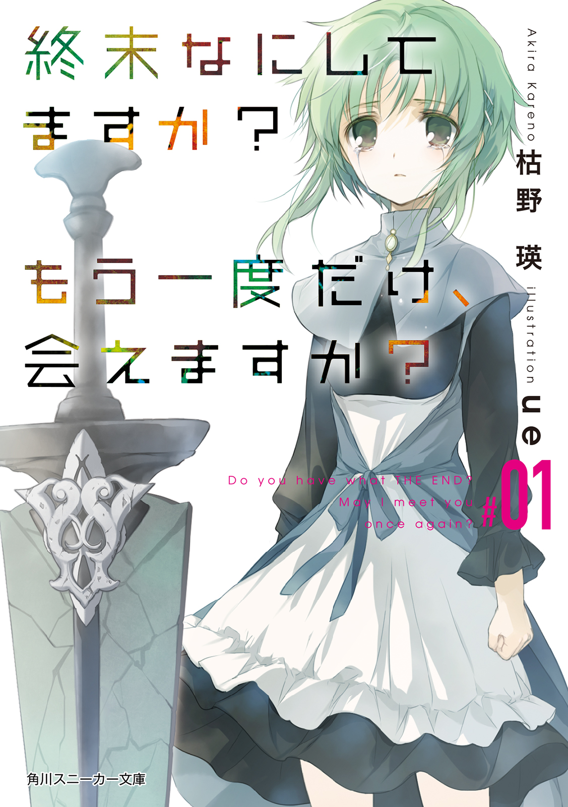
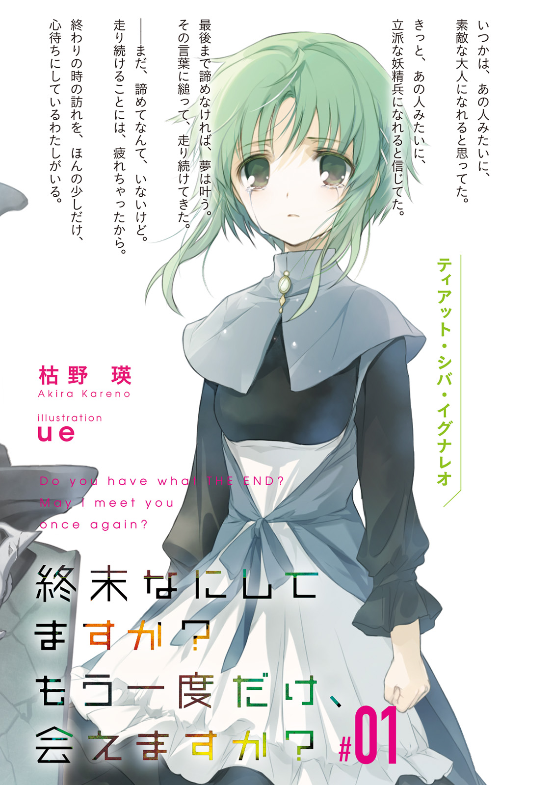
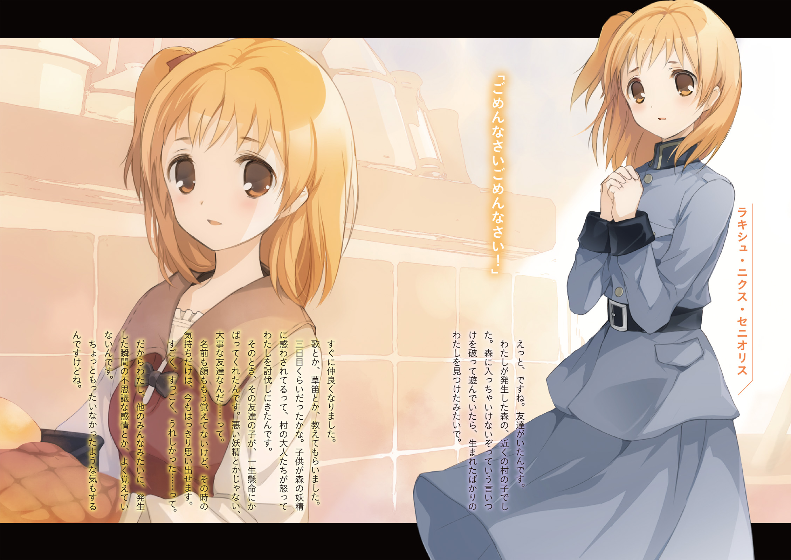
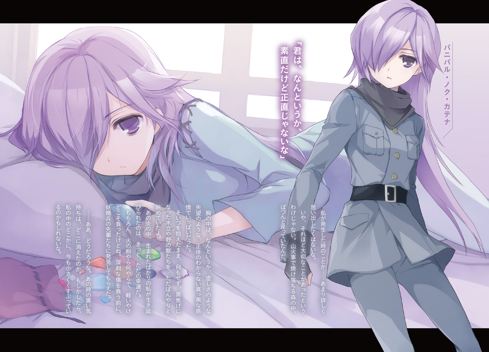
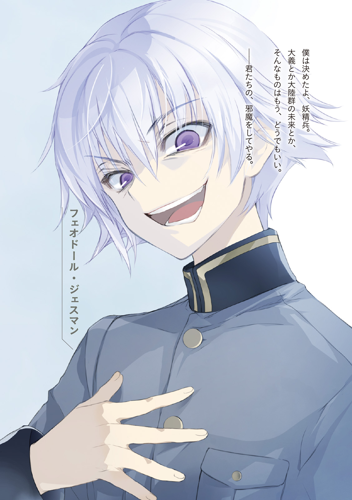
終末なにしてますか？ もう一度だけ、会えますか？#01
枯野 瑛

角川スニーカー文庫
本作品の全部または一部を無断で複製、転載、配信、送信したり、ホームページ上に転載したりすることを禁止します。また、本作品の内容を無断で改変、改ざん等を行うことも禁止します。
本作品購入時にご承諾いただいた規約により、有償・無償にかかわらず本作品を第三者に譲渡することはできません。
本作品を示すサムネイルなどのイメージ画像は、再ダウンロード時に予告なく変更される場合があります。
本作品の内容は、底本発行時の取材・執筆内容に基づきます。
本作品は縦書きでレイアウトされています。
また、ご覧になるリーディングシステムにより、表示の差が認められることがあります。
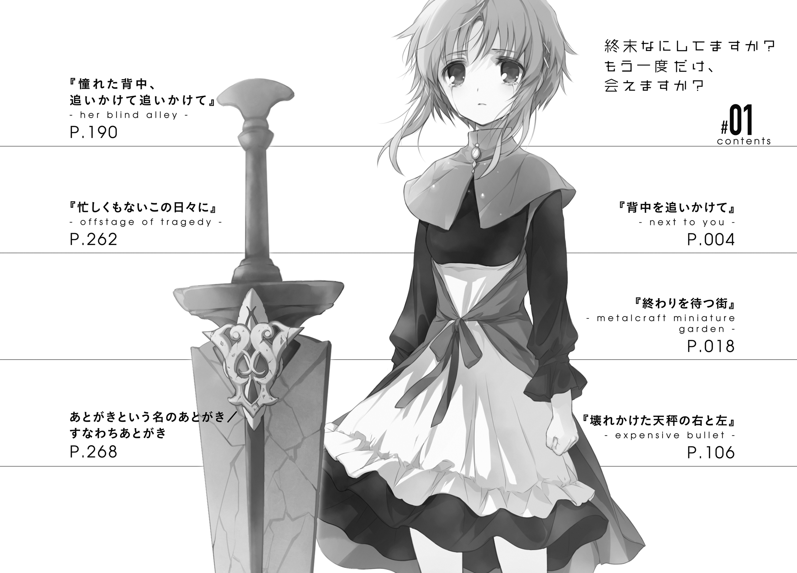
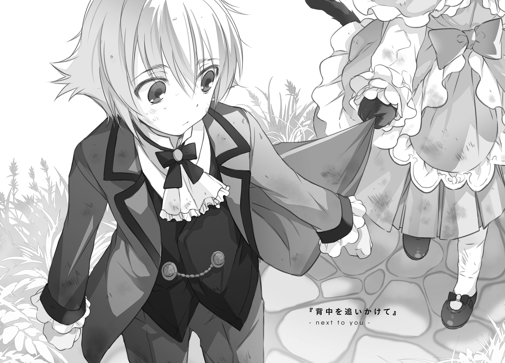
最後まで、義兄は反対してくれていた。
けれど両親と祖父母が、どうにもその話に乗り気だった。
最終的には義兄も折れた。「どうしても嫌だと思ったらすぐ言うんだぞ」と何度も少年に言い含め、無念そうに引いていった。
政略結婚の話である。
その時の少年は十歳で、相手の娘は七歳だという話だった。
案内された場所は、緑の深い公園だった。
両家で借りきったその公園のどこかに、相手の娘がいるということだった。
少年がその子を見つけて運命的に出会うところから、見合いが始まる。後は二人で距離を縮めて、仲を深めてもらって、自然な流れで婚姻の話へと持っていく、と。
バカじゃないのか。
こんだけ広い場所を借りきってまで演出しておいて、運命も何もあったもんじゃない。自然な流れも何も、段取りの最初から最後まで、不自然じゃない場所が一か所たりとも見当たらない。
聞けば、既に百近くの縁談を取りまとめてきた名媒酌人の手配であるらしい。なんというか、その事実が既にうんざり案件だ。既に二百人近い男女が、こういうわけのわからないセンスに付き合わされてきたというのか。心よりご同情申し上げます。これから自分もそっちに行きますので、どうかよろしくお願いします。
そんなことを考えながら馬車を降りて、公園に入った。
ちょっとした湖があって、それをぐるりと囲む遊歩道があって、花畑があって、いくつもの森がほどほどに視界を遮っていて。さあ思う存分ドラマチックを堪能しなさい、という意図が透けて見えて、どうにも胸焼けがしそうになった。
「......さっさと済ますかな」
気遣ってくれていた義兄には悪いが、今回の話について、少年は心底どうでもいいと思っていた。
そもそも、十の子供を政略結婚のコマとしてホイホイ使ってしまうような家に生まれたのだ。愛だの恋だのに夢を抱くような育ち方は、最初からしていない。
ついでにもうひとつ理由を挙げるなら、相手の年齢だ。
何だ七歳って。三つも下じゃないか。
今回の縁談を言い出したやつは、どうせ子供同士だから多少の差があったところで問題はない、くらいにしか考えていなかったに違いない。大人にありがちな勘違いだ。子供にとっての三年間という時間の大きさ、そこから出てくる絶望的なまでの人生経験の違いというやつのことを、まったくわかっていないのだ。どんな大人だって子供だった時代を経験しているはずなのに、そういう当たり前のことをどうして忘れられるのか。
──さて、それはそれとして、その七歳児はどこにいるんだろう。
ありがちなロケーションから順番に潰していくことにする。
季節の花畑。いない。
丘の上のガゼボ。いない。
風の吹く遊歩道。一周してみたけど、それらしい相手は見つからない。
これはもしかして、もしかするのかもしれない。
何せ相手は七つである。今回のこの茶番の意味を正確に理解できているかも怪しい幼さである。もしかして本当に、かくれんぼか何かと勘違いしているのかもしれない。だとしたら、状況は少し厄介だ。何せこちらは、ドラマチックな演出の妨げになるからか、相手の容姿さえまともに知らされていないのだから。
であれば、既にチェック済みの場所も、もう少し詳しく調べたほうがいいか。
「まいったな......」
面倒だなと思いながら、その場でくるりと振り返った。
少し離れたところにいる小さな女の子と、目が合った。
「............あ」
「............ひゃ」
考えてみれば、当たり前のことである。
大人の世界の面倒くささを既に受け入れていた少年と、それより三歳も若いこの少女とで、この状況に対する考え方が同じだとは限らないのだ。
強引に結婚させられるというその相手のことを警戒するのは当たり前。出会いという決定的なイベントをできるだけ先延ばしにして、その間に少しでも相手のことを観察しておこうと考えるのも、まぁ自然なことのはず。
「あうっ」
悲鳴じみた小さな声、少女は踵を返して走り出そうとして、
ドレスの裾を踏んだ。
盛大にずっこけた。
薄い蒼色のレースを重ねた高価そうなドレスが、一瞬で土まみれになった。
「あ......うぁ......」
女の子は頑張った。一瞬だけ、涙を堪えた。
一瞬しかもたなかった。ぺたんと土にお尻を落としたまま、土砂降りの空もかくやという勢いで、わんわんと大声で泣き始めた。
湖の水をふくませたハンカチで、顔についた土を拭ってやった。
ドレスの土は、できる範囲で払ってやった。
それでもぐずぐずと暗い顔はひっこまなかったので、少年は自ら近くの土の上に身を投げた。ごろごろとその場で転がり、着ているスーツを徹底的に汚す。
その様子が、よほどおかしかったのだろう。女の子はすぐにきょとんとした顔になり、やがて、楽しそうに笑い始めた。
「どう？ これで、怒られる時は僕も一緒だ」
「うん！」
ぴょこん。その子の尻のあたりから、黒毛のしっぽが飛び出た。
──その女の子は、先祖返りを起こしていた。
汚れた手袋を脱ぎ、ドレスの泥を払うと、はっきりと見てわかった。
徴無しの一族に生まれたはずなのに、遠く遡った血縁のどこかに混じっていた獣人の血が、彼女の代で中途半端によみがえっていたらしい。
両手両足を覆う、薄い黒の毛皮。尻から生えた尾。帽子の下に隠されていた、小さな子猫の耳。よくよく見ると瞳も猫のそれで、頰には六本ほどの細いひげが生えている。
「ワタシみたいなデキソコナイには、ちょうどいいエンダンだって」
喉のあたりにも違いがあるのだろうか、発音も少しだけ独特に聞こえた。
「あー、なるほどなぁ」
おそらく、月並みにプライドの高い一族だろう。
そこに生まれた獣人もどきの娘など、邪魔ものでしかなかったはずだ。
ならば今回の政略結婚の話が強烈にゴリ押しされていた理由も納得できる。厄介払いをしたうえで、良家二つの間のパイプを強化できる。この子の家の連中には、相当の妙手に見えていたに違いない。
「あなたは、ちゃんと、シルシナシですか？」
「まぁ、いちおう、そうだね。徴無しだってことを『ちゃんと』と言っていいのかは難しいとこだけど」
「エ？ シルシナシなら、みんなとおなじ。ちゃんとしてる。でしょう？」
「そのへんは、ケンカイのソーイってやつかな。世の中には、君のご両親以外にもいろんなやつらがいるんだよ」
「......むずかしいコトバ、よくわかりません」
「僕は十歳だからね。七歳よりいろんなことを知ってる」
「ズルい。ワタシも、すぐ、十歳になります」
「そのころには僕は十三だ。今よりもっと勉強して、もっと物知りになってる」
「......うー」
頰を膨らませる女の子の姿は、いかにも年相応で、可愛らしかった。
もちろん結婚適齢期にはまだまだ遠い。
けれど、魅力的だなと、認めざるを得なかった。
なんだかんだで、ドラマチックな出会いをさせられた。距離も縮まったし、仲もよくなってしまった。後は自然な流れで婚姻話に至るだけ。
まさかすべてを計算されていたというわけではないだろうけれど、結果的には思惑通りに動かされた形になるわけだ。なんというかこう、むかつく。
「あの」
怒りが顔にでも出ていたのだろうか。どことなく申し訳なさそうに、女の子が泥まみれの袖を軽く引いてくる。
「今日、ワタシ、もうかえらないと、いけないんです」
言われて気づいた。けっこう時間が経っている。湖のそばに据えられた大時計を見れば、予定の終了時間まであと十分も残されていないとわかる。
「そうか。ま、そこそこ楽しい時間だったよ」
言って、その場でかるく伸びをした。
ここまで茶番に付き合ったのだから、もう、家族の期待には一通り応えたと思う。祖父さんは「〝瞳〟を使ってでもモノにしろ」と強硬に主張していたけれど、正直そんな気にはなれないというかその必要もなかったというか。
だから、この話は、断ろう。
小さなこの子を（あと自分も）道具扱いするような計画には、失敗してもらおう。
「今よりちょっと大きくなったら、なんとかして家から出るといいよ。きっと、今のまま徴無しの家に閉じ込められているより、過ごしやすいと思うから」
裾を引かれた。
「何？」
「おしまい、なんですか？」
黙る。
「まだ、おハナシしたいです」
それは。
「僕の方は、別に話すことなんて」
裾を握る小さな手に、ぎゅっと力がこもる。
たぶんこの子は、これまで、こういうおしゃべりを許されないで育ったのだろう。
この子が無知でなくなってしまったら、徴無しではないという自分に負い目を感じなくなる。それは一族の者にとって面白くない。そんな理由で、鳥籠の中に閉じ込められていたのだろう。
いまこの手を振りほどけば、それで終わり。
少年は、これまでと同じ生活の中に帰ることになる。
少女も、これまでと同じ生活の中に帰ることになる。
「おねがい、です」
使い慣れない勇気を振り絞っているのだろう。
少し息を荒くしながら、その女の子は訴えかける。
「──また、いつか、会ってくれませんか？」
しょうがないな、と思う。
こんなの、断れるわけが、ないじゃないか。
百組近くの縁談を取り持った誰かさんの腕を、称賛したくなる。
「わかったわかった。会うよ、会うから泣きそうな顔はやめて」
ひらひらと手を振って、降参のポーズ。
「ただ、長い付き合いになるかもしれないから、ちょっとは覚悟しといてよ？」
「長い......三年くらいです？」
「そんなので済んだら縁談って言わないんだよなぁ......」
三年後のこの子のことを考える。どんなふうに成長するだろう。
その後の未来のことも考える。どんなふうな女性になっていくんだろう。
そして、そんなことを楽しく想像している自分自身に気づき、悲しくなる。
「たくさん会えるなら、たくさんウレシイです」
「そうかそうか。喜んでもらえて、僕も嬉しいよ」
ほんのちょっとの皮肉と、その奥底にこっそり隠した正直な気持ち。たぶん少女はそんな細かいニュアンスにはまったく気づかずに、言葉だけをそのまま受け取って、
「ハイ！」
直視できないくらいに眩しい笑みを、浮かべた。
両親は喜んだ。祖父も喜んだ。
義兄だけが、どうにも複雑そうな顔をしていた。
けれど「普通にいい子だったから、普通の意味でおつきあいするだけだよ」と説明すると、「そうか」と少し複雑そうに頷いた。
それからちょくちょくと、二人は顔を合わせる機会を得た。
会うたびに少女は、何か新しい話はないかとせがんできた。その期待に応えるために、少年はそれまでにも増して勉学に励まなければならなくなった。
不満がなかったわけじゃない。
主に先方の家のやり方などについてだが、苛立ちを感じたのもしょっちゅうだ。
しかし、そういったものを差し引いてなお、それは楽しい毎日だった。
いつまでも続いていてほしいと、そう心から願えるような日々だった。
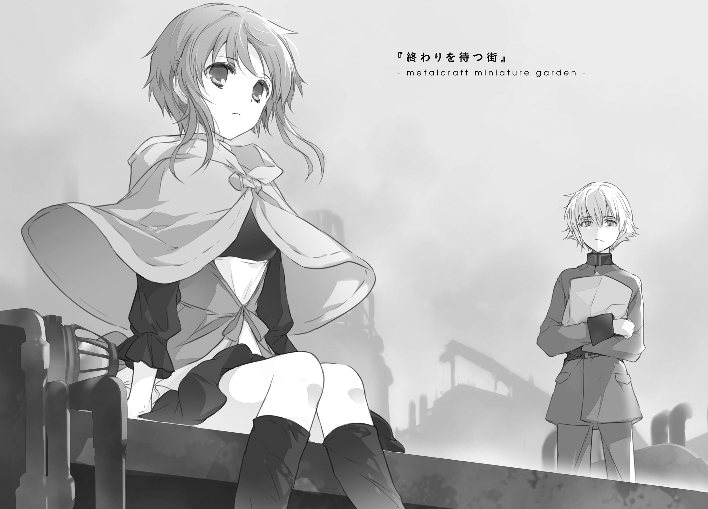
１．若き四位武官
ライエル市は滅びると宣告されてから、そろそろ半年。
わかっていたことではあったけれど、街は順調にゴーストタウン化していた。毎日のように人通りは減り続け、賑わっていた店舗街も次々とシャッターが下りていく。
幸い、贔屓のパン屋はいまだに営業中だった。品数が減ってきてはいるものの、定番の商品はまだ健在。すきっ腹の命ずるまま、袋で抱える量のドーナツを購入する。
「ありがとうございましたぁー」
店員の気の抜けた挨拶を背中に浴びながら、フェオドールは店を出る。
さて、どこに行こう。
兵舎に戻ってからこいつを食べるというのは、いまいちうまくない。どうせ外出許可はとってきていないのだから、さほど急いで戻ることもない。せっかく私服に着替えたこともあるし、どうせなら、見晴らしのいい場所で食べたいと思う。
ドーナツのひとつを口にくわえ、もごもごとやりながら歩き出す。
この街特有の、年季の入った金属の匂いが鼻をくすぐる。
もともとここは、浮遊大陸群随一の鉱山があった場所だ。
急な山稜にへばりつくようにして生きてきた鉱夫たちの居住区が、そのまま、今ある街の母体となっていた。そこにまともな都市計画の入り込む余地はなかった。バラックが建てられ、道が走り、路面気動車用の線路が敷かれた。すぐに、建材としての石が不足した。豊富にあった鉄板が、その代わりを務めた。あちこちから集まってきた岩小鬼やら紫小鬼やらが、次々に採掘用の機械仕掛けを取り付けた。
道にも壁にも、所狭しと、正体不明のパイプやら雷気線やらが走っている。
おそらくは浮遊大陸群全体でもここにしかない、金属製の街並み。
「よっ、と」
表通りは、まだ歩きやすいほうだ。場所によっては、馬車が通れるくらいの広さと平坦さを確保した場所もある。
しかし少しでも裏道に入ると、状況は一変する。
まず、平坦な道というものがほとんどない。そこにあるものは急な坂道と、これまた急な階段のどちらかだ。狭苦しい階段を昇って降りて、螺旋を描いてぐるぐる回る。どこもかしこも薄暗く、しかも素人目には似たような景色が続いている。方向感覚なんてものはすぐに役に立たなくなる。ついでに言えば、方位磁針なんてものが役に立つはずもない。
ライエル市は、余所者に優しくない街だ──などと言おうものなら、大抵のライエル市民に「冗談だろ」と笑い飛ばされていたものだった。いわく、この街は誰にだって平等だ。地元の俺たちにだって、これっぽっちも優しかねぇよ。
それもすべて、過去のこと。
「おわった、った、った」
太いパイプに足をかけ、狭い隙間に体をねじこむ。
道なき道、街中の密林を分け入ってゆく。
この浮遊島の鉱山が閉じてから、もうだいぶ経っている。長い間、メンテナンスされていないのだろう。途中で何か所か、古くなったリベットが外れて、滑落しそうになったりもした。
「......寂しいなぁ」
太いパイプに腰掛け、ドーナツをくわえ、一息をつく。
視界の隅のほうを、小型の自律人形がちょこまかと走り抜けていくのが見えた。
あれらは、製造時に刻み込まれた命令に忠実に動き続けるだけの道具だ。ある程度複雑な命令も受け付け、その範囲内であれば多少の判断力を持たせることも可能。しかし、その命令の外側にあることは一切できない。
この街のどこかの機械をメンテナンスするように、造られたのだろう。そして、その命令には「休め」という一文が含まれていなかったのだろう。だから、あれは、物理的に壊れて動けなくなるその時まで、ああやって仕事を続けていくのだろう。
「寂しいなぁ」
もう一度同じことをつぶやいて、立ち上がる。
廃劇場の脇にある小さな螺旋階段を昇り、重くさび付いた扉に突き当たる。
とにかくごみごみしているこの街の中では、遠くまで見わたせる眺めのいい場所は限られる。そしてこの扉の向こう、ちょっと大きな建物の屋上であるその場所は、その数少ない遠景スポットのひとつなのだ。
ここまでの道で、ドーナツを既に半分近く食べ終わってしまった。しかし言い換えれば、残りの半分はまだ残っている。
「ほいへっほ」
さび付いた扉を、全身を押し付けるようにして、開く。耳障りな重い音。
視界が、一気に開ける。
雲海の向こうに、太陽が沈もうとしている。
眼下には、銅板をめちゃくちゃに張り重ねたような、薄汚れた街並み。
人の気配の驚くほど少ないその景色には、眠りの中に沈んでいるような静けさが、薄く穏やかに広がっている。
女の子がいる。
誰もいないだろうと思っていた。ほとんど確信していた。だから驚いて、口にくわえたままのドーナツを落としかけてしまった。
広場の隅、手すりのない縁に腰掛けている。
足をぶらぶらさせながら、空っぽの目つきで彼方を眺めている。
その姿からは、まるで生気が感じられない。間違いなく生きているはずなのに、まるでそう感じさせない。異様に精巧な人形を目の前にした時のような、不安めいた違和感。
その横顔からは、うまく感情が読み取れない。空っぽというよりも、その真逆の表情。色々な感情がごちゃごちゃに混ざり合っているせいで、まるで灰色の空洞だけが広がっているように見えてしまう。
──あー。
フェオドールはその場で、半歩引いた。
──これって間違いなく、関わっちゃいけないパターンだよね？
確信に近い思いを抱いて、背を向けようと決める。
何か悩みでもあるのかなとかトラブルでも抱えているのかなとか、そんな甘っちょろいことは考えない。そんなもん、あるに決まっているのだ。わざわざこんな場所まで来て、あんな顔までしていて、その原因が「最近ちょっと体重計に乗るのが怖くて」程度のことだったりするはずがない。
しかも、よく見ると、さらにアレだ。この少女、角も牙も生えていないし、白い肌は毛皮や鱗で覆われてもいないし、背中や尻から翼や尻尾がにょっきり生えてもいない。
そういう外見を持つ種族は、俗に徴無しと呼ばれ、多くの者たちに嫌悪されている。一般的に不吉の象徴とされてすらいる。近づいてはいけないし、関わってもいけない。どうせ、ろくなことになりはしない。
そのことをよく心得ていたから、フェオドールは、
「危ないよ」
そう声をかけた自分自身に、本当に驚いた。
慌ててぱしんと右手で口を覆ったけれど、もちろん間に合わない。言葉は少女の耳に届いてしまった。
まるで、初めてこちらに気づいたかのように──もちろんそんなはずがないのだけど──少女はぱちくりと瞬き顔を上げ、こちらを見た。視線が重なった。
その表情に、生気が宿って......いや、戻っていた。
年はおそらくフェオドールの少しだけ下、十代の半ばといったところだろうか。若草色のふわふわした髪が風に躍り、深緑色の瞳が夕陽を照り返してわずかに揺れている。
ヤバい。
関わってはいけないと結論した直後に、思いきり関わってしまった。
「ほへ？」
まるで小さな子供のようなあどけない顔で、少女はまばたきをひとつ。
「......あー。大丈夫よ？ すべって落ちるみたいなドジはしないし。それにここ、下は水が溜めてあるみたいだから万一の場合も安心だし」
そう言って、少女は自分の腰掛けている崖の下を見下ろした。それはまぁ確かに事実だろう。ここの下には、ちょっとした深さの貯水槽がある。落ちたところで命に係わるというようなことは、まずないだろう。
「でも、心配してくれたのね。ありがと」
少女は笑った。
屈託のない、いい笑顔だった。少なくとも、そう見えた。つい先ほどまでの翳りはまさか幻か何かだったのかと、疑いたくなるほどに。
「いや、そういう意味じゃないんだよ」
会話を切り上げてもいいタイミングだった。このまま無言で立ち去っても、不自然さはなかったはずだった。しかしフェオドールは、言葉を付け加えた。
「察するに君、よその街から来たばかりだろ？」
「うん、そうよ？」
「じゃあちょっと、聞いてほしい。
この街は昔、大きな鉱山だった場所なんだよ。近くの浮遊島で貨幣が刷新されてた時期なんかには、そりゃもう大勢の採掘師が集まってきてた。採掘用の機械仕掛けが次々導入されて、居住区の建て増しなんか全然間に合わなくてさ」
少女が首をかしげる。
「今じゃその鉱脈はすっかり涸れたけど、名残は色々残ってる。この街のほとんどは銅板とリベットでできてるし、山を切り崩した斜面が多いし、居住区のあちこちに仕掛けられた機械は今もまだ稼働中だ」
「う、うん？ 変わった眺めの街だなってのは、見てわかるけど」
改めて、少女は街を見下ろす。
「土の地面とかぜんぜん見えないのに、なんだかあったかい感じがするのね。石造りの街とかとはまったく違う、不思議な感じ」
「それは、まぁ......」
あったかい感じというのはもしかしたら、市全体の地下に温水を循環させるように大がかりな機械仕掛けが埋め込んであるからかもしれない......などと言ったら、この娘はどう反応するだろうか。驚いたり感心したりするだろうか。呆れたりつまらなそうな顔をするだろうか。喜んだり笑ったりするだろうか。
「ちゃんと、見ておきたかったんだ。自分たちが、何のために命を遣うのか」
──不思議なつぶやきを、聞いた。
「知らない場所を歩いて、知らない景色を眺めて、知らない人と話して。そうしたら、ちょっとだけでも知ってる場所と、ちょっと知ってる景色と、ちょっと知ってる人のために戦えるじゃない？ そっちのほうが、ずっとがんばれると思って」
「君、何かと戦うの？」
「うん」
少女は、素直に頷いた。
「きみが話しかけてくれて、よかった。街を歩いててもさ、全然他に誰もいないんだもの。まさかもうみんな死に絶えた後なのかぁ！ って、ちょっと怖くなっちゃった」
「ああ──わかるわかる、その感じ。街の中で動いてるのが自分一人だったりすると、世界の終わりって感じするんだよね」
「そうそう。しかも自律人形だけはへーぜんと仕事とか続けてるのが、なんかこう、すごく不気味な感じに見えちゃうの」
お互いの言葉に共感しあい、二人で何度も頷き合う。
そのうちおかしな気分になってきて、どちらからともなく笑いだす。
ふと、気づいたことがひとつ。
「さっきの話の続き。それなんだけどさ」
少女の腰掛けた場所の近く、継ぎはぎに継ぎはぎを重ねた壁面を指さす。目立たない色の古びたランプが、ちかちかと明滅している。
「これ？」
「そう、それ。この街にも、眺めてるだけじゃわからない地元の風景、ってのがあってね。具体的にはそのランプとかがそうなんだけど」
「うん」わかってない顔。
「さっき言った、稼働してる機械だよ。もちろん完全に昔のままってわけじゃなくて、いまは少し改造されて暖気の確保とか用水の管理とかに使われてるんだけど、機械そのものが古いのはどうしようもなくて、特に排気あたりのシステムが従来のままで」
「うん」わかってない顔。
「アラートランプが光った後、ときどき、派手に蒸気を噴いたりする」
計ったようなタイミングで、フェオドールが言った通りのことが起きた。
さほど温度が高いわけでもない。量も密度も大したことがない。直撃したとしても、やけどなどの心配はまったくない。
この街の住人であればとりたてて驚くこともない日常の光景。
そしてもちろん、この街にまだなじんでいない異邦人の少女は、
「んがあっ!?」
やたらと雄々しい悲鳴をあげて、思いきりのけぞった。
ずるりと尻がすべった。
繰り返すが、少女の腰掛けていた場所の真下には、ちょっとした深さの貯水槽がある。落ちたところで命に係わるということは、まずないだろう。
どっぼおーん。派手な水音と、それに負けない水柱。
「だから危ないよって言ったのに」
貯水槽から少女を引き上げた。
「その後の話が長すぎ......」
「うんまぁ、それについてはごめん。つい興が乗っちゃってさ」
冬は過ぎた。毛皮のない自分たちでも、そこそこ暖かく風を受け止められる季節だ。しかしさすがに、全身びしょ濡れのままで過ごせるというほど暖かいわけではない。
「早く帰って、お風呂に入ったほうがいいよ。道とかは、大丈夫？」
「だ、大丈夫......」
ぷるぷると少女は小さく体を震わせる。
「いい、今のは、別にびっくりしたとかじゃないんだから。少し泳ぎたいなって思ったから、自分で飛び込んだんだから。わかる？」
あまりに無茶苦茶な強がり。ぷっ、と思わず吹き出してしまう。
「いや、それはさすがに無理があるよ」
「う......やっぱり？」
気まずそうに、少女は視線をあさってのほうに向ける。意地っ張りなのか素直なのか、よくわからない子だ。
ぶへくし、と力強いくしゃみ。
「ほらほら、急いだほうがいい。この街は、陽が落ちた後の冷え込みがすごいんだ。こんなことで風邪をひくのもバカバカしいだろ？」
「そうする」
ぶるるっ、と、まるで犬のように体を震わせる。
「その......危ないって教えてくれてありがとね、あんまり役には立たなかったけど」
「ひとこと余計だけど、どういたしまして。ほら、はやく帰った帰った」
しっしと手を振って追い払う。
「うん、そうする」
へくしっ、と今度はそれなりに可愛らしいくしゃみ。
少女はフェオドールに背を向けて、
「あのさ。お互い名前も知らないのに、変なことを言うかもしれないけど」
「え？」
「わたしのことは、忘れてくれると嬉しいかな」
奇妙なことを言い残し、ぱたぱたと水滴を辺りにふりまきながら、駆けだした。
わざわざ言われるまでもないことだと思った。
何せ、今の自分は、伊達眼鏡をかけていない。
あれがないと、うまく愛想笑いができないのだ。今の自分はきっと、みっともなく顔をひきつらせていたに違いない。あの少女は特に何とも言っていなかったが、内心では呆れていたかもしれない。互いに見知らぬ同士、二度と会わないだろうことは幸いだった。このまま忘れて、なかったことにしてしまいたい。
「......本当に、何やってるんだろうな、僕は」
真顔で、忌々し気に吐き捨てる。
ドーナツをくわえて、嚙み砕いて、飲み込む。
ふと、遠い空のほうに目をやる。
今日は、よく晴れている。視界を遮る雲がないから、いつもより遠くまで見渡せる。
雲海の彼方に、ひとつの黒い塊が、ぽつりと浮かんで見える。
39番浮遊島。
ほんの五年前までは、この38番浮遊島にとっての、良き隣人だったもの。
肥沃な平地を擁し、近隣の浮遊島の食糧事情を力強く支えていた。獣人を中心に、多くの種族の者たちが住み暮らしていた。
すべては過去形だ。五年前のあの日、あの島のすべては変質した。
今のそれは、浮遊大陸群の空を漂う、巨大な墓標であり──
〈重く留まる十一番目の獣〉という名の脅威、そのものだった。
この世界はずっと、破滅の傍らにある。
この手の話題の始まりに挙げられるべきは、やはり、人間種の暴虐と、地上の終焉であろう。
今を生きる者にとってはにわかに信じがたいことではあるが、かつて、あの地上の広大な土地は、そのほとんどが肥沃であったのだという。緑で覆われていたり、海という名の巨大な水たまりがあったり、数えきれないほど多彩な生き物で溢れていたりした。
その地上を滅ぼしたのが、人間種だった。
彼らは、強大にして理不尽な侵略者である〈十七種の獣〉を生み出して世界に放った。そいつらはあっという間に、人間種ごと地上を食い尽くし、何もない灰色の砂原へと変えてしまった。
かろうじて生き延びたわずかな者たちは、大賢者という偉人の導きによって、空の上へと住み処を移した。
〈十七種の獣〉は空を飛べない。無数に浮かぶ巨大浮遊岩の上に住み着いた彼らは、ひとときの安寧を得ることができた。脅威の届かないその場所を新たな住み処にしようと、家を建て地を拓き、街を興していった。
地上は広く、浮遊岩の上は狭い。
失ったものはあまりに大きく、残されたものはあまりに小さかった。
それでも彼らは、自分たちを受け入れてくれる最後の天地を浮遊大陸群と名付け、新たな故郷とした。
それから五百年以上の時が流れた。
いちおうは平和と呼べる日々が続いていた。
その間、〈十七種の獣〉の襲撃がまったくなかったわけではない。幾つもの浮遊島が墜とされたし、そこに生きていた者たちの命は失われた。
けれど言い換えれば、被害はそれだけに抑えられていた。
地上そのものをあっという間に滅ぼした〈獣〉の脅威に脅かされ続けながら、浮遊大陸群はそれでも空に浮かび続けていた。
そんな日々も、五年前のあの日、突然に終わりを迎えた。
その日、〈穿ち貫く二番目の獣〉が11番浮遊島に現れた。
その二月後、〈広く包み込む五番目の獣〉が13番浮遊島に現れた。
ほぼ同日、〈重く留まる十一番目の獣〉が39番浮遊島に現れた。
もちろんこれらの〈獣〉も、空を飛ぶことなどできない。地上を離れることのできないそれらが、浮遊大陸群を襲うことなどできるはずがなかった。しかし事実として、それらは突然に空の上に現れ、ろくに対策もとれていなかった人々を虐殺した。
この悲劇の原因は、後に判明した。
当時13番浮遊島にあったエルピス集商国という都市国家が、技術開発および政治的工作のために地上から〈獣〉を持ち帰ったのだと。
そんなことをする者がいるだなどと、誰も考えていなかった。いや、それ以前に、どんな技術を駆使すれば〈獣〉を捕獲するなどということが可能なのか、その想像すらしてなかった。その思考の隙が、この悲劇を招いた。
そのうち一部、11番浮遊島を襲った分の〈獣〉は、奇跡的に撃退された。
そして残りの二つの島では、奇跡はおこらなかった。
13番浮遊島にあったあらゆるものは、蒼く澄んだ液体に溶かし尽くされた。
そして39番浮遊島にあったすべては、黒く輝く美しい結晶の柱となった。
問題は、そこからだ。
〈獣〉は空を飛べない。
だから、13番浮遊島を吞み尽くした〈獣〉は、今も13番浮遊島を包んでいる。
そして、39番浮遊島を蝕み終えた〈獣〉は、今も39番浮遊島に留まっている。
今のところ、やつらには、他の浮遊島に攻め入るような手段は何もない。しかし、寿命を持たないそれらは、いくらでも浮遊島の上に留まり空を漂い続けることができる。そして事実として39番島はいま、38番島に、少しずつ近づいてきている。
護翼軍の航空士が試算したところによれば、そう遠くないうちに、ふたつの島は衝突することになるのだという。
正面からのぶつかり合いというわけではない。側面を激しくこすり合う程度のものだ。本来であれば、派手な振動による被害こそあれ、浮遊島そのものの存亡を問われるほどの災害にはなりえない。
しかし今この時に限り、それは完全な破滅の予言に等しかった。接触するものをすべて取り込むあの〈獣〉は、必ず、その機に38番浮遊島に乗り移ってくるだろう。そして当然のように、この島にあるすべてを飲み込み尽くすだろう。かつて39番浮遊島で、そうしたように。
破滅が目前に迫っていることがわかっていても、避けようがない。
その噂が広まり始めたのが、今からおおよそ半年前。ライエル市に住んでいた者の何割かは、噂を聞くなりすぐさま他の浮遊島へと逃げ出した。残っていた者の過半数も、残り時間が減るに併せて、少しずつ数を減らしていった。
今のここには、五年前の五分の一にも満たない人数しかいない。市としての最低限の体裁も、保てているやらいないやら。
このライエル市は、今はまだ死んでいないというだけの、もう生きていない街。
まだ滅び終わっていないというだけの、終末の箱庭だ。
２．護翼軍第五師団
少年──フェオドール・ジェスマンは、自分の容姿が好きではない。
癖が強く櫛に従ってくれない、くすんだ銀色の髪。目つきのひねくれ曲がった深い紫色の瞳──と、それを隠すようにかけられた、黒縁の度なし眼鏡。白く透き通った肌は、堕鬼種という種族の宿命のようなものだ。
角も牙も毛皮も鱗もない。
それは、言い訳の余地がないほどに明確で典型的な、徴無しの姿。
徴無しは嫌われ者だ。浮遊大陸群に住む多くの者に嫌われている。そしてフェオドールもそのひとりだ。徴無しの連中は一人の例外もなく性格破綻者のろくでなしで、根こそぎいなくなったほうが世の中のためだと（これは半ば冗談として）考えている。
種族としては、この狭い浮遊大陸群に住む多くの者がそうであるように、混血だ。父方の曾祖母は喰人鬼だし、母のほうの血を遡っていけば狐の獣人が混じっていたりもするらしい。しかしどうやらその辺りの血はフェオドールの中であまり仕事をしていないらしく、彼の外見も性質も、ジェスマン家のほとんどの者がそうであったように、典型的な堕鬼種のそれだ。
鬼種の一種で、つまり、はるか遠い時代、人間種たちの集落の中から発生した亜種の、末裔。人間種の傍らに潜み、呪われた瞳と悪しき言葉を囁いて堕落と破滅へ歩み寄らせる──そんな趣味の悪いことを目的に生きていた、なんとも後ろ向きな種族。
そして、人間種がいなくなった現在も、特に理由なく惰性で存在を続けている。
かつては、その瞳に、人の心を惑わし操るというとんでもないパワーを秘めていたらしい。その力を駆使し、最盛期の堕鬼種の中には、小国をまるごと享楽と堕落に沈めていたなどという偉人もいたらしい。しかし、時間が経ち混血も進んだ今、堕鬼種にそんな素敵な力は残っていない。せいぜいちょっと口がうまくて噓が巧みなだけの、ありふれた徴無しだ。
そんな、わびしい裔の姿こそが、このフェオドール・ジェスマンだ。
ぼがん！ という爆発めいた音。
踏み抜かんばかりの勢いで銅板の床を蹴りつけ、狼頭の獣人が巨軀を宙に擲げる。倒れ込まんばかりに傾けた体を縦にねじり回し、天から落とすような勢いで右の腕を振るう。鍛えられた筋肉の塊が鞭のようにしなり、頭蓋どころか股まで裂かれそうな勢いの拳が天空から一直線に落ちてくる。
綺麗な動きだ。一見して豪放なだけの動きのすべてが、繊細に形づくられている。
洗練された力任せとでも言おうか。力を信じ、力に委ね、そして力に任せる。自身の最大の武器である筋量と膂力にすべてを託すための、剛に剛を重ねた拳の業。爪という〝裂く〟武器を生得する獣が本来なかなか行きつけない、純粋に〝叩き壊す〟ことのみを追求した先にある、ひとつの境地。
──こりゃあ、僕の力じゃ、どうやっても崩せないかな。
ここまでの馬鹿力が相手なのだ。あの腕を横から押したところで、軌道は微塵も動かせないだろう。足払いを仕掛けようにも軸足は宙を廻っている最中だし、そもそもその勢いを見れば、どこかに触れただけでこちらが吹き飛ばされることは自明の理。だから、フェオドールは体を浅く沈め、体の陰へと右手を隠した。
獣人の眼が反射的にそれを追う。左足へと重心を移動、動きを死角に隠したままで右手を滑らせる。手品師のようなその動きは、つまり短刀使いの常套の動きでもある。得物を抜き放っているか否か、その刃はどういう形のものなのか、その他一切の情報を相手に隠したままで一撃を閃かせる。
冷静に考えれば、そんなはずはないのだ。ここは体練場で、この戦いは体技の模擬戦で、刃のついた本物の武器など持ち込めるはずもない。しかし、生物としての本能と戦士としての経験が獣人を動かした。フェオドールの右手が発揮しうる最大の攻撃力を瞬時に判断、致命傷を避けるべく体がねじれる。両目、鼻先、耳。いかに筋肉を鍛えても防ぎようのない場所、頭蓋の内側に届きうる急所のすべてが、予想される斬撃の線から距離をとろうと宙を泳いで、
繊細だった動きが、致命的に乱れた。
どれだけ調子よく廻っていた独楽も、軸が歪めば動きが乱れる。それまでの体勢を保っていた勢いのすべてが、今度は天地をひっくり返すことに費やされる。しまった、という後悔の色が獣人の瞳に宿る時には、既にすべてが終わっている。
どがん、ばん、ばがん！ 樽を斧で粉砕するような豪快な音を立て、獣人は転倒する。床を跳ね、隣で拳を交え合っていた別の兵士たちをなぎ倒して、壁まで転がってそこで止まる。
時間が止まる。
居心地の悪い沈黙が体練場を満たす。その場の全員が、自分たちの模擬戦を忘れて、壁際で動きを止めた獣人に注がれる。数秒の時間がそのまま流れて、
「────ふははは！ いや見事！ さすがにやりますな！」
むやみに上機嫌の獣人が、がばりと身を起こした。
「触れもせず、騙しの技だけで俺を制してみせるとは！ 生半可な崩しをかけてくるようであれば、轢き潰してやるつもりだったのですが！」
フェオドールはひらひらと両手を振ってみせる。もちろんそこに本物の短刀などはない。今彼がしたことは、簡単に要約してしまえば達人の前で思わせぶりな動きをしてみせることで反射的な回避行動をとらせバランスを崩させた、ただそれだけだ。
周りの者たちの顔に、次々と疑問符が浮かぶ。いま何が起きたのか。なぜこの獣人の巨漢は嬉しそうに負けを認めているのか。その辺りを理解できているのは、当事者の二人だけだ。
「ポートリックさんに評価してもらえると、自信が持てますね」
ずれてしまった眼鏡の位置を、くいっと直す。
ひっくり返ったままの獣人に駆け寄って、手を差し伸べる。伸ばされた手を握って、渾身の力で引き起こす。
「でも、あまり持ち上げないでもらえませんか。所詮は騙しの技、自分自身の力ってわけじゃない。ポートリックさんみたいに、本当に強い人を相手にしてる時しか使えないんですから」
堕鬼種は、噓つきの種族だ。
誰かを〝騙す〟という行為に対して、種としての根っこのところに強い親和性を持っている。だから自然と、その戦い方もこういう邪道へと染まっていく。
「またおかしな謙遜を。しかし、そう言われれば悪い気はしませんな！」
ばんばんばんと肩を叩かれる。とても痛い。
言葉遣いはともかく、手足の態度は完全に、近所のわんぱく坊主に対する気のいいおじさんのそれである。
ポートリック上等兵、兵たちの間では〝頰傷〟と呼ばれている狼徴人で、この護翼軍第五師団に所属する兵の中でも一、二を争う膂力を誇る。
「痛い痛い」
「おお、これは失礼」
何がおかしいのか、手を引いてわははと楽しそうに笑う。
「とと、いたいた。おーい、ジェスマン四位武官やーい」
ナックス上等兵の軽薄な声が戸口から聞こえてきた。
「総団長が呼んでますぜ。何かやらかしたんで？」
「一位武官が？ 僕をですか？」
どういうことだろう、と思う。
現状、呼び出される心当たりはない。
フェオドール・ジェスマン四位武官は品行方正な、模範的な軍人だ。実際の性格や素行はさておき、少なくとも書類や一般的な評価の上ではそういうことになっている。
その評価の裏に隠れてこっそりやっていた悪事がバレた......としたらまずいが、そういう類の話だとしたら何らかの予兆くらいはあったはずだ。たぶん。
「これはもしや、昇進の話ですかな」
脈絡もなく前向きなことを言ってくれるポートリック上等兵には、「だったら嬉しいんですけどね」と曖昧な笑顔を返しておいた。
──くだらないな、と思う。
先の、体術訓練のことだ。
そもそも自分たちが挑もうとしている相手は〈十七種の獣〉なのだ。あれを喩えるなら、形を得た破滅そのものだ。目にしただけで心が生きることを諦めてしまいそうなそれらを前に、まさか拳や蹴りが役立つはずもないだろうに。
意味のない訓練だ。自分たちは精一杯にやっているのだという言い訳作りでしかない。緊張感を保っている体裁で、平和ボケを露呈しているだけなのだ。
「ほんっと、くだらないな」
総団長室へと向かう廊下の途中。
周りに誰もいないのを確認してから、吐き捨てるようにそう呟いた。
護翼軍とは、浮遊大陸群の剣であり、盾である。良くも悪くも、それが護翼軍という組織の存在意義であり、無二の強みであり、そして最大の弱点だ。
まず、浮遊大陸群は一枚岩の国家などではない。その中には無数の種族が住まい、無数の集落が栄え、無数の価値観が渦巻き、善意や悪意の尺度すら共有されないまま、存在している。
その歪な在り方の理由は、護翼軍の興りに起因する。
四百年ほど前のことだ。空を漂い、〈六番目の獣〉が27番の浮遊島に漂着したことがあった。これは大陸群すべてにとっての脅威だということで、そこに生きるすべてのものが一致団結し立ち向かうべきだという話になった。
そこから、喜劇が始まった。
まずは対話を試みるべきだと主張する善意の集団が、友軍の軍事行動を片端から妨害し始めた。ある船団は、自分たちも戦うと言い張る民間人たちに押しかけられ、出港すらできなくなった。命懸けの戦いを悪だとする者たちが、保護の名のもと兵士たちを監禁する事件が起きた。功を争うあまり、互いの脚を引っ張り合う国が現れた。〈獣〉の仕業に見せかけ、怨敵を沈めようとする軍も出てきた。侵略の事実はないすべては情報工作で陰謀だ、という風聞が飛び回った。銀貨の価値が毎日のように書き換わり、大金を得る者と失う者が現れた。ふだんから嫌われていた者たちが、〈獣〉の脅威はすべてやつらの仕業だと指さされ、次々と殺されていった。至天思想が生まれたのもこのころだ。いわく摂理に反してまで生きようとする我らに星神が送った死の使者こそが〈獣〉である、我らは抵抗などせずに喜びの中で死を受け入れるのが正しいのだうんぬん──
誰も彼もが、正しさに殉じた。
自分が正しいと信じたことを、譲れない信念や思いを、貫き通した。
結局あの時は、ただ一隻の飛空艇すらも、27番浮遊島までたどり着けなかったという。
ただ一発の砲弾すら、〈獣〉に向けては放たれなかったのだという。
そして、その遥か後方で、何十という飛空艇が墜ち、何万という命が失われた。
護翼軍の設立は、その十年ほど後のことになった。
浮遊大陸群に住む者たちの意思とは関係なく、ただ浮遊大陸群を守護するために存在する軍事力。意思決定は大陸群憲章にのみ委ね、他のあらゆる法や良識などには従わない。〈獣〉の襲撃および都市・集落間の明確な侵略行為に対してのみ出動し、それを打ち破る。そして、護翼軍を除くあらゆる軍事力は、これらの戦いに加わることを固く禁じられる。
内外の脅威への対応を一手に引き受けることで、それ以上の問題が発生することを防ぐ。護翼軍はそのために創立された。そして現在に至るも、同じ理念の下にある。
「いやもちろん、おれだってこんな細かいこた言いたくないよ？」
護翼軍第五師団、総団長室。
ふるふると煙草をくゆらせながら、被甲人の一位武官いわく、
「けど、仮にも武官たるものが、金網の穴から抜け出してドーナツの買い食いというのはさすがにどうかと思うんだよなぁ」
ひとつ、悪事がバレていた。
「どうせ抜け出して買ってくるなら、御禁制の酒とかそういうやつにしとけよ。それなら、バレてもそれっぽく箔がつくだろ？」
いやいやいやいや？ 何言ってるのこのお方？
「まぁ、いいや。それで、こっからが本題なんだけど」
「......今のは本題じゃなかったんですか？」
「違うよ？ ただの話のつかみ。お前さんに是非担当してほしい案件があってね」
フェオドールは、この第五師団に所属する武官の中でも、特に優秀な部類に入る。
個人の武技。古今東西の戦術の知識。実際的な砲器の扱い。およそ武官に必要なあらゆる技能に、誰よりも深く精通している。貧弱な体格しか持たない堕鬼種の身でありながら、位官の地位にまで駆け上ってきた。
問題は、まだ若く、実戦で勲功を積む機会に恵まれてこなかったことだ。しかしそれはいずれ時が解決してくれる問題。いずれ三位二位と出世街道を駆け上っていくことだろうと言われている......そして、フェオドール自身もそのつもりでいる。
そんな自分に名指しの任務が来るというのは、つまり実績を積む機会が、向こうからやってきてくれたということ。ちょっとしたチャンスだと思えた。
「評価して頂けているということは嬉しいですが、担当者を選ぶというところが少し怖いですね。また至天思想者たちの大がかりな破壊計画でも発覚しましたか？」
「いや。幸いというか、そっちのほうの任務じゃあない。もう少し平和でのんびりした類のやつだ」
妙なことを言う。そんな任務だったら、フェオドール・ジェスマンをわざわざ名指しにする必要などなさそうなものだけど。
「言いたいことはわかるが、お前さんが随一の適役なのは間違いない」
言って、一位武官は、眠そうな目を壁時計に向ける。
「遅いな」
「はい？」
「任務内容は、11番浮遊島の護翼軍第二師団より派遣された、四名の上等相当兵の監督」
「......は」
この一位武官は、マイペースに自分の言いたいことだけを言う。そのせいで、会話についていくための言葉の咀嚼に、どうしてもワンテンポ対応が遅れてしまう。
「相当兵、ですか」
あまり聞き慣れない言葉だ。しかし、以前に暗記した護翼軍の軍規に、そういう役職についての記述があった気がする。
確か、特定の誰かに中長期にわたって軍人同様の権限を持たせる必要が生じた時、一時的に発行する特殊な身分だ。
それだけ聞けば、便利そうな枠組みである。様々な種族の者が身を寄せ合って住むこの浮遊大陸群では、訓練された兵士に劣らない剛の者が、市井にごろごろ住んでいる。指揮系統に混乱を起こさずに堂々と彼らの協力を得られる、というのは非常に魅力的な話だ。
しかし、実際にはそんな運用はできないし、されたこともない。
なぜかといえば、非現実的なまでに、条件が厳しいのだ。
具体的に言えば、「一位以上の位官の署名三人分が必要」という一文である。現在護翼軍に所属する一位武官が十三人、一位技官が十六人。それより上にいるのは七将官だけ。この三十六人の中から三人の同意を引っ張れというのは、護翼軍全体の同意を得てこいというレベルの要求である。とても、現場のニーズに応えて便利に導入しようというわけにはいかない。
それに、一般人を軍人として扱いたいならば、相当兵などという面倒な身分ではなく、さっさと本物の軍籍を与えてしまったほうがよっぽど早い。実際、そういう用途に使うためだけに、三位哨戒武官や二位呪器技官といった、「お飾り専用」の位官の席が用意されているくらいなのだから。
11番浮遊島の誰かさんがそうしないということは、つまり、そうできない何らかの理由があるということだ。つまり、
「有名な重犯罪者、あたりか......？」
つぶやいた後から、ありそうな気になってきた。
軍人として利用しなければならないけれど、実際に軍籍を与えるわけにはいかない。そういう政治的にデリケートな立場であるというなら、ややこしい手続きを敢えて踏むということにも納得がいく。
頭の中に、その上等相当兵とやらのイメージを描いてみる。11番浮遊島では知らない者がいない凶悪犯。体格は先のポートリック上等兵と同じかそれ以上。となるとやはり、巨人系列の種族だろうか。あまりに人を殺し過ぎたせいか、両手は常に赤に染まっている。血管の浮いた禿頭、両の瞳は常に充血し、口元は常に凶悪な笑みに歪んでいる。
なるほど。確かにそんな奴に、正規の軍籍なんて与えたくはない。相当兵扱いにしておきたいという判断はとてもよく理解できる。
「ま、ワケありの連中だってことは間違いないだろうな」
被甲人の短い首が頷く。
「しかし、なぜ今この時期に、そんなものが？ 〈十一番目の獣〉攻撃作戦の日まで時間はありますが、それだって余っているわけじゃない。第五師団は誰も彼もが、自分たちのことで手いっぱいです」
「そうだな」
「そうですよ。だから、問題を抱えた部外者の相手をしてるような余裕なんて......」
「だからこそお前さんを呼んだんだ」
「......それはどういう意味か、お聞きしても良いです？」
こんこんこん、と、総団長室の扉がノックされる。
「あの、遅れてすみません。到着しました」
消え入りそうな、若い女の声が聞こえる。
「どうぞ」
「失礼します......」
ノブが回され、ゆっくりと、扉が開──
「おまたせしたぞ──っ！」
──勢いよく、扉が押し開かれた。
「ひゃああああ」
か細い悲鳴とともに、橙色の髪をした十五ほどの少女が一人、つんのめるようにして部屋に転がり込んでくる。たぶんさっきのノックはこの娘だろう。
「ここが総団長室であってるかー？」
桜色の髪をした同じ年くらいの少女が、きびきびとした大股で部屋に入ってくる。
「失礼、騒がせる」
続いて、紫色の髪の、物静かそうな少女が顔を出すと、軽く会釈。
三人とも、牙も角もその他も、見当たらない。徴無し。
「............あの。一位武官？」
目の前の三人の少女たちのことについて考えることにした。
フェオドールは振り返り、被甲人の顔を覗き込む。
11番島から訪れる上等相当兵。
まさか、これがそれじゃないですよね、と言葉にせずに視線で問いかけた。
「現実を見ようよ」
端的に、一番聞きたくない答えが返ってきた。
「質問です。護翼軍はいつから、学生の職場研修を受け入れ始めたんです？」
フェオドールは十七で、この少女たちとそれほど年が大きく離れているわけではない。しかしそれはそれ、これはこれだ。自分のことは盛大に棚にあげて、フェオドールは少女たちの姿を見回した。
「だから、現実を見ようってば」
「いやいや。どう見ても、育ちの良いお嬢さんたちです。こう言っちゃなんですけど、うちの師団は下品の巣窟ですよ？ 本当に受け入れちゃっていいんですか？」
「いやおまえ、総責任者に向かって下品の巣窟って」
「否定できるんですか？」
その直後、体練場のほうから、タルマリート上等兵のガラの悪い怒声が聞こえてきた。軍の敷地の外に出て同じことを叫べばすぐさま自警団が飛んでくるであろう、道徳的に問題のある言葉の羅列だった。
橙色の少女が顔を赤くしてうつむいた。
桜色の少女がわかっていない顔で首を傾げた。
紫色の少女がくくくと不思議な顔で笑った。
「......ほら。やっぱり、下品の巣窟ですよね？」
なんとなく意地の悪い気分になって、フェオドールは唇の端を上げた。
「いやんなっちゃうな、もう」
まいりましたとばかりに、一位武官は両手を軽く上げた。
「ともあれだジェスマン四位武官。この特殊任務に関して、君の意見は今さら求めてはいない。おまえがこの上等相当兵たちを監督することは決定事項だ、異議は認めない」
それは、まぁ、そうだろう。
ここは軍だ。納得できる説明があるかないかで、引き受ける任務を選べるはずもない。
「異議とかは特にないですよ。重要な任務を僕などのような若輩に預けていただき、光栄に思っています。でもせめて、いくつか確認はさせてください。
僕は武官で、ここは軍隊で、今は非常時です。できることは限られる。そんな僕に、いったいこの子たちの何について監督をしろっていうんです？」
「何も」
「......はい？」
「この上等相当兵たちは、ここに兵として所属する。平時の訓練や任務に関しては、基本的には他の兵士たちと同じ扱いをすることになる。基礎教練課程は11番浮遊島のほうで叩きこまれているため、そういうレベルでの心配はいらない」
おうっ！ と桜色の少女が元気よく相槌を打った。
「せっかくの客人だ、窮屈な思いをせずに自由にしていてもらいたいところなんだが、そうもいかん。ちょっとした事情があってな。この娘たちは常に位官以上の軍人の監督下に置かれていなければならない。名目上の上官が必要なんだ。それに」
び、と被甲人の短い指がまっすぐにフェオドールを示す。
「奇しくもおまえがさっき言った通りだ。この下品の巣窟たる第五師団で、大切な預かりものたちを、ただ放り出すというのも気がひける。
となればお目付役は、面倒見がよくて、第五師団の細部にまで通じていて、徴無しに対して──内心はどうあれ、自分の感情だけで行動することもない、そんな誰かであることが望ましい。そして幸運にも、この第五師団には、いま挙げたような条件をすべて満たした理想の四位武官が一人所属していたという寸法だ。ここまで何か疑問はあるか？」
「......いえ」
妥当な評価だと思った。
何せ、フェオドール・ジェスマンは、好人物だ。
穏やかで、良心的。誰にでも優しく、そして同時に厳しい。多くのことに優れるが、そのことに驕ることもない。常に前向きで、高い目標を持ち、努力を怠らない。
少なくとも、周囲にはそう思われるように、日々気をつけて生きている。
「ま、懸念がないわけでもないがな。種族が近くて年齢も近い、ついでにおまえが雄でこの子らが雌──ってとこだけは少し気になる。おまえ確か堕鬼種だったな、発情期はいつごろだ？」
「ありませんよ、そんなもの」
なんちゅうことを女の子の前で聞くんだこのおっさん。
「そうか。ああいや、合意の上なら何をしたところで構いやしないんだけどな。なにぶんデリケートな時期だ、節度は守ってもらわないと全体の士気に関わ」
「やりません」
一位武官の言葉を途中で遮り、きっぱりと答えた。その直後、少女たちの視線に気づく。あまり強く言い切りすぎると、印象が悪いかもしれない。
「あーっと。魅力的な子たちだとは思いますよ？ しかし、実は僕には操を捧げるべき婚約者がいるものでして、他の女性に揺らぐことはないんです」
少なくとも、噓ではない。フェオドールには、家が決めた婚約者がいた。
（──もう、二度と会えない相手ですけどね）
内心のつぶやきは、得意の笑顔の陰に隠す。
「そうなのか。初耳だぞ」
「あまり言いふらすようなことでもないですし。それはそれとして、一位武官」
「何だ」
「さっき、『四人の上等相当兵』と言っていませんでしたか？」
「言ったな」
一位武官が頷くのを確認してから、女の子たちに向き直る。
恥ずかしそうに顔を赤くしている、橙色の子。
なぜか不敵に胸を張っている、桜色の子。
何やら面白がるような顔でこちらを見ている、紫色の子。
「......三人しかいないようですが」
「あ、あのっ、発言よろしいでしょうかっ」
橙色の子が、勇気を振り絞るように意気込んだ声で、手を挙げた。
「おう、どうした」
「その、ここにいないティアット・シバ・イグナレオ上等相当兵なんですが」
ずいぶんと長い名前だな、とフェオドールは思った。
「ええと、体調を崩してしまって、今はその、すこし遅れていますが、すぐに......」
なんとかして友人を庇おうと、控えめながら身振り手振りなどを交えつつ、必死になってアピールしている。
「ああ、そう。なら、いいんじゃない」
対する一位武官の応答は、かくもてきとうなものだ。
護翼軍の抱える六師団の中で、第五師団はもっとも、緩くててきとうで大雑把でいい加減な部隊だと言われている。トップがこういう性格だからそうなったのか、そういう師団だからこういうトップが派遣されてきたのか、因果の順序はわからないしどうでもいい。
「今日これから何かをしようって予定があるわけじゃないし、今後肝心なときにさえ遅刻しなければ、それで特に問題は──」
蹴りでも入れられたかという勢いで、半開きだった扉が開いた。
「お、遅れてすみません！ ティアット上等相当兵、出頭しました！」
何かと間が悪い子なんだろうなぁ、と思う。
飛び込んできたのは、やはり三人と同世代の、若草色の髪の女の子。全力で走って来たのだろう、顔を赤く染めて、息を切らしている。
（あー......）
なんとなく、そんな展開になるような気はしていたのだ。だからフェオドールの心の中には、それほどの驚きはなかった。
つい先日、廃劇場の上で会った、あの子だった。
遅れてきたぶん、大急ぎで状況を把握しようというのだろう、少女の大きな瞳が大慌てで部屋の中を横切って、
「──あ、あれ？」
フェオドールの姿を正面に認めて、動きを止める。
「きみ、なんで、どうしてここに？」
「あー......」
忘れてくれと言い出していたのは、どこの誰だったやら。仕方がないので、あの時の少女が望んでいたはずの対応で、先手を打つ。
「はじめまして、お嬢さん方。自己紹介が遅れましたが、僕はフェオドール・ジェスマン四位武官。つい先ほど、この第五師団における貴女たちの案内と監督役を引き受けることとなりました」
胸に手を当て、敬礼。きれいな笑みを浮かべ、さわやかにそう語る。
「既にご存知とは思いますが、第五師団は現在、少し特殊な臨戦態勢にあります。第二師団の精鋭の方々でも戸惑われることが多いかと思いますが、何かありましたら相談してください。上官として、この手の及ぶ限りで力になりましょう」
「は、はははひっ」橙色の子が舌を嚙んだ「よろひくおねがいひまふ！」
「おおー......」桜色の子がなにやら感心した「これは、女ったらしの笑顔だぞ......」
「よろしくお願いする、四位武官」紫色の子がにやりと笑う「きっと、短くない付き合いになるだろうし」
そして四人目、緑髪のあの少女は。
昨日、フェオドールの目の前で尻を滑らせ、貯水槽に全身ダイブをキメて見せてくれた、あの子は。
「は......はは、はじめまして......」
状況についていけない混乱に軽く目を回しながら、それでもなんとか、こちらのふった演技に乗っかってくれた。
「よろしく、お願い、します......」
３．少女たち
少しずつ、第五師団全体に、緊張が広がっていく。
戦いの日が近いのだ。
観測班からの報告によれば、ここのところ、39番浮遊島の〈十一番目の獣〉は、動きらしい動きを見せていないらしい。よって、計画に変更はなし。第一次攻撃作戦は、今日から三か月後に決行される。
誰もが、口数を少しずつ減らしていた。士気が高いとは、とても言えない。じっとりとした怯えた空気が、病のように蔓延している。
これから自分たちが喧嘩を仕掛けようという相手は、五年前までは地上にしかいなかった〈獣〉である。交戦データなど無いに等しい。どのような攻撃が有効であるか、敵の行動半径や射程は現状でどれだけなのか、そういった諸々についてすら、何もわからない。
ついでに言えば、護翼軍は〈獣〉と戦いそれを打ち払うことを重要な使命として掲げているが、そもそも実際に〈獣〉に立ち向かった経験のある兵士はというと、これまたほとんどいないに等しい。
五年前、〈五番目の獣〉や〈十一番目の獣〉と戦った者たちは、皆そのまま死んだ。混乱を極めた戦闘記録は支離滅裂で、どう読み解こうともせいぜい「手も足も出なかった」ということしか分からない。
ならばそれ以前の記録はというと、これもまたアテにならない。
五年以上前、空を漂う〈六番目の獣〉しか襲撃してくることのなかった時代、連中の相手は謎の秘密兵器（何せ秘密兵器なので詳細は不明だ）を擁した第二師団の役目だった。屈強な爬虫種たちを中心に編制された砲兵隊、彼らは実際の〈獣〉との戦闘を経験したことがある。そして、彼ら以外の誰も、そういった経験には縁がないまま今日に至っている。
だから、みんな、どうしても不安なのだ。
少しずつ迫ってくる破滅のことを考えると、とてもふだん通りではいられないのだ。
〈重く留まる十一番目の獣〉とは、どういう〈獣〉なのか。
もちろんその正体やら撃破法などについてはさっぱり世に知られていないわけだが、外見だとか具体的な脅威の種類だとかについてであれば、いくらでも資料がある。
それは、透き通った黒水晶だ。
もちろんただの黒水晶ではない。特筆すべき点がふたつある。ひとつめは、「触れているものと同化して大きくなる」点。もうひとつは「衝撃を吸収して同化が進む」点。
平たく言ってしまえば、触れさえしなければ脅威ではない。
遭遇しても、充分な距離をとってさえいれば、特に危険ではない。
厄介なのは、それを破壊する手段がないということだ。仮にそれが最初は小さな塊であったとしても、周囲のものを取り込みながら確実に大きくなり続ける。大きくなったそれは、新たに多くのものに触れて、それをゆっくりと食らい始める。剣をぶつければ剣を、砲弾を撃ち込めば砲弾を同化して、さらに大きくなっていく。砂や岩などは同化できないらしい、というのが現在わかっている唯一の弱点だ。
基本的な同化の速度は遅い。例えば、水晶に触れた獣人ひとりの全身を吞み込むのに軽く一日以上がかかる。その間に腕を切り落とすなり何なりをすれば、生きて逃げ延びることは充分に可能だ。しかし、焦りのあまり水晶を殴りつけたりすると、同化が一気に進行して、一瞬にして物言わぬ水晶像へと変えられてしまうだろう。
（──吞気なもんだよな）
フェオドールは、顔にも声にも出さず、こっそりと仲間たちを軽蔑する。
今このような時期になってから怯えているという時点で、彼らは何もわかっていない。あの〈十一番目の獣〉をその目で見るまで、まさか自分たちが滅びの日に直面するなどということは、想像もしていなかったに違いない。
この世界はずっと、破滅の傍らにある。
いつ滅びてもおかしくない、薄氷の上で自分たちは今日までを生きてきた。
そのことを、ただの言葉としてではなく、現実として実感していたならば、今さらあんなふうに不安がるようなことなど、ないはずなのに。
さて。
四人の少女の到来から、何日かが経った。
彼女たちの上官という立場にたったフェオドールだが、本当に何もやることがなかった。初日に敷地内を軽く案内して、何人かの有名人に顔を通して、それだけだ。
教官でもないフェオドールには、彼女たちの訓練に立ち会う義務も特にはなかった。
そして、フェオドールの後押しがなくとも、少女たちはそれぞれ勝手にこの第五師団に馴染んでいった。
「......ま、楽なのは嬉しいんだけどな」
フェオドールは兵舎の屋上で、ぼんやりと景色を眺めていた。
軍基地の敷地というやつは、原則として、見晴らしが悪くなるように設計されている。一望するだけで正確な地勢が簡単に把握されてしまうのは、戦闘においてあまりに不利だからだ。しかしそのせいで、生活空間としてはあまり気分の良いものではない。
砂糖をまぶして揚げたパンを、一口かじる。
「聞いたぞ。婚約者がいるんだって？」
唐突に、背後からそんな声をかけられた。
「何の話ですか？」
「まったまたぁ。一位武官の前で、のろけてたらしいじゃないかぁ」
一位武官の前。ということは、ああ、先日のアレか。
「お前とはそこそこの付き合いのつもりだったけど、初耳だぞ。俺の知ってる子？」
ばさり、と翼で空を搔き、鷹翼種であるナックス・セルゼル上等兵が、フェオドールのすぐ後ろへと降り立った。
階級に差があるため、ふだんのナックスは一応（相当くだけてはいるが）敬語を使ってフェオドールに接している。しかし、こういう他に誰もいない場所では、かつて二人が一般兵同士のルームメイトであったころのように、対等な口調で話す。
「いるっていうか、いた、だな。とっくの昔に、僕の実家ごと消えてなくなった話さ」
周りに誰もいないのを確認してから、フェオドールは眼鏡を外した。
そのレンズの下にひねくれまがった目つきを隠している間は、フェオドールは絶えず模範的な優等生を演じている。何かの拍子でボロを出したりしないように、そういう風に自分に癖をつけている。
だから、本性を隠さずに話をする時には、こうやって眼鏡を外すようにしている。
「消えた？」
「方便として持ち出しただけ。あの四人の子は見ただろ？ 年の近い徴無しだからって、一位武官に要らん心配をされたんだよ。僕が手を出すんじゃないかってさ」
「はー。まぁ、そりゃそうか。確かに、無視はできない問題だしなぁ」
発情期のある種族の悩みは、発情期のない種族にはわからない。逆に、発情期のない種族の悩みもまた、発情期のある種族にはわからない。何事に関しても似たようなことは言えるが、こいつは厄介な真実だ。
実際に発情期を持つ獣人族には、貞操観念の強いものが多い。適齢期の異性に近づいたり触れたりすることを強く戒める文化が根付いている。それはなぜかといえば、年に数度、理性と本能のバランスが大きく崩れるタイミングが来るからだ。
そして、獣人は数が多い。世の中の大きな規則の大半は、そういう連中を基準にして作られている。
「なるほど、噓じゃないなら裏をとられても問題ないし、お前さんの誠実な外ヅラにも嚙み合ってる。さすが堕鬼種、細かい騙しも上手いもんだな」
「人聞き悪いこと言うなぁ。会話をちょっと円滑にするための、ささやかな工夫だよ」
肩をすくめ、おどけたように答える。
「それで、実際はどうなのさ？ 見た感じどの子も子供っぽかったけど、せっかくできた女の子の部下だ。こっそり手ぇ出す予定はあるわけ？」
「いや、ないでしょ」
からかうようなナックスの言葉を、あっさりと払いのける。
「あの子たち全員、徴無しだよ？ ちょっと趣味じゃないね」
「もしもしフェル君？ いますぐ鏡を見てこよう？」
「自分の種族はこの際どうでもいいんだよ。僕の好みは、ふわっとした白毛の猫徴人なんだ。耳とかがこう、ぴっと立ってる感じの子がいいね。毛皮のない女の子は、まぁ、可愛いかなと思うことはあっても、それ以上はちょっと」
こいつはやべぇ重症だ、とナックスが空を仰ぐ。
「なるほど。......まぁ、つまらんけど、言いたいことはわかった」
「つまらんって何さ」
「フェルの優等生っぷりにゃぁ、いい加減面白味がないからな。色気づいた話のひとつもありゃ、しばらくそいつをネタにからかえたって話よ」
「仕事を娯楽にするなよな」
「なにぶん、表は不真面目軍人で通してるもんでね。まぁ、そっちの話はこの際いいとしても、だ」
急にトーンを落とし、声量を抑えて尋ねてくる。
「本筋のほうの調子はどうなんだ？ あの子たちの世話で、動きにくくなってたりしてないだろうな？」
「大丈夫、ほとんど影響はないよ。時間をとられて少し窮屈かなってくらいだ。何か問題が起きたら、その時に改めて連絡する」
「了解。あんまり無理するなよ、そうでなくてもお前は人に頼んのが下手なんだ」
「気をつけるよ」
ばさり、羽音を残してナックスが姿を消す。
さて、話題の四人の日常がどんなものだったかというと。
一番周囲に馴染んでいるのは、やたらと元気な、あの桜色の髪の少女である。
「たりゃぁーっ！」
名をコロン・リン・プルガトリオ（長い）と言うらしい彼女は、毎日の自由時間を迎えるたびに、拳闘室へと通い詰めている。なんでも、彼女がふだん暮らしている場所では、まともに組み手に付き合ってくれる相手がもういないのだ、という。
奇妙に思って、猛者揃いの第二師団に所属しているのではなかったかと尋ねてみた。すると、「違う」「おんぼろながらもあったかい、そんな我が家に住んでるの」という答えが返ってきた。ちょっとわけがわからない。
さておき、彼女の到来を特に喜んでいるのは、ポートリックとタルマリート、二人の上等兵である。
両者ともに巨軀の獣人であり、徒手の戦いに趣を感じている手合いだ。
仲が悪く何かにつけて殴りあっている二人だが、その背景には、お互いくらいしか全力で殴りあえる相手がいないからという事情もあったのだろう。フェオドールも力量的には付き合えないわけではないのだが、何せ彼の戦い方は邪道であり、まっとうな格闘を求める二人に正しい意味で応えられるわけではない。
そこに飛び込んできたのが、コロンだ。
彼女は二人の巨軀にまったく怯えることなく、「拳を交えて友となろうぞ！」などと宣言した。そして実際に、二人それぞれを相手に、互角の戦いを演じてみせた。
「あの細い手足で、これだけ体格差のある私の関節と動脈を、綺麗に極めてくるのです」
最初の一戦の時のことを、ポートリックは後に、こう語っている。
「かといって、純粋な拳の打ち合いでも、我ら二人にまったく力負けしない。おそらく魔力法を使っているのでしょうが......扱いの難しいそれを手足のように使いこなしている、そのこともまた称賛に値する。技を導くための力を振るい、力を活かすための技を流す、あの流れはもはや芸術です」
妙に熱のこもった口ぶりで、最後にはこう付け加えていた。
「この年になって、娘のような年の異種族の娘に惚れこむことになるとは、思ってもいませんでしたぞ」
狼の剛毛の上からでも、少し顔が赤くなっていたような気がした。
へぇそうなんだ、とフェオドールは投げやりに答えた。
相手は徴無しなのに。趣味の悪いことだ。
次に馴染んでいるのは、ずっとおどおどしていた、橙色の髪の少女。
「すごいです、ここのオーブン、ほんとにすごいです！」
名はラキシュ・ニクス・セニオリス（やっぱり長い）、こちらはちょくちょく食堂へ顔を出しては、厨房の職員たちの手伝いをしている。
この街独自の技術で作られた調理器具の類がお気に入りであるらしく、顔を合わせるたびに、新しいレシピを覚えただの、あの器具がうちの倉庫（それが彼女たちがこれまで住んでいた場所の名前らしい）にも欲しいだの、実にテンション高く報告を受けている。
軍人らしくない子だな、と思う。
そして、そういえば厳密には軍人ではないのだったと思い出す。上等相当兵。上等兵相当の立場にあるけれど、軍人ではない者。
「素直だしよく動くし、ほんと、いい子だわぁ」
「ちょっとでも角と牙が生えてれば、うちの息子の嫁に来てもらってたんだけどねぇ」
その働きぶりは、どうやら厨房のおばちゃんたちにも、好評のようだった。
だから相手は徴無しだというのに。そういうこと言う前に、息子さんの意見もちゃんと聞いてあげなさいよ。
「ふむぅ」
紫髪の少女、ええとパニバル・ノク・カテナについては、よくわからない。
自由時間になるたびに、ふらっと姿を消しているのだ。
そして、点呼の時間が来る頃には、しれっとした顔で皆に合流している。神出鬼没を絵に描いたような振る舞い。まるで妖精か何かに化かされているような気分になる。
いちおう、軍基地の敷地内での目撃情報がいろいろと入ってきてはいるので、勝手に外に出ているというようなことはないようだ。というか、そんなことをされたら監督役のフェオドールにとっては責任問題である。いや、もちろん、そもそも敷地内であっても行方を見失っている時点で大問題ではあるはずだけれども。
「君は私を見失ってなどいないさ」
一度、勝手に動き回るなと叱った時には、彼女は不敵に笑ってこう答えた。
「そもそも、君の目は本当に私を見ていると言えるのかい？ そこまで君は、自分の瞳を信じることができるのかい？」
何を言っているのかわからない。年頃の女の子って難しい。
そうそう、徴無しってのはこういうものなんだよ。わけがわからないのが普通なんだよ。
パニバルのことを考えると、フェオドールはそんな風に安心する。
そして、最後の一人。
ティアット・シバ・イグナレオについては。
ライエル市中、いつぞやの、廃劇場の屋上。
扉を押し開くと、そこには先客がいた。
「──監督下にある兵士の無断外出は、軍規違反だよ」
ドーナツの袋を小脇に抱えなおし、フェオドールはその先客の隣に座った。
例によって、外出中のフェオドールは眼鏡をかけていない。優等生の演技もしていなければ、言葉遣いを丁寧にすることもない。できることなら、この状態の時に知り合いと話したくはない──が、この少女を相手に、今さら素顔を隠しても仕方がないというのもまた事実。
「バレなきゃいいと思わない？」
「バレなければね。だから、僕に見つかった時点でもう駄目だ」
「見逃してくれてもいいじゃない。けち」
「けちで結構。狭量にルールを回す者が社会を維持し、鷹揚にルールを破る者が社会を動かすんだ。大事なのはバランスと役割分担だけ」
「初めて会ったときから思ってたんだけど、フェオドールって基本いいひとのはずなのに、けっこう意地悪よね？」
「褒められてると思っておくよ」
「......そういうとこ、ヴィレムに似てるけど、正反対だ」
ぽつり、呟く。知らない名前が出てきた。
「誰の話？」
「こっちの話、気にしないで。それ、いっこちょうだい」
ティアットが左手をこちらに伸ばす。ちょいちょい、と指先が何かを誘う。
「自分が叱られてる立場だってこと、自覚してる？」
「いちおう。でも、おいしそうに食べてる人が隣にいたら、どうしても気になるし」
「その気持ちはわかるけどさ。口に合う保証はしないよ？」
種族の違いは、味覚の違いだ。徴無し同士であっても、同じものを美味いと感じる保証はない。
「食べてみないとわからないでしょ？」
「ほれ」
「ん」
ドーナツをひとつ、載せてやる。
二人並んで、揚げたてのそれにかじりつく。
「──おいしい！」
「おお」
珍しいこともあるものだと思う。
こと食事に関して、嗜好の合う相手は今まで近くになかなかいなかった。思わず素で驚き、身を乗り出してしまう。
「この店、品揃えにあんまりバリエーションないんだけどさ、素揚げのやつだけで充分にうまいよね？ 多種族向けに単に砂糖を増やしてるだけのやつとは違って、なんていうか、風味みたいなのを活かしてる感じがさ」
眼鏡を外していると、こういう時に、うまいこと言葉が出てこない。けれど言いたいこと自体は伝わっていたらしく、うんうんうん、とティアットが何度も頷く。
フェオドールはますます気をよくして、
「ちなみに、ミルクに浸すと、頭が真っ白になるくらいうまい」
んぐっ、とティアットが喉をつまらせる。
どんどんどん、と何度か胸を叩く。
ぜいはあぜいはあと呼吸を整えて、
「......今日は持ってきてないの？」
「何を」
「ミルク」
「無茶言うなぁ。この袋を抱えて登ってくるだけでもけっこうしんどいんだよ？」
「おいしいものを食べるのに苦労がつきものなのは当たり前であって」
「正論めかして我がまま言うんじゃない」
「ダメかぁ」
ドーナツの残りを、はぐはぐと胃に収める。
そして、左手を伸ばして二つ目を要求する。
今日は少し、雲が多い。
39番浮遊島の姿は、その影すら見えない。
目に見える危険の何もない、穏やかな空。
「──君たちは、何者なんだ」
フェオドールは尋ねた。
「ん、どういう意味？」
「言葉通りの意味だよ。意味不明すぎる。
相当兵制度なんて、わけのわからないルールを引っ張り出してきてまで、軍人にならないままで軍人をやってる。
見た目は、徴無しだってこと以外、ただの女の子だ。なのに、他の兵士たちに交じって、訓練課程を普通にこなしてる。新兵はまず最初の二月はゲロ吐きながらのたうちまわるのが当たり前だってのに、君たちは初日から平然としていた。
第二師団のほうで訓練を受けていたのかっていうと、どうやらそうでもない」
「あー......」
答えに困ったという顔で、ティアットが頰を搔く。
「コロン一人だけを見たって、あからさまにおかしい。君たちの年齢で魔力法を扱えて、しかもそれを戦闘にそのまま活用できるくらい使いこなせてるなんて、普通じゃない」
魔力がどういうものであるかは、位官昇進試験の時に読み込んだ教本に載っていた。だから、自分自身で扱うことこそできないが、フェオドールはその概略を知っている。
それは、世界の在り方を強引に捻じ曲げる力。
この世界から離れかけている者、つまり生命の力が弱まっている者ほどより激しい力を熾こし、より強い力を行使できるとされている。しかしだからこそ、その力を使い続けることは、自分の生命の力を投げ出すことにもつながる。
決して、未来ある若者が気軽に使っていい、お手軽なパワーなどではないはずだ。ましてそれを、戦闘の場の中で普通に使いこなすほど熟達するなど。
「普通じゃない、のかな？」
「そうだよ」
「じゃあ、普通ってどういう感じ？ きみみたいなの？」
それは、いや、そういうことじゃなくて。
「僕なんかじゃなくて。ていうか、軍の中にいるのは誰も普通じゃないから。君たちの住んでたとこには、誰か他にいなかったの？」
「あー......今は、わたしたちと、喰人鬼が一人だけ......」
「そりゃすごいな!?」
喰人鬼。文字通り、人を喰らう鬼。
遠い昔には人間種を主食にしていたという話だが、そいつらがめでたく絶滅してしまった今、仕方が無いので、好き嫌いをしないよう生活習慣を矯正したという話だ。
つまり、基本的には誰でも食べる。
少数種族ではあるが、フェオドールの知り合いにも一人いる。そいつは徴無しの例に漏れず、性格が破綻している。一緒に暮らすことなど考えたくもない。狼と羊を同じ柵の中で育てるようなものだ。
「喰人鬼と共生......ますます謎が増えた......」
「そんなにわけわかんないかなぁ、わたしたち」
何やら自覚のなさそうなことを言っている。
「いやもちろん、特殊だってのは知ってるし、自覚もしてるし。でも人それぞれに事情があるのって、本来すごくふつうのことじゃない？」
「そういう悟ったようなことを言えるのは、大抵、決まって異常なやつなんだ」
「そうかなぁ」
首をひねられる。
「一位武官に聞いても、君たちの詳しい事情は教えてはくれなかった。直接の上官は僕ということになっているのに、だ。
まるで、その存在自体が本来は機密扱いなんだと言わんばかりで──」
「──それなら、それが正解なんじゃない？」
「そんな馬鹿なことが」
言葉を遮るように、頰に、何か冷たいものが落ちてきた。
指先で拭ってみる。雨の雫。
どこか遠くから、雷の転がるような音が響いてくる。
「......降り出しそうだね。そろそろ帰ろっか」
少し考えて、フェオドールは「ああ」と頷いた。
本当に機密なのかどうかはさておき、ティアットは今、自分たちのことを語りたがっていない。そういうものを無理に聞き出したところで、話は良い方向へは転がらない。
そういうものを知りたいならば、知識を得るやり方を、変えなければならない。
「話の続きは、またここで会えたときにしましょ」
「だから、軍規違反だっての。僕はしないからな、そんな約束」
「なぁんだ、つまんないの......っと」
そんなことを話している間にも、少しずつ、雨足が強くなってゆく。
「本格的に濡れる前に、帰らないとね」
謎を抱えた女に特有の艶めいた微笑みを浮かべ、ティアットが立ち上がろうとした。
その尻が、ずるりと滑る。
「あ」
「え」
どっぼおーん。派手な水音と、それに負けない水柱。
４．噂の四人
「......ちょっと、仕事を頼んでいいかな」
はずれの木の上で訓練をサボっていたナックス上等兵を見つけて、声をかけた。
「いま、昼寝中～」
だらけまくった声が返ってきた。
「鷹翼種の筋肉はさ、持久走とか向いてないんだよね。ていうか、走るってこと自体に不向きなんだよね。マジ疲れんの。シャレんなってないの」
ぶらぶらと両足を揺らしてみせる。
兵士が位官の前でとっていい態度ではない。本来であればけしからんと怒るべきところなのかもしれない。が、この鷹翼種は数少ない友人の一人である。二人しかいない時にまで、細かいことは言いたくない。
「というわけで、俺は、この後の訓練を生き残るべく、鋭意休憩中。用件があるなら後にしてくれよ、四位武官ドノ」
「いや、そうじゃないんだよ。裏の情報屋としての君に依頼だ」
「......へえ？」
退屈そうだったナックスの表情が、一瞬で笑顔の形に歪む。
「フェルがそっちの客になるのは、久しぶりだな。
いいぜ、何が知りたい。総団長室の金庫の番号か？ ハルチナシィオ三位武官愛用の整髪料の銘柄か？ 明日の共同食堂で出てくるデザートか？ それとも、気になるあの子の下着の色か？」
「どれでもないよ。例のあの四人の、素性について調べてほしい」
「なんだ、下着のほうか」
「だから違うって。あの子たちは部下だ、そういう目で見ちゃいないよ」
「そりゃ知ってるけどよ。じゃあ、何だってんだ？」
「だから素性だよ。〈獣〉との交戦間際になって、過去〈獣〉と戦っていた第二師団からの派兵。見た目からただの女の子かと思いきや、戦闘力は存外に高い模様。となると、あれは今回の作戦に合わせた増援で、強力な戦力になる......のかとも思ったんだけど。だとしても、どうしてわざわざそのことを隠しているのかがわからない」
ふんふん、とナックスが相槌を打ちながら先を促す。
「だいたい、直接の上官に相当するはずの僕でさえ、本当に簡単な、上っ面だけの管理だけしか命じられてないんだよ？ てことはつまり、実際の作戦の際に僕の指揮下で動くなんてことはまずありえないわけだ。どこかから別の指揮官が来るか、彼女たち自身の判断で動き出すか、どちらかになるに決まってる」
「ふんふん？」
「そうでなくても重要な作戦だ。不確定要素が入り込むのは、色々な意味で困る。裏を確かめたいんだ」
「了解。第二のほうの伝手は少ないけど、あたってみよう」
言って、ナックスは翼を広げる。風にあおられて、木の葉が辺りを舞う。
「ああ、そうだ。どうやら例の件、憲兵のほうに嗅ぎつけられてるっぽいぞ？」
「え？」
「とはいえ、証拠もなければ、具体的なところまで摑まれてるわけでもない。何かが裏にいるって空気を読まれてる程度だな。まだ大した脅威ってわけじゃないが、いちおう気をつけとけよ。今回はお得意様ってことで、このネタはサービスでいいぜ」
「ああ......」少し考えながら、頷く「ありがとう、気をつける」
「フェオドールぅぅ！」
兵舎の廊下で、名前を呼ばれたと思った。
その次の瞬間には、何か温かく柔らかいものが、全身に絡みついていた。
そしてそのまた次の瞬間には、痛点を押さえられ関節を引き伸ばされ動脈を押さえられ、つまりなんだかよくわからない関節技（と絞め技と痛め技の複合技）をかけられていた。
「いだだだだだだっ!? ちょ、ちょっと待ってくださ痛い痛い痛い痛い!!」
暴れて放り出そうとしたけれど、体が動かない。
力で押さえつけているのとは根本的に違う、まるで体の内側を直接杭で固められたような感覚。どんだけ巧みの技なんだと感心するけれど、それ以前に痛くて何も考えられないいやこれ本当にマジ痛い痛い痛い。
「どーだ、まいったか！」
首の後ろ、耳に息がかかるほどの至近距離から、コロンの声が聞こえる。
「参った、参りましたけど、奇襲はどうかと思いますよよ!?」
「常在戦場は戦士のこころえ、油断するほーが悪いのだ！」
「そんな理屈じゃ辻斬りを正当化はできませんからね、って痛い痛い痛い！」
腕を捩って関節の向きをひっくり返す。いやだめだ、肩が動かせない。倒れ込んで床に叩きつけるか。いやだめだ、自分の関節が受けるダメージのことを考えると大した勢いはつけられない。
「ひゃあああああ！」
悲鳴が聞こえた。
ぱたぱたぱたと急ぎ足で、ラキシュが近づいてくるのが見える。小さな風が起きて、壁に貼られた『走るな』の注意書きが剝がれそうにはためく。
「コロン何やってるのそういうのだめだってばぁ!!」
「ラキシュさんいいところに！ お願いもっと言ってください、そろそろ耐えられないくらい痛い痛い痛いほんとに痛い」
「大丈夫、ヴィレムは、このくらいじゃ倒れなかった」
......聞き覚えのある名前。痛い痛い痛い。
「フェオドールさんは、ヴィレムさんとはちがうから！」
「むう」
不満そうに唸って、コロンは右手の力をわずかに抜いた。
完全に極まっていた肩の拘束がわずかにゆるむ。その隙間にねじこむようにして腕をひねり、コロンの手足に極められている全身のポイントを少しずつずらす。噓のように痛みが消えて、全身が自由を取り戻す。
そして、不意に意識してしまう。
コロンの体は、とても温かくて柔らかい。いつまでもこうしていたいなどと、不埒な考えが反射的に頭に浮かぶくらいに。
「ほら、降りて」
「おひゃっ」
変な考えがこれ以上膨らむ前に、振りほどく。
「ごめんなさいごめんなさい！」
悪びれないコロンの代わりに、ラキシュがぺこぺこと高速で頭を下げる。
「コロンは、昔からその、こんな感じで、悪気があるとかそういうのじゃぜんぜんなくて、仲良くなった人には、ああいうことをやっちゃう子なんですけど、悪い子じゃなくて、ほんとなんです、本当にいい子なんです本当はぁ」
「わかってますよ、大丈夫大丈夫」
コロンに悪意や殺気が少しでもあったなら、たぶんこの腕はもう折れてるだろう。
「そ......そうですか。よかったぁ」
ラキシュが薄い胸をなでおろす。
「よかったな！」
「ひとごとみたいに言うなぁ！ 誰の話をしてると思ってるのぅ！」
はっはっはと楽しそうに笑うコロンを、ラキシュがぽかぽかと拳で叩く。
「ラキシュさんは、友達思いですね」
「えっ？」
「いいことですよ。君みたいな子がそばにいて、コロンも他の二人も幸せです」
「そ、そんな......わたしなんか、その......」
「おう、あたしは幸せだぞ！」
「う、うれしいけど、ちょっとは自分でちゃんとしてよぅ！」
微笑ましいな、とは思う。
徴無しは趣味ではないけれど、それでもやっぱり、仲良くしている子たちを見ていると、心は和む。感覚としては、そう、あれだ。ペットの子犬がケージの中でじゃれあっているのを見る時の、なんとも言えず心が温まる感じ。
改めて、コロンを見る。いっひっひ、と歯を見せて楽しそうに笑っている。
どう見ても、ごく普通の、いやどちらかというと華奢な部類に入る、女の子の体格だ。
手足は細めで、それほど筋肉がついているようには見えない。獣人たちはもちろん、仮にも男であるフェオドールのほうがよほど筋力があるはずだ。なのに、一瞬で動きを封じられた上、その後は文字通り手も足も出なかった。
「なぁ、フェオドール。あたし相手では、本気は出せないのか？」
「え？」
「フェオドールはとても強いって、ポートリックは言ってたぞ。なのに、今のフェオドールは、ぜんぜん強さを見せてくれなかった」
「......あー」
なるほど、そういう。
「僕は、弱いつもりもないけど、決して強いわけじゃないですよ。なんていうのかな。それこそポートリック上等兵みたいに強い相手にしか使えない、特別な戦い方の心得があるっていうだけで」
これは、半分くらい噓だ。
フェオドールは、自分の強さに自信を持っている。騙しの技だけの話ではない。瞬発力、判断力、体の運びなどなどといった、いわゆる「闘いに必要そうな能力」一通りを鍛え上げている。だが、そのことを誰かに明かすつもりはない。手の内は、できるだけ隠し持っておきたい。
「いや待て。その理屈はおかしいぞ」
咎めるように、コロンは手のひらをまっすぐこっちに向ける。
「あたしだって、ポートリックに負けないくらい強いぞ。なのに、あいつ相手だとよくて、あたし相手だと駄目なのか？」
「強さのタイプとかが違うんですよ。僕も、そのへんうまく説明できないんですけどね」
うむううう、とコロンは納得できなさそうに唸り込む。
「──ときに、さきほど名前の出たヴィレムというのは、どなたです？」
こきこきと関節をほぐしつつ、自然な口ぶりで尋ねてみた。
何度も出てきている名前だし、機密ってことはないよな......そう考えてふった話題だったが、案の定言葉を選びながら、ラキシュが教えてくれる。
「えと......その。ご存じとは思いますけど、わたしたちって、いつも、軍のえらいひとたちの管理下にいなきゃいけないんです」
いつも、というのは初耳だった。
けれど、驚くほど予想外のことでもなかった。
「位官以上であれば誰でもいいって話なんですけど、やっぱり、子供のお守りみたいなことを喜んでやってくれる軍人さんって、あまりいなくて。みんな、すぐに辞めて、いなくなってしまうんです。
ヴィレムさんは、五年前、そんなふうにうちの倉庫に来た、軍人さんのひとりです。
すごく偉い技官で......わたしたち全員の、お父さんみたいなひと」
ああ──なるほど。腑に落ちた。
ティアットやコロンがその名前を出したのは、つまり、今は同じような立場にあるこのフェオドール・ジェスマンを、大好きな父親と比べていたというわけか。
「僕って、君たちの父親と比べられるくらい、老けて見えてるんですか？」
「そういうわけじゃないんですけど......あ、でも」
ラキシュはこちらの顔をしげしげと覗き込んで、
「年は、当時のヴィレムさんとそんなに変わらないかもしれません」
まじか。フェオドールは愕然となる。
十七の自分とほとんど変わらない年で、十五前後の娘に父親として慕われるとか、どれだけ老成していれば行きつける境地なのか。若さに自覚のあるフェオドールには想像もつかない。
ほんの少しだけ、顔も知らないそのヴィレムとかいう技官に、敬意を抱いた。
訓練の後の時間、怒号の飛び交う食堂でのことである。
「あなたのところの新人、いい子揃いですよね、特にラキシュちゃん」
隣の席に座った同期の四位武官──名前は忘れたが蛇尾種──が、そんなことを言ってきた。
「ここって軍隊だし、最近はほら、出撃も近いからみんな気が立ってるでしょう？ ああいう、誰にでも素直に優しくできるような子が一人いると、すごく癒やされるんですよ」
「いやいや、フェル坊のとこの新人なら、コロンも負けちゃおらんぞ」
反対側の席に座った黒甲徴種の三位武官──やはり名前を忘れた──が、口を挟んできた。
「怯えを吹き飛ばすのは勇気だ。あの娘の持つ底抜けの陽気さは、怯懦に堕ちかけていた兵士たちに意地を吹き込み直した。客兵でなければ、我が隊に奪いたいところだぞ」
「えー。ラキシュちゃんのほうが可愛いじゃないですか」
「ふん、最後まで戦い抜くのに必要なのは愛らしさではない、勇気だ」
「なんですか勇気勇気って。もう勇気とでも結婚すればいいんですよ」
「出ていく寸前の妻にも同じことを言われた」
「......それは失礼しました」
少し微妙な空気になった。
二人の視線が自分に注がれていることに、フェオドールは気づいた。どうやら話題の二人の直接の上司として、何かコメントを求められているらしい。
「あー」
そもそもここの食事はあまり美味くない。色々な種族の（つまり味覚がバラバラな）兵士に最低限食べられるものを提供するべく、起伏のない平坦な味つけに徹しているからだ。テーブルには個々の好みはそれぞれに反映してくれと香辛料の大瓶が置かれているが、やはり後付けの味では限界というものがあるし、すぐに飽きる。
そんな灰色の食事時間に、あまり面白くない話題を振られる。勘弁してほしい。
「そう言っても、彼女たちは全員、徴無しですよ？」
半分くらい本音の困惑顔で、そう答えた。
蛇尾種と黒甲徴種が、きょとんとした顔を見合わせた。
「......そういえばジェスマン四位武官って、徴無し嫌いでしたっけ」
「むぅ。貴殿は四方八方に愛想が良いからな、すっかり忘れていたぞ」
意外なことのように言われる。
四方八方て。いや自覚はあるけど。
「しかしそれでも、種族を理由に目を曇らせるような愚物ではなかったはずだ。あの娘たちが優れた人材であること、まさか否定はすまい？」
「そうそう。いい子たちだってのは認めるでしょ？」
左右から畳みかけるように言われ、うんざりしながら考える。
確かに、まぁ、あれだ。
毎日を一生懸命に生きている感じ。危なっかしいくらいに突っ走る感じ。死ぬかもしれない戦いを前にして、鈍感なのか豪胆なのか、とにかく平常心を崩さない精神力。
それらすべては、徴無し嫌いのフェオドールの目にも、好ましく見えてはいる。それはどうにも、否定できない。だから、
「......それは認めますけど」
小声で、負けを認めた。
左右の二人が、にんまりと勝ち誇ったような笑みを浮かべた。
「それで？ 同系種族のオトコノコとして、好みはどっち？ おしとやかなほう？」
「ふん、男が傍らに望むものは、共に人生という戦場を駆ける戦友だ！」
いやあの。種族ごと嫌いだって言ってるのに、どうしてそういう話になるんだよ。
「ふーん。ま、いいんじゃないの？」
その話をすると、一位武官は、興味もなさそうにそう答えた。
「お前さんが徴無し嫌いなのは知ってるし、咎める気もないよ。加えて言えば、『嫌ってる自分』が好きなだけのナルシストでもないってとこまでは信用してる。
だから、ヘンなこだわりなんか持たず、好きな時に好きなような意見を持てばいいさ。若いんだしな」
やる気の見えないこの被甲人は、たまに、年上の大人の顔をする。
「まったくの同感ですな！」
どこから話を聞きつけたか、ポートリック上等兵は、牙をむき出して楽し気に笑った。
「さすが四位武官、わかっておられる！ 幼き子らの無邪気な笑顔は、ただそれだけで、我らを死地に赴かせるに値するものでありましょう！」
さすがにそこまでは言いたくないなぁと思う。
毎日必死になって繕っている優等生の仮面が通用していないということだけは、さすがに少し寂しいけれど。
あと、十代中盤であろう彼女たちを幼いというなら、それと二つ三つしか違わないこのフェオドール・ジェスマン四位武官だって大差ないはずなのだけど、そのへんはポートリックの中でどう区別されているのだろう。
......答えを知りたくなかったので、確かめはしないでおく。
「いい徴無しなど存在しない」
猫徴族の老兵、タルマリート上等兵は、無愛想にそう答えてきた。
「だがあの娘らには、魂の尾が生えている。そのことは認めねばなるまいよ」
そういうオチか。
結局あんたも、あの娘らには弱いのか。同じ徴無し嫌いとして、けっこう期待していたというのに。
「その尾、貴様の尻には見えぬがな」
タルマリートは鬱陶しそうにフェオドールをにらみつける。まぁそうだよね、と半笑いになってフェオドールはその扱いを受け入れる。自分はあの少女たちとは違う。素直でもなければ一生懸命でもない。目立たないところでこそこそと、周りを騙しながら生きている姑息な堕鬼種だ。好意を受けるには値しない。
そして、ナックス上等兵は。
「......ふーん」
なぜか、興味のなさそうな顔をして、浅く頷いた。
予想外の反応だった。どうせ、喜び勇んで「そうかそうかフェルもついに女に目覚めたかよし思い立ったが吉日だ今から俺が女の口説き方ってやつを教えてやるなぁに心配するな四人いるってことは三人までは失敗できるんだ」程度のことはまくし立ててくるだろうと覚悟していたのに。
「前に頼まれてた調査、一通りの情報はそろったぞ」
「もう？ 早いな、さすがだ」
「大したことじゃない。機密という扱いになっているだけで、情報自体はそれほど厳重に管理されていたわけじゃなかった」
言って、紙束の入った封筒を軽く振る。
「そういうケースだと、本当に隠したい情報は別にあって、表に置いてあるのはただのダミーってことが多いんだが──俺の勘じゃ、今回はそのパターンじゃない。たぶん、こいつは正真正銘のガチネタだ」
「妙にもったいぶるんだな」
「俺としても、ちと面白くねえネタだったんだよ。普通に気分悪ぃ」
へえ、と思った。
ナックスは、よく言えば鷹揚、悪く言えばいい加減な男だ。何事に対しても不真面目な態度を崩さず、本気の顔を見せず、からかうような楽しむようなスタンスをとる。
その彼が、真顔で嫌悪を訴えている。とても珍しい。
「そこまで言うってことは、名家の子女の道楽とか、そういう話？」
「読めばわかるさ。その後は、ちゃんと燃やしとけよ」
そっけない。本当に、珍しい。
封筒をフェオドールの胸元に押し付け、ナックスは踵を返す。
「俺は正直、お前たちのやろうとしてることに興味なんてなかったんだけどな。今だけは、その気持ち、わかる気がしてる」
苛立ちを漂わせ、振り返らずに、背中で語る。
「浮遊大陸群は、そろそろ墜ちるべきなのかもしれねえな」
宿舎玄関の柱時計が、ぼうんぼうんと、夕刻の七時を告げた。
フェオドールは部屋に戻り、封筒から中身を取り出した。それほどの厚みはない。
ナックスにあそこまで言わせるのだから、相当の内容ではあるんだろう。覚悟を決め、さっさと読み切ってしまおう。そう考え、なんとなくページをめくる。
４２７／６／１５：23番浮遊島にて精霊Ｖａ捕獲
「......ん？」
それは少なくとも、報告書の体裁に整えられた書類ではなかった。
見覚えのある書式。これは、護翼軍における、消費型の兵器の管理書類だ。希少な特殊砲弾や、飛ばし切りの片道飛空艇などの備蓄確認に使われる。
それはわかる。それはわかるけれど、それ以上のことがわからない。
なんだこれ。あの四人のことについて調査を頼んで、どうしてこんなものが出来上がるんだ。まさかナックスのやつ、封筒に入れる書類を取り間違えでもしたのか。
読み進める。
４２７／６／１６：精霊Ｕｒ・72番浮遊島での戦闘にて開門、廃棄
４２７／６／１９：精霊Ｒｏ成体化
４２７／７／０８：精霊Ｗｅ・遺跡兵装インサニアに適合
４２７／７／１１：精霊Ｗｅ・14番浮遊島での戦闘にて開門、廃棄
４２７／８／１５：精霊Ｒｏ・遺跡兵装インサニアに適合
４２７／８／２２：47番浮遊島にて精霊Ｔｙ捕獲
素性のわからない情報でも、いくつかの前提とともに数が揃えば、それなりに意味が浮き彫りになってくる。
まず、ここに記載されているのは、「精霊」という名称で呼ばれる資材の状況だ。
一般的な意味で「精霊」という言葉が使われるとき、それは具体的な由縁のわからない霊体全体を指す。それは器物に宿るものだったり、場所に宿るものだったり、変わり種だと信仰や契約に宿るものだったりもする。まさかそれらのすべてが軍用に消費できるわけもないし、その中の特定の一種を指していると考えるのが自然か。
ここでいう「精霊」は、まず浮遊大陸群のあちこちで発生し、捕獲される。けっこうな時間をかけ、成体となる。その後、遺跡兵装という別のパーツとの適合を行い、戦闘に向かう。そこで「開門」という現象を起こし、廃棄される。
その戦闘は、かなりの頻度にわたっている。護翼軍がそれだけ頻繁に交戦している相手は〈六番目の獣〉しかありえない。つまりこれは、通常の兵器が通用しないという〈獣〉を相手に使う、高出力の炸裂弾のようなものなのだろう。
４３７／１２／１６：精霊Ｔｙ・遺跡兵装イグナレオに適合
──気になる固有名詞を、見つけた。
４３８／３／３０：精霊Ｌａ・遺跡兵装セニオリスに適合
４３８／６／０５：精霊Ｐａ・遺跡兵装カテナに適合
４３８／７／２０：精霊Ｃｏ・遺跡兵装プルガトリオに適合
知っている名前が、次々と並べられる。
彼女たち四人の、やたらと長い名前を思い出す。ティアット・シバ・イグナレオ。コロン・リン・プルガトリオ。パニバル・ノク・カテナ。そしてラキシュ・ニクス・セニオリス。ああ畜生。精霊のイニシャル。遺跡兵装とやらの名前。完全に符号する。
「......どういうことなのさ、これは」
再度確認する。手の中にあるこれは、消費型の兵器の管理書類だ。
砲弾だとか使い捨ての小型飛空艇などの数を管理するために使われているものだ。
そのリストの中に、なぜ、彼女たちの名前があるというのか。
「............」
わかっている。
普通に考えれば、結論はひとつだ。そして、普通ではない考え方をしなければいけない理由など、どこにもない。
喜ぶべきだ、と頭の中で誰かが囁く。
そもそもフェオドール・ジェスマンは、なぜ護翼軍などに身をおいているのか。世界を守るため？ 違う。出世して裕福になるため？ 違う。
これを探すため、だったはずだ。
護翼軍とオルランドリ商会が抱えた、対〈獣〉戦闘用の秘密兵器。かつて〈六番目〉の侵攻を何度となく防いだそれがどういうものであるかを突き止めたかった。その目的が、いま唐突に果たされた。果たされてしまった。
喜びは湧いてこない。
代わりに、怒りのようでいて苛立ちのような、あるいはそのどちらにも似ていないような、黒々とした感情だけが胸の中に渦を巻いている。
行き場のない気持ちを込めて、手の中の書類を壁に叩きつけた。ばさりという音とともにばらばらになった紙束が、部屋の中をくるくると舞う。
床に落ちた中のひとつ、書類の締めのページとなる一枚には、こう書かれている。
４４３／５／１１：精霊Ｔｙ・39番浮遊島での戦闘にて開門、廃棄（予定）
４４３／５／１１：精霊Ｃｏ・39番浮遊島での戦闘にて開門、廃棄（予定）
４４３／５／１１：精霊Ｐａ・39番浮遊島での戦闘にて開門、廃棄（予定）
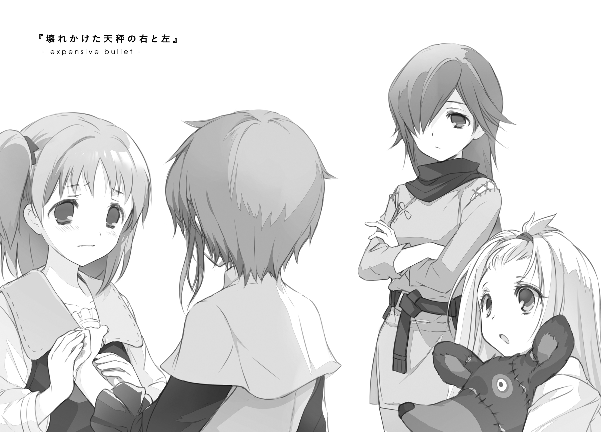
１．使い捨ての兵器
一隻の飛空艇が、港湾区画へと入ってきた。
戦略艇『ウルティーカ』。護翼軍が保有する全飛空艇の中でも、最大級の出力と積載量を誇る一隻だ。
そもそも実戦投入されることをまともに想定されていなかった、言ってみればスペックのお化けである。燃費が悪くてとても実用に堪えないと評判の重環式の大型呪燃炉を、よりにもよって基部底部に左右補助翼部の四基搭載。べらぼうな出力を扱いきれるようにと駆動部分の部品はほぼ緋重鋼製、となればめちゃくちゃ重くなる機体をどうにか支えねばなるまいと、姿勢制御用のものも含めた回転翼は脅威の十六対、通常の大型飛空艇の四倍近い。およそ望みうる最高の馬鹿力には、やはり最高の主砲がよく似合う。というわけで、そもそも都市防衛用の据え付け兵器だった『山投げ機』をまるごと載せてみたりもした。
ひとことで言えば、アレだ。「さいきょうのひくうてい」だ。
ただただ最強と最強と最強を組み合わせ、燃費も維持費も呪燃被害もそのほか諸々もすべて無視して造り上げられた、自己満足の結晶にして最高の芸術品。
「お前さん、あの艇についてどう思う」
一位武官に聞かれ、フェオドールは少し考えて、
「設計した人は楽しかっただろうなあ、と」
思っていたことを正直に答えた。
関係者全員、どれだけ悪い酒に酔っていたというのだろう。あんな悪ふざけみたいなオモチャが設計され、製造され、さらには運用されるとは。
「あれを、今回の攻撃作戦の切り札にせよという、将官からのお達しだ」
「でしょうね」
あの艇は、誰にとっても等しく破壊者だ。
ひとたびその主砲が火を噴けば、小さめの都市がまるまるひとつ吹き飛ぶ。ついでにその一撃のための費用だけで、やはり小さ目の都市がまるまるひとつ干上がる。
そんな馬鹿げた兵器ではあるが、こうして実際に戦場まで運ばれてきた以上、望まれていることはひとつだけだろう。
「面倒だな」
「面倒ですね」
そもそも〈獣〉に対して、魔力を伴わない通常の兵器の効果は薄いと言われている。まったく効かないというわけではないのだが、とどめを刺せるほどの決定力を持たない。護翼軍に充分な交戦記録の残っている〈二番目〉や〈六番目〉との戦いでは、通常火砲の類は基本的に牽制や時間稼ぎとして使われたとされている。
普通の人ならば、他の手段を探そうと考える。
そしてたぶん、普通じゃない誰かが、考えたのだ。まったく効かないわけではないのだから、あとは単純な火力の問題ではなかろうか──と。火砲が十分の一しか成果を挙げないのならば、百倍の威力のものを叩きこめばいいじゃないかと。
言うまでもなく。そんなことを言われた現場は、百倍苦労する。
魔力とは、炎のようなものだと言われている。
その根拠のひとつが、それそのものを保存することができないということだ。その力を扱おうと望むなら、その場その時で魔力を熾さなければならない。そして、体の中で熾した魔力は、その体に接する形でしか外に影響を及ぼすことができない。
つまり、矢だの砲弾だのに込めて放つというような芸当はできないのだ。
魔力を伴う攻撃を〈獣〉に放ちたいのならば、どうしたところで、魔力使いが直接接近戦をするしかない。
──ああ、いや。そうか。ひとつだけ、手段はあるのだ。
そして今のフェオドールは、その手段の存在を知っている。
魔力を熾す性能をもった精霊を、砲弾代わりにぶつける。この方法であれば、〈獣〉に近づくことなく、有効な攻撃が可能だ。
なるほど、誰が考えたものかは知らないが、これは合理的な手だ。無理難題でしかなかった対〈獣〉戦闘に、光明が差してきている。
「一位武官。つかぬことをお聞きしますが」
「うん？」
「あの上等相当兵たちですが、当然、一位以上の位官三名の署名を得ているはずですよね？ その三名がどなたなのか、お聞きしてもよろしいですか？」
「......第二師団のライムスキン一位武官。憲兵科のバロニ＝マキシ一位武官。そして第五師団のおれだな。それがどうかしたか？」
少なくともその三人は、知っているはずだ。
いま兵士相当の扱いをされながらこの基地にいて、しかし兵士になれないモノのことを。その理由と、彼女たちの正体を。
「それでは一位武官、もし──」
口をつぐんだ。
これは、尋ねてはいけないことだ。なぜなら自分は、あの少女たちの正体を、まだ知らされていないのだから。知らないはずの知識をもとにした質問など、してはいけない。
「いえ、何でもありません。ありがとうございます」
「そうか？ ......そうか」
一位武官は小さく訝しげに首を傾げたが、それ以上は追及してこなかった。
ティアットは、またあの廃劇場の上で、膝を抱えていた。
二度の転落で、学んだということだろう。蒸気の噴出口からは少し距離をとっていた。
扉の開く音でこちらに気づいたか、ティアットはちらりと横目でフェオドールの接近を確認して、
「ドーナツ」
へいへい、と手招き。
「君は僕を何だと思ってるんだ」
「なんかいつも美味しいもの食べてる人」
ぐ。痛いところを突かれた。うまく否定できない。
「あ、そうだ。そういうのどこで売ってるのか教えてよ」
「それ聞いてどうするのさ」
「こっちの浮遊島、あんま味がないものばっかなんだもの。コロンたちにおみやげ買って帰らないと。わたしばっかり美味しい思いしてるのも悪いじゃない？」
「許可をとらずに敷地の外に出るのは、認められてないんだけどね？」
「えー。頭の固い上官みたいなこと言わないでよ」
「君は僕を何だと思ってるんだ」
「頭の固くない上官」
ああもう。認めたくないけれど、口先では敵わない。
「これだけ出歩いてれば、自分の足でも見つけられるんじゃないの？」
「んー、手当たり次第で食べ比べするには、手持ちのおこづかいがちょっとね」
護翼軍の兵士の給与は、決して安くなどない。上等兵ともなれば、大きな家庭をちょっと贅沢させながら養うくらいのことは簡単に出来る。少なくとも、学生レベルの食べ歩きに躊躇しなければならないような額ではありえない。
少なくとも、兵士でさえあれば、そのはずなのだ。
「......いつもここにいるけど、そんなに気に入った？」
「んー、そういうわけでもないんだけど......いや、そういうことなのかな」
首をかしげる。
「いちおうこの街、あちこち見て回ったんだけどね、ここが一番、さびしい感じがするんだ。風がちょっと強いけど、静かだし、誰かさんが来てる時以外は誰もいないし。考え事するには最高じゃない？」
「そうだね。考え事には最高だ」
言って、ティアットからは少し離れた場所に腰を下ろす。
目線は空よりも少しだけ低く、ライエル市を広く見渡せる角度へ。
「この世界に、守る意味なんて、あると思う？」
「ほへ？」
ティアットがほんの少しだけ距離を詰めてきて、手を差し出してくる。
「どういう質問？ きみって護翼軍の武官でしょ？ そういうのの結論を先に見つけてからなるものじゃないの？」
「僕の話じゃない。君の話だ」
伸ばされた手に、おかわりのドーナツを載せてやる。
「上級相当兵としてのでもなく、遺跡兵装だったかに適合したっていう、精霊としての君に聞いてるんだ」
ドーナツを口にくわえて、二、三回もごもごやった後で、
「──なんで知ってるの？ けっこう上位の機密のはずだけど」
「そりゃあ」
情報屋を使って調べたからだ。......などと、話すわけにはいかない。
というか、自分がそんなことを知ってしまったと当人にバラすのも、本来ならば非常にまずい行動だ。どうしてこんなことをしているのか、自分でもよくわからない。
「僕は君たちの監視役で、一時的でもなんでも、上官なんだ」
とってつけたような理由を返す。
「監視役として知るべきことは、何をしてでも知る。それだけだよ」
ぷっ、と、少女が噴き出した。
「何で笑うのさ？」
「ごめん、ちょっと懐かしくて」
今のでドーナツのかけらが喉にひっかかりでもしたのか、胸のあたりをとんとんと叩きながら、軽く涙なんぞを目もとににじませて、
「前にも、わたしたちに向かって、そんな感じのこと言ったやつがいたんだ。すっごくかっこつけてたけど、根っこがドジで、あんまり似合ってないの」
ひとつの名前を思い出す。ティアットがこういう顔をしながら、以前に挙げていた名前。そして、ラキシュとコロンが語っていた、以前彼女たちの管理者となっていた人物の名前。
「例の、ヴィレムって人のこと？」
「そうそう。わたしたちの、駄目なおとーさん」
けらけらと、楽しそうに笑う。
この反応からして、尊敬......はわからないけれど、少なくとも親しまれ愛された人物ではあったらしい。
立場のせいなのか、年が近いらしいせいなのか、自分の知らない誰かと何かにつけて比較されるということは、正直、あまり面白くない。
「守るよ」
唐突に、ティアットがそんなことを言い出した。
「さっきの話。世界に価値があるかとか、そういうのはよくわかんない。そういうのを自分で考えられるほど、世界を広く見てきたわけでもないし。知り合いも少ないし。
だから、難しいことは考えない。世界とか仲間とかを守るって自分で決めたから、そうする。意味とか価値とか考えない。
決まってることなんだから、迷うこともない。それだけ」
「それは......」言葉を探す「英雄願望、みたいなもの？」
「んー、ちょっと違うとは思うけど、似てるかも。命を捨てて戦うのって、とりあえずかっこいいよね。年頃の少年少女だったら誰だって憧れちゃうやつだし」
「僕は......」
──自分の命より大切なものなんて、そうそうあるはずがないんだ。
──だからこそ、そいつを見つけたやつは幸運だし、幸せなんだよ。
「......僕は、そうは思わないけど。見ず知らずの誰かより、自分の命のほうが大事だよ」
「なんだ、ロマンないなぁ、男の子」
「そういう美学も自己満足も、生きていてこそだからね」
ドーナツの紙袋を傍らに置き、改めて街を眺める。
角度のせいか、地区の偏りのせいか。ここから見える街には、そこに生きて動いている者の姿はほとんど見えない。人の数が少なくなっているのか、それともまったくいなくなってしまっているのか、ほとんど区別がつけられない。
終わりつつある世界と、終わってしまった世界との境界が、ここでは曖昧になる。
「それはそうかもだけど。でも、わたしたちは、生きてないのよね」
ドーナツの最後のひとかけを口の中に放り込み、ティアットは静かな声で言う。
「どういう意味？」
「文字通りの意味。えーと、どこまで知ったの、わたしたちのこと」
「そう多くはないよ。自然発生した精霊だということ、別の兵器と適合することによって戦力になること、『開門』ってのをやって廃棄されること」
ティアットは頭をぽりぽりと搔いて、
「あー、そんだけか。じゃあ、けっこう頭から説明しないといけないかなぁ」
指折り数えながら、解説を始める。
「すっごくざっくりした話をするよ？
まずわたしたちは、黄金妖精って呼ばれてる自然現象。動いて喋って考えてるけど、厳密には生き物じゃない──」
ティアットは語る。
いわく、それは死霊の一種だ。厳密な意味での生命には数えられない。
妖精というのは本来、自己主張がささやかすぎて、実在も怪しまれるようなレベルの心霊現象だ。森の奥から聞こえてくるくすくす笑い。夜中にちょっとだけ減っているミルク。家畜たちの周りを飛び回ってからかう、目に見えない何か。
そして黄金妖精も、本質はそれらと変わらない。人里近くに〝発生〟し、そして誰にも知られずに消えていく。
ただし消滅の前に誰かに拾い上げられれば、それは一人の徴無しの子供としての存在を確定する。そして、生き物の真似事を始める。
喜び、笑い、苦しみ、憂い、憧れ、嘆き......
そして死を迎えるところまで、まるで本物の生物であるかのように、なぞるのだ。
「──とまぁ、どっちかというと、怪談話の主役なわけね。死んでるのに気づいてなかった幽霊とか、そういう類のモノなわけ。肉体も普通の意味では持ってなくて、密度の高い魂魄が自らを象らせるかたちで擬似物質を構成しているとかナントカ」
「肉体が......ない？」
にらみつけるような強さの視線で、隣の少女の姿を、見る。
短い若草色の髪が揺れている。スカートの裾が、街のほうから吹く風を孕んで、大きくはためいている。口元にドーナツのかけらが張り付いている。どこからどう見ても、ちょっとだけ発育不良なだけの、元気な十代の少女の姿。
「じろじろ見ないでよ、えっち」
「徴無しの子供を相手にそんな気にはならないよ。それより」
「子供って言うな、これでも最近ちょっと大きくなったんだから！」
「そんな話はどうでもいいんだ」
「よくない」
「どうでもいいってことにしてくれ」懇願する「それより、体がないっていう風にはとても見えないんだけど」
「黄金妖精の中には、それだけ桁違いのエネルギーが詰まってるってこと。
これが、わたしたちのことが機密扱いになってる理由のひとつ。この体とかを作ってる魂のエネルギーを解放したら、大爆発が起こせるわけ。実際にはそんなに簡単に解放なんてできないんだけど、それでもやっぱり、そばにいると気分はよくないでしょ？」
どかーん、と握り拳を開いて大爆発を表現。
「そして、その大爆発を活用した最新秘密兵器こそが、護翼軍が誇る最終秘密兵器だったのでした。もちろん魔力も乗っかりまくってるから、〈獣〉相手でも効果は抜群。ずっと〈六番目の獣〉との戦いで使われ続けてきてたものだから、実用性はもうカンペキに立証済み。偉大なり、わたしの先輩たち」
拳を握り直して、ぐっと親指を立てる。ついでに、にこやかな笑顔。
「まぁ、〈十一番目の獣〉にもおんなじように通用するかは、まだわかんないけどね」
「三か月後に予定されてる攻撃作戦は──」
フェオドールは、平坦な声で返す。
「その〈十一番目の獣〉がどれだけヤバい脅威なのかを測る、情報収集の側面を持ってる。ある程度ぶつかったら退却して、得られた情報をもとに作戦を練り直す。だから、君が言うとおりの超兵器だったとしても、急いで使う必要はない」
「そんなことないでしょ？ わたしたち爆弾が〈十一番目〉にどのくらい通用するのか、ひと当てすれば、はっきりわかるよ。有益有益」
「これまで君たちが〈六番目の獣〉の襲撃から世界を守ってきたんだろう？ 本来なら、讃えられるべき立場だよ。こんな扱いを受けて、納得できてるのか？」
「んー、しょうがないんじゃないかな」
「まだ死にたくないとは、思わないのか？」
ティアットは笑った。
ぞっとするほど素直で、裏表の感じられない、明るい笑顔だった。
「思うわけ、ないじゃない。だってわたしたち、最初から生きてないんだよ？」
「──それを信じにくいって言ってるんだ」
「疑われてもなぁ。事実は変わらないんだけど」
うーん、と少し考えるような顔をして。
ああそうだ、と何かを思いついたような表情になって。
ティアットは、拳を、近くの金属壁に叩きつけた。
都市を構成する大がかりな機械の一部であるその金属壁は、単なる平面ではない。排熱通風用に細いスリットが刻まれ、その上部には庇がかけられている。それは、触れ方次第では鈍いナイフのようにもなる。
肌が裂けた。
赤い血が、勢いよく辺りに飛び散った。
「え......」
目前の光景の意味を理解できず、フェオドールは硬直する。
「なに......してるのさ......？」
「さっきの話の証明。この通り、わたしは傷つくことも死ぬことも、恐れてない」
「痛く、ないのか？」
「痛いよ。感覚はちゃんとあるから。でも、それだけ」
生き物が傷つくのを恐れるのは、それが死に近づくことだからだ。
言い換えれば、死を恐れない存在であれば、自分の体が傷つくことをことさらに避けることはない......そういう理屈。
「砲弾は怯えない。決死の戦いで使う兵器としては、そっちのが便利でしょ？」
言う通り、痛みはあるのだろう。その額に、かすかに、汗がにじんでいる。
それでもティアットは、にこやかに笑って、そんなことを言ってみせる。
「──わかった」
これ以上、見ていられない。
フェオドールは視線を切る。
「僕は、何も知らなかったことにする。だから、君たちは君たちの役割を果たせばいい。
命を捨てて浮遊大陸群を救いたいっていうなら、そうすればいい。僕はもう、止めたりなんてしない」
立ち上がる。
自分の軍服の襟元を裂くようにして開き、内側に縫い付けてある簡易救急パッケージを引きはがすと、ティアットに向けて投げつけた。
「兵器を自称するなら、戦場に立つまで自分のパフォーマンスを維持しなきゃ駄目だ。一応上司の立場だから言うけど、無意味な自傷行為は今後禁止だ。いいね？」
「はぁい」
パッケージの中から薬液を染みこませたガーゼを引っ張り出しつつ、ティアットはぞんざいに答えた。
２．遺跡兵装適合精霊
第五師団基地、女性用兵舎。その隅のほうに、四人用の予備宿泊室がある。
つい先日までは、物置だった。
落書きだらけの机やら絵図鑑やら火砲手入れ用の工具セットやらボロボロのぬいぐるみやら関節の歪んだ木組み人形やら、といった先客にはひとまずよそに移動してもらって、簡単な掃除の後に四つのベッドが運び込まれた。その部屋の真ん中で、
「痛いぃぃぃ」
いまティアットが、涙目になってのたうちまわっている。
「何だあれは」
部屋に入ってきたばかりのパニバルが、荷物をベッドの横に下ろしながら尋ねる。
「怪我したのか？ 手を？」
「フェオドールさんに、わたしたちのこと、バレたんだって」
救急箱のふたを閉めながら、ラキシュが説明する。
「......それで、どうして怪我して帰ってくる？」
「死ぬのは怖くないって、証拠を見せようとしたんだって」
「ほう。それはまた随分な馬鹿だな」
「ばかだよね」
ラキシュにしては辛辣な言葉遣い。二人の呆れた視線がティアットに注がれる。
「どうして、こんなことしたの」
咎めるような、ラキシュの声。ティアットは赤い顔でそっぽを向いて、
「死にたくないとは思わないのか、とか言われたから」
「え？」
「あいつ、わたしたちが死ぬってこと、納得してなさそうだった。ナイグラートみたいに、そんなの許せないって感じで、怒ってくれてたの」
あいたたた。薬、しみるしみるしみる。
「......それで、なんで、ケガして帰ってくるってことになるの」
「わけわかんないことするやつのほうが、怖いじゃない？」
「意味わかんないよ」
「だから。わたしがこういう、わけわかんないことしたら、あいつだってもうこれ以上関わりたいとか思わないでしょ？ 距離おけるでしょ？」
「......なんで」
ラキシュは悲し気に目を伏せて、
「なんで、わざわざ突き放そうとするの？ 妖精倉庫の外のひとだからって、敵とかじゃないんだよ？ もしかしたら、ヴィレムさんみたいに......」
「その名前を出すなら、わたしの答えもわかるでしょ？」
赤い顔のまま。唇を尖らせたまま。ティアットは横顔で答える。
「ヴィレムみたいなやつは、ヴィレムだけでいい。わたしたちはもう、〝門〟を開く覚悟を決めた。まだ生きていたくなるような理由は、もういらない」
「だから......なんで、そんな、悲しいこと言うの......」
「忘れちゃったの？ もともと妖精兵って、そういうものでしょ」
にへ、と。力なく笑う。
ティアットら黄金妖精たちは、浮遊大陸群の各地で発生し捕獲されたあと、妖精倉庫と呼ばれる場所に集めて、育てられる。
妖精の擬似肉体は、かつて滅んだ人間種を模して作られているらしい。だから空腹になればものを食べるし、眠くなればぐーすか眠るし、怪我をすれば血を流すし、時間が経てば成長もする。
妖精倉庫には、同じ境遇の妖精が常に三十前後集められていた。
その中には、ティアットから見て年上の者もいれば、年下の者もいた。
かつてそこには、クトリ・ノタ・セニオリスという少女がいた。
ティアットは彼女のことを、とてもよく知っていた。
青く長いさらさらした髪に、蒼く澄んだ瞳。
好きな食べものは、茸たっぷりのミルクシチュー。甘いものはあまり食べず、コーヒーにも砂糖を入れない派。読む本の傾向は恋愛もの多め。お風呂に入るときはまず右足から洗うクセがある。
護翼軍が地上から発掘してきた中で最強の遺跡兵装である「セニオリス」に適合していた、最強の妖精。
門を開かず......魔力の暴走による大爆発を起こさずとも、数々の〈六番目の獣〉を打ち破ってきた。妖精は使い捨てを前提とした兵器だが、再利用が可能ならばもちろんそれに越したことはない。単一の妖精が出撃した戦闘回数において、護翼軍の記録に残っている限りでは、彼女の名前は不動の一位の座を獲得している。
最初はただ、すごいなぁ、と思っていた。
かっこいいなぁと、その背中を、眩しげに見上げていた。憧れていた。
そのうち、ティアット自身の手足が伸び始めたころには、その憧れは希望に変わった。自分もいつか、戦場に向かうことになる。その時にはきっと、あのクトリ先輩みたいな、立派でかっこいい、最高で最強の妖精になるのだと。
ずいぶんと昔、最大級の〈六番目の獣〉の襲撃が予見された時のことだ。
クトリ・ノタ・セニオリスが門を開かなければ勝てない、というのがその予見の内容だった。世界のために死んでこいと言われた時、彼女は怯えも惑いもせずに、静かにその運命を受け入れた。
少なくとも、彼女の背中が、ティアットにはそう見えていた。
そこに現れたのが、あの男だった。ヴィレム・クメシュ二位呪器技官。滅んだはずだった人間種の生き残りで、壊れかけた遺跡兵装を絶好調状態にまで修復できる驚きの技術者だった。ちょくちょく陰を背負ったような表情をしていたが、基本的には間が抜けていて隙だらけの、頼りないお兄さんだった。
ティアットが気がついた時には、二人は恋仲になっていた（ように見えた）。
死にゆく乙女と、死んでいるはずだった男の出会い。すれ違い、触れあい、そして重なり合う思い。芽生える愛。なんというかもう、恋愛ものの創作物語の筋書きをそのまま読み上げたような光景が、ティアットの目の前で繰り広げられていた（ように見えていた）。
しかしその逢瀬の時も、それほど長くは続かなかった。
妖精はどうしようもなく短命だ。
クトリ・ノタ・セニオリスは、当初の予定よりもほんの少しだけ長生きした。けれど結局、ティアットの知らない場所で、戦いながら死んだ。大切な仲間たちを守るために、自分が自分として生きていられる時間を自ら使い切って、遺跡兵装を振るった......そう聞いている。
その話を聞いたとき、ティアットは泣いた。尊敬する先輩がいなくなって、大好きだったお姉ちゃんに二度と会えなくなって、悲しくて寂しくて、やりきれなかった。
そして、涙が涸れると同時に、決意を固めた。
あの人は、クトリ・ノタ・セニオリスという妖精の物語を走り切った。だからここからは、自分が走る番なのだ。
ずっと憧れてきたあの背中を、一生懸命に追いかけよう。少しでも距離を縮めよう。
いつか、きっと、今より少しだけ先の未来には、自分もあんな風になれるのだ......そう信じよう。
あの時には、本気で、そんなことを考えていたのだ。
「だからー、そんなしんみりすることないじゃない」
泣き崩れるラキシュの髪を、傷ついていないほうの手で、そっと撫でる。
「別に、無駄死にしに行くわけじゃないのよ？ わたしたちがドカーンといけば、そのぶんきみとちびっこたちが危険な目に遭わなくて済む。お得な取引だと思わない？」
「思わないよぅ！」
少し舌足らずになりながら、ラキシュは叫ぶ。
「ライムスキンさんだって言ってたじゃない、ぎりぎりまで頑張って、上の決定をひっくり返してみるって！」
確かに言っていた。
けれどあんなもの、気休めでしかない。
〈十一番目の獣〉相手に妖精を試してみようという作戦は、そもそも護翼軍の上のほうから降りてきたものだった。兵器としての妖精の実用性を再確認し、同時に、今後の戦略のためのデータをとる。実に合理的で、無駄のない作戦だった。そんなものを、代案もなしに撤回など、させられるはずがない。
「だめだよ。誰かがいつかは行かないといけないことなんだからさ」
「そうかもしれないけど......その誰かがティアットなのは、嫌だよぅ......」
「んもー、やっさしぃんだから、ラキシュは」
「そういうのじゃなくてぇ！」
「でもさ、わたしたちの命の価値は、一緒じゃないんだ」
ラキシュの頭を、胸元に抱き寄せる。
「少なくともわたしの命は、安物なの。クトリ先輩みたいにはできないし、なれなかった。だから、その夢はきみに任せるよ......ラキシュ・ニクス・セニオリス」
「いらない......」ラキシュはぶるぶると首を振る「そんな夢、任せられたくない......」
「あ、そーだ」
拒絶されているのにまったく構わず、ティアットは軽く手を打つ。
「なんだったら、きみがフェオドールのやつ、狙ってみたら？」
「ふぇ？」
ラキシュの肩が小さく跳ねる。
「徴無し嫌いだって話だけど、ラキシュだったら大丈夫でしょたぶん。ヴィレムとはちょっとタイプ違うけど、いいやつなのは保証するからさ」
「なな、なんでそんな話になるのぅ!?」
「ラキシュには長生きして、ついでに幸せになってほしいなーっていう姉心」
「お姉ちゃんってほど、年、離れてないよぅ!?」
「ふふふ。半年の差は小さいけれど、永遠に縮まることはないのだぁー」
「うう......」
ラキシュが言葉を失う。
ぐずぐずと、ティアットの胸に顔をうずめる。
「お姉ちゃんのばかぁ......」
「......そだね。自分でも、そう思う」
ぎゅっとその頭を抱きしめて、ティアットは小さくつぶやく。
その二人の様子を、パニバルは静かに、少しだけ離れたところから眺めていた。
「ふぅむ」
鼻を鳴らすようにして、何かを考える。
３．仲の悪い二人
ランチのトレイを手に、空いていた席に座った。
隣に座る先客の少女が、少しだけ顔を上げて、こっちを見た。
「何で隣に来るの」
ティアットは、不機嫌そうに言う。
「空いてる席が他にないんだ」
フェオドールは、やはり不機嫌を込めて返す。
「位官専用のテーブルがあるでしょ。そっち行きなさいよ」
「今日は珍しく、二位武官たちが食堂で食べてる。もともと大きなテーブルじゃないんだ、四位程度の下っ端位官が座れる椅子はないよ」
「む」
顔を上げ、ティアットの目が食堂の隅の方を見る。
「確かに」
「というわけで、今日の僕はこっちで食べる。それ取って」
「仕方ない」
ここの食堂では、少しでも多くの種族の舌に対応させるため、テーブルごとに多彩な調味料を常備させている。ベースとなる食事はほとんど味つけをされておらず、個人がそれぞれの好みに合わせて味をつけなければいけないスタイルだ。
「ん」
かちゃかちゃと、ティアットの指が幾つかの瓶をピックアップ。粉末辛子、コショウ、ニンニク、ソルトハーブ、練った豚脂なんてものまで。
「量は左から、三、二、四、三、一、二。右端のやつは、混ぜずに最後にひとつまみだけかけて味にアクセント追加」
「へえ」
そっけないやりとり。匙がかちゃかちゃと味を運ぶ。
味つけ終了。食べ始める。
「なるほど。強めの辛さで舌先を誤魔化しつつ、ハーブの風味を重ねて素材の臭みを覆い隠す味つけか。ここの食堂に来てまだ日が浅いにしては、悪くないね」
淡々とした声で評価する。
「でしょ」
ふふん、とティアットが胸を張る。
「けど、素直すぎる。ふだん自分と同種族ばかりに囲まれていたせいで、発想が狭くなっているんじゃないか」
「む」
かちん、ときた顔。
「......ふうん？ そこまで言うなら、もっと上のレシピ、用意できるんでしょうね？」
「さっきのレシピに、そこの黒い瓶の中身をスプーン半分だけ追加して」
示された瓶をティアットが摑み、ラベルを見て首をかしげ、ふたを開けて「んげ」と小さな悲鳴を漏らす。
「な、なにこれ、すごく臭いんだけど!? もしかして、獣人用じゃないの!?」
刺激にやられたか、ティアットの目尻に小さく、涙が光っているのが見える。
「ご明察。動物の内臓を発酵させたものらしいよ。服とかについたらしばらく臭いが落ちないから、よく気をつけて」
「これ食べろって言うの？ 本気？ 正気？ これ絶対、わたしたちの胃袋に入れていいタイプの食べものじゃないって！」
「別に、逃げるなら逃げるで僕は構わないけど」
短い沈黙の時間。
「ふんがーっ！」
少女は雄々しく咆哮し、瓶の中へと匙をつっこんだ。
「......奇妙なやりとりだな」
少し離れたところで、ポートリック上等兵が、軽く炙っただけの肉にかじりつきながら小さく呟く。
「諍っているようでもあり、睦み合っているようでもあり。仲が良いのか悪いのか、傍から見ていてもまったくわからん」
「うちのティアットは、正直だけど、素直じゃないからね」
そのすぐ隣、同じように肉にかぶりつきながら、パニバルが会話を繫いだ。
ポートリックは一瞬ぎょっとした顔になって──そこにパニバルがいることに気づいていなかったのだ──、すぐに「なるほど」と頷いた。
「ジェスマン四位武官は、感心するほどまっすぐな人物である。素直になれぬ女子との組み合わせともなれば、あのようなやりとりになるのも無理はないか」
「......あれが、まっすぐな人物、ねぇ？」
頰に小さな肉のかけらを張りつけて、パニバルは、くすくすと小さく笑う。
「ふむ。異論でもあるのか、紫色の少女よ」
「いいや？ 少なくとも、好ましい人物らしいということには、同意するよ」
もしゃり、大きな一口を肉の塊からむしり取る。
「遠ざけたいなどと言っていたはずのティアットが、一晩もしないうちにあの有り様だ。少なくとも凡庸な少年ではないということは、認めないといけなそうだからね」
そう言って、ちょちょいとフォークで指し示した先には......
「まずい！ まずいのに、何これクセになる！」
「毒と薬の差は投与量の違いだけ、って言うだろ。量さえ気をつければ、意外とどんなものでも、刺激的なアクセントとして活かせたりするんだよ」
「うぐぐぐぐ、おかわり！」
「量には気を付けろって、たったいま僕言ったよな!? いやだから気をつけて扱えよ服についたら大変だってこれも言ったよな！」
当のティアットが、まさに「あの有り様」という言葉がふさわしい姿をさらしていた。
いきなり雨が降ってきた。
それも、すこぶるつきの大雨だ。
その時のフェオドールには、幸運と不運がひとつずつついていた。不運はちょうどそのタイミングに外を出歩いていたこと。幸運は、ちょっとだけ走った場所に、屋根つきの小さな休憩所があったこと。
ひいひいと息を切らしながら、屋根の下へと駆け込んだ。
その休憩所には、一人、同じように息を切らした先客がいた。
「......あの」
位官用の上着を肩からはおったラキシュが、おずおずと声をかけてくる。
「何？」
「上着、すみません。それと、ありがとうございます」
「気にしないで。君たちの体調の管理も、僕の任務のうちだ」
言って、フェオドールは小さく体を震わせた。
眼鏡の水滴を服の袖でぬぐって、またかけ直す。
空は灰色で太陽は見えず、雨は絶えず降り注いでいる。こうしている分には耐えていられるレベルの寒さだが、さすがに濡れて走る覚悟は出来ない。
「う、うう......ティアットのばかぁ......あんなこと言うから、意識しちゃうじゃないのぅ......」
何やらこちらをちらちら見ながら、一人でぶつぶつつぶやいている。
「顔、少し赤いね」
「ひゃいっ!?」
跳ねる。
「風邪の引きはじめかもしれない。後で医務室に行ったほうがいい」
「あ......はい。わかりました、ソウシマス」
肩を落とす。
落ち着きがなくて、身を縮めて小さく震えていて、どうにもこちらのほうを意識しているけれど距離を詰めてこない。ウサギの子か何かを見ている気分だ。
可愛らしいとは思う。
フェオドールだって、若く健全な少年である。可愛らしい女の子という者に対して思うことは色々とある。そういう子と二人きりというシチュエーションに、心が動かないわけでもない。
けれど、相手は徴無しなのだ。その事実ひとつがあるだけで、何というか、どうしても心が距離を開く。熱が逃げていく。
「あの」
「ん？」
「突然ですけど、フェオドールさんって、徴無しのこと、お嫌いなんですよね？」
まさか、心を読んだのか。
一瞬だけ、本気でそんなことに身構えてしまった。過剰反応だったとは思わない。世の中にはそういったことを実際にやってくる、ふざけた種族の連中だっているのだ。
「ご自身も徴無しなのに、珍しいなって。それでその......何か理由とか、あるんですか？」
「別に。普通だよ。生まれた時から、周りの徴無しに、ろくなやつがいなかった。どこへ行っても、壊れたやつにしか会えなかった」
血の繫がった家族たちが、そもそもおかしな連中ばかりだった。その後、近い種族の縁で仲良くなった友人や知人も、それとは違う方向に異常だった。
出会いと破綻を何度か繰り返して、フェオドールは学んだ。これはつまり、徴無しという連中自体が、呪われるかどうかしているのだ。
「それだけ続けば、嫌でも苦手になるって」
もちろん、そう結論を得たフェオドール自身についても、例外ではない。
自分がまともではないという程度のこと、当然、自覚している。
「それじゃ、もしかして、わたしが話しかけるのも、ご迷惑だったりしますか？」
「いや」
答えてから、少しそっけなかったかと思った。
「あまり気にしないでくれないかな。徴無しが嫌いだっていうのとは別に、君たちが良い子だってのはちゃんと理解してるからさ。君たち個人に対してまでそんなに悪く思ってるわけじゃない」
「そ、そうですか」
ラキシュの様子を横目で確認。どこかほっとしているような横顔が見えた。
あからさまなフォローでしかなかった今の言葉を、そのまま受け取ったらしい。ここまで素直だと、詐欺とか悪い男とかにすぐひっかかりそうだ。見ていて不安になる。
「......あの、それと」
「ん？ 次は何？」
「その......すみません。ティアットが、ヘンなことを言ったみたいで」
「ヘン？」
どれのことだろう、と思う。
一生懸命空回りしながら生きているせいだろう。まだそんなに長い付き合いでもないというのに、彼女の奇妙な言動には覚えがいろいろあった。
「わたしたちは生きてないから、死ぬことなんて怖くないんだって」
「ああ......」
その話か、と思う。
確かに間違いなく、あれは、ティアットと交わした言葉の中でも屈指の、ヘンなやりとりではあった。けれど、
「ヘンってことはないさ。さすがに荒唐無稽に聞こえはしたけど、事実なんだろ？」
「は......い」
辛そうに頷く。
「だったら、何もおかしくない。正直に教えてくれたことを感謝するくらいさ」
「......はい」
ラキシュは頷く。
「とはいえ、ちょっと信じにくい話だってのも確かなんだよな。君たちが幽霊だってこと、目に見える証拠とか、出せる？」
「えと、そういうのは、特に......あ、そういえば。前にコロンが、甕いっぱいの魔除けの聖水を飲んで、おなかを壊していました」
いやいや。
そんなことすりゃ、誰だって腹壊すからね？
「あの、やっぱり、幽霊のこともお嫌いだったりします？」
いやいやいや。
その質問の仕方で「いいえ」って答えるやつも少ないと思うぞ？
「どっちかと聞かれれば、はっきり苦手なほうだな」
「そう、ですよね......」
「伯父さんが、怖い話とかが好きでさ。嫌がる僕に、無理やりその手の話を聞かせるわけだ。そしたら案の定、夜中にトイレに行けなくなったりして」
「え」
「そのたびに、義兄さんを叩き起こしてついてきてもらって。義兄さんの機嫌が悪い時なんて、そのまま間に合わなくなったりしてさ。そのせいか、幽霊とかそういう話は、今もあんまり好きじゃない」
「あの」
「あ、いまの話はティアットたちには内緒でよろしくな。たぶん、めちゃくちゃからかわれると思うから」
ぷっ、と小さく吹き出された。
「フェオドールさん、ひどいです。いま、今度こそ本当に嫌われたのかもしれないって、すごく怖かったんですよ？」
「君の反応がいちいち素直すぎるのがいけないんだ。からかいたくなる」
「もう！」
少女の小さな拳が、ぐい、とフェオドールの肘のあたりを軽く押す。
空を見上げる。雨は止む気配がない。地に視線を下ろせば、風と雨とに身を打たれて木々が細かく震えている。
「先輩が、いたんです」
フェオドールの隣、同じ世界を眺めながら、ラキシュがまた語り出す。
「もちろん、同じ黄金妖精です。すごく強くて、優しくて、素敵なひとでした。わたしたちはみんな、あのひとのことが大好きだった。
ティアットはずっと、あのひとみたいになりたいって、口ぐせみたいに言ってた」
過去形だ、と気づいた。
「その先輩も、やっぱり？」
「はい。〈獣〉と戦って、死にました」
ラキシュが言葉を切った。
「みんなのために死ぬことを一度は受け入れて。
戦場に向かおうとして。
でもその前に、素敵な男のひとを好きになって。
死にたくないって、もっと生きていたいって思って。
使い捨ての体なのに、一生懸命、戦場を生き延びて。
いっしょに過ごしたい相手の隣に、なんとかして帰ってきて。
それでも......最後は、大切なひとたちを守るために、自分から戦場に向かいました。二度と戻って来られないことをわかっていたのに、笑いながら」
「......ふぅん」
それはまたずいぶんとドラマチックなお話だ、と思った。
そのことに、軽い嫌悪感をすら、覚えた。
「あ、でも、恋人同士だったかっていうと、ちょっと違うかもしれないんです。
なんていいますか、あの頃のわたしたちは小さかったし、大人同士の恋模様に見えてたんですけど、今にしてみれば、ちょっと違ったのかもって」
「何それ。その、クトリ先輩の片想いだったってこと？」
「いえ、両想いというか、愛情の矢印はぜっっったいに双方向だったんですが」
赤い顔、妙に迫力のある声で言われる。
「当時の先輩は、今のわたしたちと同じくらいの年頃だったんです。好きって気持ちを全然隠さなくて、許される限りの時間をヴィレムさんの隣で過ごしてました。
ヴィレムさんのほうは......そういう先輩を受け入れてはいたんですけど、あくまでも娘として扱うためか、ちょっと距離を空けてるように見えました」
あ、でも、わたしにそう見えてたってだけで本当のところは誰にもわかりません──などと慌ててラキシュが付け加える。フェオドールは少し考える。
「そんなに凄い人だったの？ その、ヴィレムって軍人は」
「あ、はい。すごくすごいひとだったんです。えと、どんな人かって、ひとことで言うと......」少し思案し、「子煩悩の父親、でしょうか」
......意味がわからない。
「わたしたち妖精は、けっこう数が多いんです。当時も三十人くらいいました。それでヴィレムさんですけど、その全員それぞれに対して『お前は世界一可愛いぞ』と真顔の本気で言えちゃうひとだったんです」
なんだ、そりゃ。
「その人、実際に血はつながってないよね？」
「はい。わたしたち、本来の意味の親っていませんから」
「......それ、変人なんじゃあ」
「あ、あはは」
苦笑でごまかされた。まったく否定されてない。
「でも、本当の本気で愛情を注いでもらったのは本当です。少なくともわたしにとっては、あのひとは、本物以上の本当のお父さんでした」
遠い目を雨雲の向こうへと投げて、ラキシュは懐かしむ。
「きっと、他のみんなにとっても同じです。
生まれが生まれですから、私たち、愛情に飢えていたんです。ちょっと素直じゃない子もいましたけど、ヴィレムさんを大好きじゃない子なんてほとんどいませんでした」
なるほど。需要と供給。愛に乏しい少女たちのところに愛情過多の男を放り込んだら、変人男とファザコン娘三十人前が出来上がりというわけか。理解した。
理解した上で思う。それは、相当の泥沼だったのではなかろうか。
（......うーん）
色々と見えたような、逆に見えなくなったような、微妙な気分だった。
妖精たちは、いずれ戦場で失われると決まった命だ。どれだけの愛を注いだところで、確実に自分よりも先に死んでしまうはずだ。そんなものを相手に、親として振る舞う。どれだけの覚悟があればできることなのか、想像もできないし、したくもない。
「ティアットは、先輩みたいになりたいって、今も思ってます。だから、その......もし、もしも、フェオドールさんがティアットのことをお嫌いでなかったら、ひとつお願いできませんか」
「......内容によるね」
「三か月後、作戦の日まででいいですから、ティアットと仲良くしてあげてほしいんです。その、ちゃんと一人の女の子として扱って、女の子として過ごさせてあげて、」
「つまり」
言葉を途中で遮った。
「僕に、その男性の代わりに、恋人だか父親だかのフリをしてくれと？」
ラキシュは息を吞む。
「それは......はい、そういうことに、なっちゃいます......よね、やっぱり」
「覚悟を決めたティアットに『やっぱり死にたくない』って思わせて、それでも死ななきゃいけないって現実を突きつけて、作戦の日には涙の別れを盛り上げた後、彼女が派手に自爆するのを見守れと」
雨に曇った眼鏡を意識しなおす。冷静になれと自分に言い聞かせる。今のフェオドール・ジェスマンは、誠実で模範的な軍人だ。そうあるべきだ。
「そ、れは......」
ラキシュは口ごもる。
正直なところ、なんだかんだでフェオドールは、この四人の少女たちに好意を抱きかけていた。一緒にいて楽しくもあったし、それぞれに普通に良い子だし。ついでに言えば、年頃の少年が同年代の女の子に対して抱く平均的な下心くらいは、フェオドールだって持ち合わせていなくもない。だから、あれだ。百歩くらい譲れば、「君は世界一可愛いよ」と言ってやるくらいのことはしても構わないかなと、思わなくもないけれど。
けれど、それとこれとは、話が別。
世の中には、付き合える茶番と、付き合えない茶番がある。フェオドールにとっての今回のこれは、後者だ。
「やっぱり、そうですよね。こんなこと、頼んじゃいけませんよね」
ラキシュが目を伏せる。
「ごめんなさい。今の話は、忘れてください」
気落ちしたその姿を見て、フェオドールは内心で舌打ちする。意志を無視して舌が勝手に動いたような感覚。さすがに、言いすぎてしまったような気がする。やはり、フェオドールはこの手の話が苦手だ。どうしても、感情的になってしまう。
少しでもフォローを入れようと、「こちらこそごめん」と答えようとした。
遠く、爆発音。
続いて、わずかに地が揺れる。
「ん？」
世界はすぐに、元の形を取り戻す。灰色の空。雨に揺れる小道。
今のは、港湾区画の方角だった。
出入り中の飛空艇が事故でも起こしたか。それとも。
「見てくるよ」
えっ、とラキシュが顔を上げてこちらを見た。
「あの、でも上着」
「預かっといて」
そうひとことだけ残し、フェオドールは雨の中に駆けだした。
爆発は小規模で、大した被害もなかった。
しかし現場の状況からして事故の可能性は薄く、つまり何者かの作為によって起こされたものだろうと憲兵たちは判断した。
その意図は、おそらく陽動。騒ぎが人目を集めている間に、どこかで何かの工作を行っていたのではないかという推測が、今のところ有力だと。
「つまり、ほとんど何もわかっていないということだ」
一位武官が、面白くもなさそうに言った。
「かろうじて言えそうなのは、我々の目を盗んで何かをこそこそしている誰かがどこかにいるということくらいか。これだけだと、何の参考にもなりそうにないな」
「不穏分子ということですか」
フェオドールは少し考えるポーズを見せて、
「他には何かありませんでしたか？ その連中の狙いとか、どこに潜伏しているかの手がかりとか、護翼軍に対して敵対的であるかとか......」
「さぁ。あるいは憲兵連中は何かを摑んでいるかもしれんがな。連中も、よそにホイホイ手のうちを全部明かすほど、カジュアルな仕事はしないよ」
そりゃそうだ。その不穏分子が軍内部に潜んでいる可能性だってあるわけだし。
「......まさか、至天思想の熱狂者とかですかね？」
至天思想は、〈獣〉の襲撃を星神よりの天啓だとして、抵抗せずに皆で大人しく殺されるのを良しとする考え方だ。
宗教というほど組織立ってはいないし、ほとんどの浮遊島で布教を禁じられている。そのせいで、奉じる者の絶対数も決して多くない。しかしたまに、その思想を理由に、護翼軍にケンカを売ってくるようなやつが出てくるのだ。
「悲しいことに、可能性は充分にあるな。あの連中は相手がしづらくて好かんのだが」
一位武官は首を振る。
「ま、とりあえずこの件に関して我々の仕事はなしだ。第五師団の敵はあの空飛ぶ黒水晶であって、どこかで何かを企んでいる謎の誰かとかじゃない」
そうですか、と頷こうとしたところで、強い悪寒に襲われた。
びくしっ、と少し大きなくしゃみ。
「......さっさと風呂にでも入ってこい、見ているほうが寒々しい」
「そうします」
びっしょりと濡れた全身を自分の腕で軽く抱き、フェオドールはぶるりと小さく肩を震わせる。
４．素顔の少年
馬鹿をやらかした者がいたら、誰かがそのつけを払う。
問題は誰がその負債を抱えることになるかだ。世渡りのうまい者は、自分でさんざん好き勝手をやった結果を、図々しく他人に押し付けることに長けている。
フェオドールは、どちらかというと、そういうことが得意なほうだった。賢く目立たない立ち回りを信条にしてこそいたものの、あるいはそれだからこそ、いざとなればいくらでもズルく立ち回れる自信があった。
しかし、それにも限界というものがある。生きていればいつかは、愚行の罰を、どうしようもなく自分自身で受け入れなければいけないこともある。
つまりどういうことかというと。
フェオドールは、盛大に風邪をひいた。
「うぐぅ......」
世界がぐらぐらと揺れている。
喉の奥に、重たい異物感。
布団の中で、軽い寝返りをうった。一瞬だけ世界がもとの姿を取り戻したような気がしたが、すぐにまたぐらぐらと不安定さを取り戻す。皿回しの皿の上に横になっている気分。もしかしてこの浮遊島は沈むんじゃなかろうか、と縁起でもないことを考えてしまったりもする。
びいいい、と薄紙で洟をかむ。
くず籠に放る。外す。いちいち拾いにいく元気も出なかったので、そのまま目を閉じた。悪寒と吐き気のアンサンブルに包まれて、それでも眠気はやってくる。
夢を見る。
──まぁ、そういうなって。この世界、そうそう捨てたもんじゃないぞ。
──お前よりいろいろ見て回ってる俺が言うんだ、信用しろって。
「義兄......さん」
自分のつぶやき声で、目を覚ます。
何者かが、目の前にいる。
誰。
「......ティ......アット、か？」
目の焦点が、ゆっくりと合わさる。
薄暗い部屋の中、薄紫色の髪がさらりと揺れたのが見える。
細い指が布巾をゆるく絞り、広げて、フェオドールの額の上に載せる。
「パニバル？」
「ご名答、私だ」
淡々とした声と表情、それでも返事はきた。
日はとっくに沈んでしまっているらしい。辺りは暗く、ランプの不安定な光が辺りを弱々しく照らしている。
──パニバル・ノク・カテナは、四人の上等相当兵たちの中でも、少々毛色の変わった娘だ。愛想や愛嬌をほとんど振り撒かず、我が道を往くとばかりにマイペースに日々を過ごしている。自由時間に他人と一緒にいるところを見ることも、ほとんどない。
表情からも声からも、何を考えているのかがわかりにくい。ともすれば付き合いにくい相手ということで誰からも距離をおかれそうなものだ。が、一方で不思議な人懐こさのようなものを備えている。気がつくといつの間にかそばにいる、それが当たり前のことのように皆に受け入れられている。
ティアットやコロンと同様に、三か月後には戦場で消費される予定の命のひとつ。
「正解の褒美というわけではないけど、軽い食事の用意がある。食欲は？」
言って、視線でサイドテーブルを示した。小さなバスケットがある。身を起こして開けてみれば、小さく切り分けられたサンドウィッチが詰まっている。
「ラキシュの手製だ。お詫びだとか言っていたな。上着は洗濯して返すだそうだ」
「そっか」
一切れをつまんで、口に運ぶ。
（......うおっ!?）
舌先から全身に溶け込むような、問答無用の多幸感。
風邪で味覚が少しおかしくなっていたけれど、それでもこいつは美味いとはっきりわかる。優しく労るような、柔らかくて穏やかな味。
いつも食堂で食べているような平坦な料理とはまるで違う。黄金妖精の娘が、味覚の近い堕鬼種に食べさせるために作った料理。つまりこれを美味いと感じたということは舌の傾向を彼女に読み切られてしまっているということにもなるわけで、ああちくしょう、なんだか負けたような気分。
「眼鏡を外した君を、初めて見た気がする。ずいぶんと印象が変わるのだな」
言われて、顔の前を確認する。当たり前だが裸眼だ。
面倒くさいところを見られたと、内心だけで舌打ちする。
もちろん、眼鏡自体に何かの仕掛けがあるとか、そういうわけではない。
これはフェオドールにとっての心理的なスイッチで、言ってみれば自己催眠の鍵だ。これを焦点に集中力を維持することで、フェオドールは優等生としての演技を続けてきた。
だから、眼鏡の着用中はよほどのことがなければボロを出さない......本性を隠し通せる自信がある。しかし逆に、外している間はどうしても、フェオドール本来の感情や衝動が顔に出やすくなる。
「......目つきが悪いっていうんだろ？ 気にしてるから隠してるんだよ」
拗ねたような口ぶりを装って、顔をそむけた。
「それで、どうして君がここに？」
もぐもぐやりながら尋ねる。
「もちろん、看病だ。四人全員でやろうという案も出たんだが、大人数で押しかけるのはまずいという話になってね。代表者を籤で決めて、私一人だけが来た」
ああ、なるほど。その気遣いはありがたい。
籤の結果にも、心の中だけで感謝しよう。賑やかで元気なコロンなどではなく、もっとも物静かなパニバルが籤に選ばれたというのは、自分にとって幸運なことだった。彼女に対して思うところがあるわけではないが、コロンの相手は、なんというかこう、体力を遣う。
「鍵は、事情を話して管理人に借りた。そういえば聞いたぞ、君はなかなか部屋に他人を入れないらしいな」
「あぁ、まぁ......汚れてるからね、恥ずかしいし」
サンドウィッチをかじりながら、曖昧に笑ってごまかす。
「確かに、大した散らかりようだ」
ちらりと周りに目をやって、パニバルが淡々と呆れた。
「あまりじろじろ見ないでよ」
頰を軽く搔いて、照れてみせた。
「昔は相部屋だったから、そうでもなかったんだけどさ。四位武官に昇進して個室をもらったとたんに、こんなだよ。根っこがけっこういい加減なんだよね、僕は」
「さて、どうかな。ただのずぼらというには、計算された散らかり方だが」
パニバルが、薄く笑った。
「樹を隠すには森。もともと整頓された場所では、ものを隠すのは難しい。家捜しされれば、目当てのものがすぐに見つかってしまう」
新しいサンドウィッチに伸びようとしていた手が、止まる。
口の中が、いつの間にか、からからに乾いている。
「どういう意味......」
「君が寝ている間に、少し片づけようかと思った。そうしたら、意外なものを見つけた」
びくりと、体が震える。
「護翼軍の内部資料、君の立場では知りようのない機密の──」
フェオドールの頭の中で、何かが入れ替わった。
音をたてて、歯車の配置がごっそりと変わる。
控えめで気のいい四位武官としての表情が、張り付いていた薄っぺらな笑顔が、魔法のように一瞬で消え失せた。
その下から飛び出してきたのは、獰猛で凶悪な、別の顔。眼光は鋭くひね曲がり、口元は犬歯をむき出して獣のように怒りを見せる。
同時に、体が動いた。
体は既に、高熱のことを忘れていた。布団を跳ね上げ、まっすぐに腕を伸ばす。開いた五指がパニバルの首を摑み、引き寄せる。
だんっ、
派手な音を立てて、ベッドの上にパニバルを組み伏せる。
ランプが揺れる。世界が揺れる。
「──驚いた」
呆然と、パニバルが呟く。
「随分な豹変じゃないか。それに今の動き。完全に虚を衝かれた」
身動きを封じられながら、少女の声に恐怖などはない。
怯えているようにも、怒っているようにも見えない。ただ純粋に興味深そうにフェオドールを見上げている。
「──何を知った」
限界まで顔を近づける。二人の目に、互いの瞳しか映らない距離まで。
低い声で、フェオドールは訊いた。
「どこまで把握している」
「言った通りだ。君が護翼軍の機密を調べ回っているらしいということくらいだな。
それに加えて、たった今、誰も知らない君の素顔を知った。ふだんの優等生然とした姿も悪くはないが......うん、今の君も、野性味があって、なかなかいい」
「ふざけるな」
腕に力を込める。
人を小馬鹿にした......ようにフェオドールには見えていた......パニバルの薄い微笑みが、苦痛に小さく歪んだ。
「ティアットたちは、とても素直だ。愛情に包まれ、まっすぐに育ったよ。だからどうにも、ひとの裏表というものに鈍感だ。特に、笑顔を向けられてしまえばすぐにその相手を信じてしまう。......私は、彼女たちのそういうところが大好きなんだがね」
「何が言いたい」
「私は、少しだけひねくれているということさ」
とんとん、とパニバルの指先がフェオドールの手の甲を軽く叩く。少しゆるめてくれという意味だろう。
フェオドールはその訴えを無視し、逆にパニバルを押さえ込む手に力を込めた。
やれやれと、少女は少しだけ肩をすくめる。
「恋だの愛だのといったものが私たちに似あうとは思っていない。そういったものはすべて、子孫を作り育てることのできる種族に特有の習性だ。自然に発生し消えていく私たちには、その真似事くらいしかできはしない」
「そんなことは聞いていない」
「何が言いたい、と聞いただろう。だから私は、言いたいことを話している。
ティアットは、君に親愛を抱いている。
ラキシュは、君に敬愛を抱いている。
コロンは、君に興味を抱いている。
つまるところ私の家族の三人が、軒並み、君という少年に心を奪われている。私が君のことを詳しく知りたいと思っても、それは当然の成り行きだ。そうは思わないか？」
──戯言を。
まあいい。惚けたければ惚ければいい。隠したければ隠せばいい。こちらは無理にでも、それを暴き出してやるだけだ。
フェオドール・ジェスマンは堕鬼種だ。
堕鬼種は、遠い昔には、その瞳に宿した力で、人の心を惑わし操り堕落させるといわれた一族だ。
もちろん、長い時間の流れの中でその能力は失われたと言われている。事実、今を生きる堕鬼種の瞳に残されているのは、かつてのものとは比べものにならないくらい弱い力だけだ。堕鬼種にそんなことができるということ自体が、もはや忘れられているくらいに。
「君は僕の友人だ。そうだな？」
「ん、ぐ......」
額の触れ合いそうなほどの距離。
フェオドールの瞳が、ほのかな光を放つ。
パニバルの顔がしかめられる。
現代の堕鬼種でしかないフェオドールの瞳は、もちろん、父祖の瞳とは比べものにならない微弱な力しか引き継いでいない。
まず、余計な光が入らないほど辺りが暗いことが必要になる。その上で、息がかかるほどの超至近距離から、相手にフェオドールの瞳を覗き込ませなければならない。
それだけの面倒くさい条件を揃えても、結果として起こせる現象はささやかだ。相手の精神を自在にできたりはしない。少しだけ認識をずらして、「目の前の相手は親しい味方だったような気がする」という錯覚を植え付けるのが精いっぱいだ。
どうやって使えばいいのだ、こんなもの。
幼い頃のフェオドールは、ぶうぶうと唇をとがらせて、両親に対して文句を言ったものだった。どうせなら、もっと派手で強い力が欲しかった。使い道のない力なんて、そもそもないのと何も変わらない。
あの時には確か、義兄がなだめに入ってきてくれたのだった。
『俺たち額眼種だって同じだ、かつての力なんて残っちゃいない。けど、それはいいことなんだぜ？ 力が衰えるってのは、そいつを使う必要がなくなったってこと。つまり君たち堕鬼種は、反則的な力になんて頼らなくても、誠意と正攻法だけで友人を作っていけるようになったってことだ！』
ひどい綺麗ごとだった。父も母も苦笑していた。
それでも、あの当時のフェオドールは、その理屈をとても格好いいと思った。力を失ったということをどこまでも前向きに考えるその姿勢と、それを笑顔で言い切る義兄という個人に、強い憧れを抱いていた。
あの時は、そう思っていたのだ。
息をゆっくり吸って吐く程度の時間が経った。
フェオドールはこの力を使い慣れていない。試みられる機会そのものが乏しく、劇的な効果に期待することもできなかったため、切り札というよりは死に札として扱ってきた。こんなものに頼らなければならない状況になったらその時点で自分はもう終わりだと、覚悟をすら決めてきた。その上で、
──失敗した。
そう直観した。
成功していれば、そうとわかった。合わせた瞳と交わし合う視線を樋にして、自分の意志が相手の中に流し込まれる感覚があるはずだったのだ。
しかし今この瞬間にフェオドールが感じ取っていたのは、砂の上で水桶をひっくり返したような、空虚な喪失感だけだった。
ぐちゃぐちゃの体調がひたすらに災いした。散漫な集中力、定まらない視線、成功を期待するほうが難しいという状況での挑戦は、必然の結果を迎えて終わった。
──こんなところで、終わるのか？
フェオドール・ジェスマンは、エルピスの生存者だ。つまり、かつて浮遊大陸群そのものに牙を剝いたとされる国の生き残りだ。そのこと自体は、大した問題ではない。護翼軍の名簿にも記載されているし、少し調べればすぐにわかることだ。
しかし、その自分が護翼軍の中で不審な行動をとっているとバレてしまえば、話は大きく変わる。「エルピスの生存者」は、「エルピスの残党」になる。世界を滅ぼそうとした連中の生き残りが、今なお世界を脅かそうとしているという話になりかねない。
しかも困ったことに、その解釈で、何ひとつ間違っていないのだ。フェオドール・ジェスマンは、事実、世界を脅かすために今を生きている。篤実な仮面も、護翼軍の中での出世も、全てはそのためのものだった。なのに、こんなところでつまずくなんて。
（──まだ、逃げ延びる手はある、か？）
扉のほうに一瞬だけ目をやる。今すぐここを飛び出してライエル市の街中へ駆け込んだらどうだろうか。道は入り組んでいて、慣れない者はまっすぐ歩くことすら難しい。追跡は困難なはずだ。
いや、もっと簡単な手としては、目の前のパニバルの口を封じるというのもある。もとより生きている存在ではないという彼女が死して沈黙を守るというのも、なかなか気の利いた話じゃないか。
やれ、フェオドール。指先にもう少し力を込めろ。
どうせ最終的には何もかもが無くなるんだ。いま早めに一人を殺したところで、最終的な罪の帳尻はまったく変わらない。
だから、迷うな。
大義のためだ。世界と、その未来のためだ。やってしまえ。
「......苦しい」
パニバルが、抵抗する気配はまるで見せず、ただ小さくうめいた。
「手を緩めてくれないか、フェオドール」
フェオドールの指は、言われるまま、力を緩めた。
「それと、なんというか......この近さで話し続けているのも、さすがに気恥ずかしい。できれば、少し顔を遠ざけてはくれないか？」
暗がりのベッドの上で、ほとんど抱き合うような姿勢。鼻の頭をこすりあうような距離で、熱く見つめ合っている。
なるほど。言われて初めて気がついたが、確かにこれは気恥ずかしい。誰かに見られれば、言い訳のしようがないだろう。
「その前に私の唇が欲しいというなら、......まぁ、考えなくもないが」
「そういう冗談はやめてくれ」
パニバルの額を軽く小突いて、距離を空けた。
「冗談？」
身を起こし、着衣の乱れを整えながら、パニバルが首をかしげる。
「君たちがらみで風紀が乱れれば、責任をとるのは僕。これでも品行方正の優等生で通ってるんだ、せっかくの評判をこんなことでふいにはしたくない。それに」
ぎしり、ベッドの縁に座り直す。
何を言っているんだろう自分は、と呆れる。パニバルの口を封じるタイミングは完全に逸した。部屋の外に逃げ出すというのも、パニバルが身を起こしてしまった今、すぐに追いつかれる公算のほうが高い。
つまり、自分にはもう、この軍における未来そのものがないはずなのに。
「僕は、自分を大切にしないやつが大嫌いなんだ」
それでも、なぜかそんな言葉が、口をついてするすると出てくる。
「ああ──なるほど。それは得心のいく話だな」
何を思ってか、パニバルが微笑む。
「もっとも、管理下にある軍の備品を相手に多少倒錯した行為に及んだところで、軍規的な意味で問題になるとは思わないが。それで性能が落ちるというならともかくだ」
「今の君たちは上等相当兵だろ。だったら兵士としてのルールを守れ」
「ふふ」
楽しそうに、パニバルは笑う。
「なるほど。そういうところは、表も裏も変わらないんだな。素の性格か」
「別に、道徳とか倫理のために言ってるんじゃない。そうしたほうが後々に都合がいいっていうだけの話だ」
「そう言うだろうな、君なら。
ああ、ようやく君の仮面の下が見えたような気がするよ」
口元を隠すが、くすくすという笑い声は抑えきれていない。
「君は、なんというか、素直だけど正直じゃないな」
「なんだよ、それ」
「好ましい、ということだな。素顔の君がこれなら、大事な家族も安心して預けられる。私にとって大切なことは、突きつめてしまえば、それだけだ」
「──そんなはずがないだろ」
フェオドールは、つい、必要のないことを聞いてしまう。
「君は、さっき、この部屋で見つけたはずだ。僕がどういう正体を隠してるのか」
「そうだな。驚いたぞ、人のいい笑顔の裏に、とんでもない牙を隠していたものだ」
「危険人物だろう」
「そうだな、憲兵に知られたらちょっとしたお祭りが始まりそうだ」
「ならどうして、もっと警戒しようとしない」
「まだ話を聞いていないからだよ。君が何を望んでいるのか、君が何をしようとしているのか、ここまで正体を隠してきた君は結局のところ何者なのか。興味は尽きない。それらを知るまで、警戒すべきか否かの結論も出せまい」
「ああ......それはそうか」
素直に頷く。
どこか理屈がおかしいような気もするが、具体的にどこがなのかはよくわからない。頭に、風邪の熱が戻ってきたらしい。思考がうまく働いていない。
「僕は......僕は、何年もかけて、秘密兵器の謎を探っていた。〈六番目の獣〉の侵攻をずっと食い止め続けてきたという、護翼軍の切り札だ」
「私たちのことか」
「そう......らしいね。僕はようやく、探していたものを見つけたんだ」
ぐるぐるぐると同じ命題が何度も頭の中を巡り巡る。止まらない。自分は。自分の素性は。目的は。知られてはいけないもので。けれどパニバルは当事者で、知る権利があるような気がして、いやだめだ逆だ当事者だからこそ伏せていないといけないはずなのに。
「秘密兵器の謎を解き明かし、できれば入手もしなければいけないんだ」
すう、と息を大きめに吸って、
「浮遊大陸群を墜とすために」
ぐらりと、全身が傾いた。
浅い興奮で無理やり動かしていた体が、あっさりと限界を超えた。根元を斧で切り倒された大木のように、そのままベッドの上に倒れ込む。
「......困った。体がマジでだるい」
「無理をさせたか。ほら、ちゃんと布団をかぶれ」
パニバルの腕が、強引にフェオドールをベッドに押さえつけた。跳ね飛ばされていた布団が、ふわりとかけられる。
「いろいろと抱えて生きてきたのだろう。気持ちはわかるなどと軽々しく言えはしないが、少なくとも尊重はする。けれど」
ひんやりとした手が、フェオドールの額を撫でる。
「今の君は疲れているようだ。何も考えずに、ただ、休め」
「......僕のほうが年上のはずだ。子供扱いするなよ」
「病人に子供も大人もあるものか。こういうのも、たまにはいいだろう？」
いいのだろうか。たぶん、いいのだろう。冷たい手が、なんだかとても気持ちいい。気持ちいいことはいいことだ。たぶん。
目を閉じる。
意識が重力に引っ張られて、枕の下のほうへと沈んでいく。
「さて」
冷たくて、優しい声。
「この程度の悪戯なら、風紀の乱れとまでは言うまい？」
額に、何か、温かくて冷たいものが触れたような気がした。
それが何なのかは、半分以上夢の中にいるフェオドールには、もうわからない。
高熱にうかされている時は、特にろくな夢をみないものだ。
そう、相場が決まっている。
その原因を説明した理屈も聞いたことがある。なんでも、苦しさという問題に直面した脳みそが、解法を求めて過去の記憶を引っ搔き回すからだとか。いわゆる走馬灯と同じ理屈。ろくな内容の夢にならないというのは、苦しさから逃れる方法は苦しい記憶の中にこそあるだろうみたいな理由によるものらしい。
どうでもいい。
真偽もわからないし、知ったところで人生のプラスになる気もしないし、いまここで実際に悪夢を見ている自分にとって慰めになるわけでもない。
というわけで、フェオドールは、夢を見ている。
夢の中の彼は、13番浮遊島にいた。
現実ではとっくに壊滅してしまった浮遊島だが、この夢の中では違う。伝統ある商売人たちの都であるエルピス集商国が、当然のような顔をしてそこに栄えていた。
そうでなくとも金持ちの国である。その首都の、さらに上層住宅街ともなれば、もう余所とは別世界としか言えないほど成金趣味な光景が広がっている。道は馬車どころか飛空艇がすれ違えるんじゃないかというほど無駄に広く、左右の邸宅も外装の派手さを競っているようなものばかりで、とても見られたものじゃない。
フェオドールの最大の不満は、自分の家がこの上層住宅街の真ん中近くにあることだった。この趣味の悪い街を抜けなければ、どこに行くこともできない。誰に会うこともできない。
『フェオドールは、おうちがキライなの？』
突然目の前にその少女が現れて、尋ねてきた。
この子は、そう、親の決めた婚約者だった。
あれから五年も経っている。けれど夢の中の少女は、幼い日のままだった。
手足のみが毛皮に包まれ、尾を生やし、猫のような耳を頭頂に生やした、先祖返りの半端な猫徴族。
──大嫌いだね。
──っていうか、徴無しってもの自体が好きじゃない。
これは、実際に彼女に向けて口にした言葉だった気がする。
あの時の返事は、確か、
『フェオドールも徴無しなのに？』
──僕自身も徴無しなのに、だ。
うーん、と少女は考え込んだ。
『ワタシのことは？』
そう尋ねてきた時に、頭の上の耳が、ぴくりと小さく揺れた。それなりの付き合いの仲だったので、それが緊張している時の彼女のクセだと、当時のフェオドールは見抜いていた。
──君はどう見ても獣人寄りだろ。
『じゃあ、スキ？』
──嫌いじゃなきゃ好きとか、そういう短絡的な考え方はよくないと思うな、僕は。
『じゃあ、キライ？』
どんな二択なんだよ。
『えーと、それじゃコレ、宿題！ 次に会うトキまでに、考えといて！』
ああ、そうだ。彼女にはそういうクセがあったっけ。
会うたびに、必ず別れ際の約束をするのだ。話題の本を読んでくることとか。交換するプレゼントを用意するとか。盤遊戯の勝負を途中で打ち切って、続きは次回にしようと宣言するだとか。
だから、彼女と会うのは毎回ちょっとだけ面倒くさくて、とても楽しかった。
場面が変わった。
『例の計画、実行に移すことになったよ』
あれは、家族で食卓を囲んだ後だったと思う。
珍しく緊張した顔の義兄が、フェオドール一人だけに教えてくれた。
『俺たちエルピス国防軍は、これから、とても危険で、決して許されないことをする。けれどそれは、エルピスという国の──いや、浮遊大陸群の未来のために、どうしても必要なことなんだ』
──それは......ずいぶん、大仰だね。
記憶の中のフェオドールが、呆れたように言った。
『大仰にもなるさ。本当に大変なことだからな』
躊躇いのかけらも感じられない声で、きっぱりと断言。
『俺たちは、守られることに甘え続けていちゃいけないんだ。
護翼軍だけに〈獣〉との戦いを任せている今の浮遊大陸群は、〈獣〉の恐ろしさを忘れてしまっている。恐ろしさを忘れるというのは、何より恐ろしいことだ。慎重だった者は軽率になり、謙虚だった者が傲慢になる。
だから、できるだけ血を流さない形で、みんなが〈獣〉の恐ろしさを思い出さなければいけない。そうすれば、護翼軍への感謝を思い出せる。自分たちが矯めるべき牙の形もおのずと知ることができるはずだ』
義兄の言うことは複雑で、幼かったフェオドールにはよくわからなかった。
ただ、とても正しくて、とても難しくて、とても格好いいことを言っているのだろうということだけは理解できた。
──どうして、そこまで頑張れるのさ？
もちろん当時のフェオドールは、エルピスの連中のことが嫌いだった。徴無しのことを嫌い排斥しようとする連中と、身内だけで固まり外の世界を見下す徴無したちと。
彼らのために、わざわざ未来を切り拓いてやる意味があるとは、とても思えなかった。しかもそのために、立派な義兄が命を懸けることなんてない。生きていることのほうが、何か大きなことを成すよりもよほど大切だと思った。
そう言うと、『そのへんは人それぞれだ』と義兄は楽しそうに笑った。
『自分の命より大切なものなんて、そうそうあるはずがないんだ。でもな。だからこそ、そいつを見つけたやつは幸運だし、幸せなんだよ。
ちなみに俺は、浮遊大陸群いちの幸せ野郎だ』
歯を光らせて言われたが、何を言っているのかはいまいち伝わってこない。
『つってもまぁ、もちろん、胃が重くなることもあるんだけどな。議席持ちの商人が何人か、計画の一部を改竄して、空軍の一部を勝手に動かしてるんだよ。ああいうのはマジ参るよな、こっちのやる気が萎えちまう』
この愚痴に関しては、なんとなくだが意味がわかった。
それはもう、普通に、すべてを投げ出しても許されるレベルの話なのではないかと思った。
──さすがの軍団長サマも、財布握ってるやつのワガママには勝てないとか？
何の気もなくそう呟くと、義兄は困ったような顔になって、呟きを返してきた。
『そう言うなよ』
場面が変わった。
『フェオドールなんて、キライ！』
あの子に、嫌われていた。
出会いから二年が経っていた。あの時のフェオドールは十二歳、あの子は九歳だった。
思い出す。そうだ。あの日、自分たちは喧嘩をしたんだ。
理由は覚えていないけれど、他愛のないことだったと思う。卵焼きにかけるソースの種類とか。好きなお菓子の銘柄とか。
よくある話だ。仲がいい二人だからこそ、踏み込むべきでないラインを読み違える。
けれどそんなものは、仲良しの二人にとっては当たり前の通過儀礼だ。これで、お互いにひとつ学べる。次に会う時には、もう少しだけ器用に仲良くなれる。自然に、距離を縮めていける。
『もう会いたくない！』
そう言って、その子は走り去っていった。
フェオドールはその時、何の心配もしていなかった。
こんなことは、別に珍しいことでもない。実の家族に甘えられないことへの反動か、彼女はフェオドール相手にはよくワガママを言う。そしてフェオドールがそれにうまく応えられないと、すぐに機嫌を悪くする。
そしていつも通りだと、機嫌を直すのも早い。まるで、見た目通りの子猫のように。
どうせ来週には、二人の家の合同でお上品な食事会が開かれるのだ。そこで、嫌でも彼女とまた顔を合わせることになる。親たちには内緒で、こっそりケーキのひとつも手土産に持っていこうか。彼女のお気に入りの、たっぷりのクリームに苺を載せたやつだ。きっとすぐに機嫌を直す。いつもの笑顔を見せてくれる──吞気にも、そんなことを考えていた。
だからもちろん、また会おうなんて話はしなかった。
次に会うまでに何をするのかの約束も、言い出しもしなかった。
そのことを後になって悔やむことになるなど、思いもしなかった。
場面が変わった。
「これより、世界を破滅に導かんとした大罪人の処刑を執り行ウ！」
牛頭の獣人が、大声を張り上げた。
それに呼応して、広場に集まった大勢が、叫び声をあげた。
広場の中央には、板を組んだ、特設の供儀台が据えられていた。突貫で作られたもののはずだが、塗料のせいか、妙にぴかぴかしているのが印象的だった。
そしてその供儀台の上に、意識のない額眼種の男が一人、縛り付けられている。
あれは誰だろう、と思った。
とてもよく知っている誰かのような気がした。ほとんど毎日のように顔を合わせていた......国防軍の仕事が忙しくなってからはそうでもなくなったがそれでも頻繁に家に戻ってきてくれていた......顔のような気がした。
けれど、確信できなかった。
だって、そうだろう。
自慢の義兄なのだ。強くて賢くて、いつだって正しくて自信満々で、誰からも期待されてその期待に見事に応えてみせて、好かれて慕われて、とにかくもう、こんなやつが実在していいのかってくらい、凄い義兄なのだ。
だから、信じられるはずがなかった。
その義兄が、全身を痣だらけにして、さらし者になっているとか。その場に集まった大勢の市民の、憎悪や罵倒を一身に浴びているだとか。
とても、現実の光景として受け入れられなかった。
「この者は、浮遊大陸群最大にして究極の禁忌を犯し、我らが友邦たるコルナディルーチェの地を未曾有の危機に晒した！ 赦されざるその罪を刃と炎で清め、穢れたる魂が清めの空へと届くことを願う！」
牛頭が語ることによれば、その罪人は、大陸群憲章というとても大切な法を勝手に破り、危険な〈獣〉を浮遊大陸群に持ち込んだ。それをよその都市にばらまいて、多くの市民を死なせた。最終的には護翼軍の働きにより〈獣〉は討伐されたが、失われた命は戻ってこない。これは許されざる大罪だ、と。
大仰に語り、手にした大旗を振りあげる。
「浄化隊、前へ！」
手に手に物騒な得物を持った兵士たちが、一糸乱れぬ動きで、広場に入ってきた。
身にまとうのは儀礼用の金色甲冑と黄位法衣。その手に持つ長柄の先には、それぞれ四種の浄化を象徴する刃物である槍、鎌、鋤、斧がつけられている。そして最後の一人だけが、武器ではなく、火のついた松明を携えている。
群衆の声に、熱狂的な歓喜が混じる。
なんだよ、これ。
なんなんだよ、これ。
フェオドールは両手で顔を覆った。けれど両の目ははっきりと見開かれ、供儀台の上にあるものとそこで起きようとしていることを逃さず記憶しようとしていた。
──自分の命より大切なものなんて、そうそうあるはずがないんだ。
──でもな。だからこそ、そいつを見つけたやつは幸運だし、幸せなんだよ。
いつか聞いたその言葉が、頭の中で何度も反響する。
義兄はいつでも正しかった。自分の言葉を裏切らなかった。一度口にしたことは最後まで守り抜いた。フェオドールはそのことを知っていた。だから理解していた。義兄は大切なもののために命を投げ出した。いま目の前で行われようとしている処刑は、義兄が既に覚悟を決め、受け入れたものなのだ。正しいことなのだ。
正しいことならば、自分も受け入れなければいけない。
どんなに理不尽に感じても。どんなに怒りがこみあげてきても。そんなもののために、義兄の覚悟を無駄にしてはいけない。
「一番の刃、振るえ！」
一人目の兵士が歩み出る。
長槍がまっすぐに蒼空に掲げられる。
群衆の歓声が、限界を超える。
世界が沸きたつ。
兄が救おうとした世界が。
兄が守っていたはずの世界が。
──義兄さ──
叫びの声は、どこにも届かず。どこにも響かず。
残酷に奔る槍の刃がまっすぐに、台の上に縛られたその人物の──
「義兄さん！」
その大声を聞いて、目を覚ました。
どくどくとうるさい心臓を右手で押さえつける。
ああ......自分の叫び声で目を覚ますって、本当にあるんだな。そんなどうでもいいことに、少し感心する。
なんだかんだで、それなりの時間を眠れていたおかげだろう、風邪の症状のほうはそこそこおさまっていた。けれどそれとは別に、非常に気分が悪い。
懐かしい夢を見た。
懐かしくて、けれどどれも、思い出したくもない情景だった。
彼らのことを、忘れたことなんてなかった。ずっと抱えて生きてきた。けれど、それとこれとは、別だ。こんなふうに思い出してしまえば、どうしてもあの時の苦しみを思い出してしまう。
苦いものが胸の奥に湧き出してくるのを、風邪ひき特有の変な味のする唾で強引に飲み込んだ。
「......わかってる。わかってるさ」
自分の命より大切なものなんて、そうそう見つからない。そいつを見つけたやつは幸運で、幸せだ。義兄の言葉はいつでも正しかった。義兄は納得して死を受け入れた。
そこまで理解していても、どうしても考えてしまうのだ。もしもあの時、死なないでくれと自分が懇願していたら、義兄は耳を傾けてくれただろうか。未来は少しでも変わっていただろうか。
五年前、一般に『エルピス事変』とだけ呼ばれているあの〈獣〉たちの襲撃事件は、まず、11番島の大都市が襲われることで始まった。被害は最小限に抑えられたとされるこの事件は、当時のエルピス国防軍軍団長──フェオドールの義兄の独断による侵略行為だということで政治的に決着し、彼の処刑をもって表向きは決着がついた。
そしてもちろん、表向きにしか決着はつかなかった。国交の舞台ではもはやエルピス市を信じる者はいなかったし、毎日のように市民は暴動を起こしたし、名のある商人たちは驚くほどの素早さで本拠を別の都市に移して知らない顔を決め込んだ。そんな日々すら長くは続かず、半年後にはエルピス国は13番浮遊島ごと〈五番目の獣〉に溶けて消えた。元軍団長が市内のどこかに隠していた〈獣〉が逃げ出した結果だろうと言われている。
その日々の中で、フェオドール・ジェスマンはすべてを失った。
家族を失った。友人を失った。財産を失った。
会いたいと思えるひとたちとの繫がりを、すべて失った。
「義兄さんは、守りたいものを見つけられて幸せだったかもしれないけど」
やりきれない気持ちで、拳を固める。
「僕は、やっぱり今でも、納得してない」
どこにでもいいから振り下ろそうとして──
気づいた。サイドテーブルの上に、何かが置いてある。
灯りをつけて、見る。小ぶりのランチバスケット。開けてみると、さっきのものよりだいぶ不格好なサンドウィッチが詰め込まれている。
ついでに、──風邪で鼻をやられていたせいで気づくのが遅れたが──なぜか、鼻をつく謎の異臭が漂ってきている。
なんだこりゃ。
二つ折りのカードが添えられていた。何の気もなくサンドウィッチのひとつをつまみ、口に運びながら、その文面に目を通した。
『早くよくなんなさい』
ちょっとぶっきらぼうな筆跡の、手書きの一文。
よく見ると、紙の端のほうがインクで汚れている。
それを見ていると、なんとなく連想される情景がある。白紙のメッセージカードを前に、どんな文面にしようか頭を抱える緑髪の少女の姿。あまり丁寧に書くとそれはそれで勘違いされそうで悔しい、などと考えて、わざと筆跡を崩したりもしたのではないか。あれは、いかにもそんなことをしそうな子だ。
サンドウィッチを、一口かじる。形容のしがたい酸味が、口の中に広がる。
獣人向けの発酵食材。
まずい。
でも、慣れるとクセになる、そんな味。
「だから、さぁ......」
原因不明の涙が、ぽたりと落ちた。
たぶん、いや間違いなく、この強烈な味のサンドウィッチのせいだ。そうだ、そうに違いない。その他に、いま自分が涙を流す理由なんて、何ひとつないのだから。
「......こいつを食べる時は、量に気を付けろって、言っただろ......」
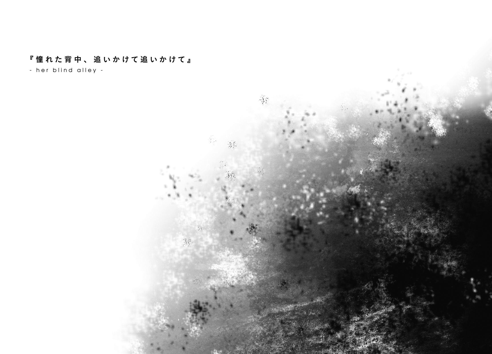
１．真昼の夢
──38番浮遊島港湾区画、戦略艇『ウルティーカ』艇内。
最新鋭の飛空艇は、最新鋭のメカニズムに溢れていた。
呪燃炉の配置が違えば、隔離区域の位置も変わる。姿勢制御翼の数と場所が違えば、そいつを管理するための装置の形も変わる。狭い通路には太いもの細いもの構わず大量のパイプが走りっぱなしで、その中を巡っているものが何なのかは外見からじゃさっぱりわかりゃしない。
従来の飛空艇のセオリーが、ほとんど通用しない。
どれだけ熟練の飛空艇乗りでも、これではお手上げである。空を飛ばして〈獣〉と戦うどころか、まともに港湾区画から飛び立たせるだけでも精一杯だ。
そして何より恐ろしいのは。
この化け物飛空艇は、中身は別売りの単品商品だったのだ。
専従の乗組員などはおらず、割り振られた先である第五師団の人員で、なんとか運用しなければいけないのだ。
どうですかこの芸術品はこいつの性能をきちんと引き出せれば〈獣〉だろうが何だろうがイチコロ間違いなしですよ頑張ってくださいね──艇内のあちこちに触れるたび、そんな設計者の満面の笑みが見えるような気がする。そして、その幻の笑みに向かって全力の拳を叩きこみたくなる。
薄暗い通路の端、
「ったく、冗談じゃねぇよなぁ......」
ぶつぶつとぼやきながら、紫小鬼の整備士がレンチを振り上げる。通路の壁を走るパイプのひとつを、ガンガンと叩く。壁に耳をつけて、反響を聞く。
「奥に音が抜けてってるってことは、こっちは動力系のラインじゃねぇのか。制御系のものだとしたら、下手に手は出せねぇな......」
「何やってるの？」
耳に息がかかるほどの至近距離。
急に女の声がかけられて、慌てて振り返る。
「......って、なんだ、あんたかよ。脅かすな」
「ごめんなさい、集中してたから、声かけるタイミングが見つからなくて。それで、何やってるの？」
「ああ、こいつらの正体探しさ」
言って、パイプを叩く。こーん、と澄んだ高い音。
「設計した奴はどこに何があるかわかってるから平気なんだろうが、現場がそのへん把握してねぇと命に係わるからな。早いとこ調べておこうって寸法だ」
言って、左手に持った色とりどりの紐を軽く揺らして見せる。こいつを一本一本に結びつけて、色の違いで中身を区別しようというわけか。
「こいつを済ませねぇことにゃ、怖くてとても飛ばせねぇからな」
「これが終われば飛ばせるの？」
「まぁ、基礎飛行くらいまではな。実戦で使えるようにするにゃ、乗り込む全員に相当の訓練が必要になるだろうが」
「そしたら、〈十一番目の獣〉にも勝てる？」
「んな保証は誰にも出来ねぇよ。ただ、いい勝負はできるんじゃねぇか。動力も武装も、文句なしの一級品なのは間違いねぇからな」
壁とパイプに視線を戻して、紫小鬼はそう評する。実際、単純な性能の数字だけを言えば恐ろしいほどの一隻ではあるのだ。
設計したやつのことは、もちろん締め上げてやりたいと思っている。
しかしそれはそれとして、一技術者としては、どうしても考えてしまう。この化け物飛空艇が全力を出して空を往く姿を一度見てみたいと。
「ふぅん」
女の生返事を聞いて、紫小鬼は苦笑する。まぁ仕方が無い。自分のこれは浪漫の類だ。誰にでも共感してもらえるものじゃないのはわかっている。
「ま、そのへんは俺たちよりは、武官どものほうに......」
振り返る。
誰もいない。
「ありゃ？」
きょろきょろと通路を見回してみても、やはり誰の姿もない。
飽きられちまったか。
まぁ、しょうがない。本職の自分でも暴れたくなるくらいに地味で退屈な仕事なのだ。素人が見ていて楽しいものでは決して無いだろう。
「辛いところだねぇ」
整備士という職につきものの、よくあることである。いちいち気にしていてはやっていられない。だから彼は、肩をこきこきと鳴らして、再び作業に戻った。
コーン。
響く音に耳を澄まして、パイプたちに素性を尋ねる。お前はどこの誰ですか。どことどこに繫がっていて、どういう仕事をする管ですか。
──紫小鬼の整備士は、気づかない。
彼が素性を問いかけるべきは、目の前のパイプたちだけではなかったはずだった。たったいま親しく話した相手、目の前から消えた女について、自分は何も知らないということを。
２．後継者たち
一晩寝て、風邪は治ったと思う。
気分の悪さも関節の痛みも残っていない。
ふだん通りに動いても問題なさそうではあったのだけど、軍医には念のためあと一日休んでいろと言われた。仕方が無いので、一日分、休暇をとらせてもらうことにする。
とはいえ、体調が戻っている以上、無為に部屋で寝て過ごす気にもなれない。だからといって、休暇中の者が基地敷地内を徘徊するというのもよろしくない。
何か、大事なことを忘れているような気がした。
誰かと、話をしなければいけないような気もしていた。
けれどうまいこと記憶を引っ張り出せない。乾いた砂の奥に埋もれた何かを掘り出そうとしている感覚。掬い上げた端から砂が流れ込んできて、片鱗が見えたかと思った記憶をすぐに覆い隠してしまう。
「......ま、大したことじゃなかったのかな」
こうして首をひねっている最中に、これといって焦りが湧いてこない。
いや、それどころかむしろ安らぎのようなものを感じてすらいる。
ということは、少なくとも緊急の用事などではなかったのだろうと判断できる。本当に必要なことだったのなら、あとから思い出すこともできるだろう。
なんとなく、額にくすぐったいような温かいような、妙な感触が残っている。こいつの正体は、ちょっと気になるところではあるけれど。
「ふわあぁ......あ」
大きなあくびをひとつ。久しぶりに街に出ようかなと思った。
わざわざ外出許可をもらってくる必要はない。基地敷地の裏側にある金網には、今もまだ修復されていない大きな穴が開いている......そしておそらくは、この基地が役目を終えるその日まで、それが修復されることはないだろう。
目を細めて、じっとその張り紙を見つめる。
しかし、いくらそうしていても、そこに書かれている現実に変化はない。どうやら、まばたきせずに三十秒見つめていたら文面が変わりますとか、そういうびっくり系の仕掛けはないようだった。
『長い間、ご愛顧ありがとうございました』
四隅の糊付けが甘かったらしく、右上の角が剝がれてしまっている。吹き抜ける風を受けて、『長い間』の辺りの文字がばたばたとはためく。
いっそこの紙がどこかに吹き飛んでしまえば、この店は再び開いてくれたりはしないだろうか。ないかな。ないよな。うん。
自分に言い聞かせ、現実を受け止めて、それからがっくりと肩を落とす。
「というわけで、今日のドーナツはない」
いつもの廃劇場上で、フェオドールはきっぱりと宣言した。
いつものようにそこにいたティアットは、一度こちらをちらりと見て、「ふうん」と鼻返事をした後に、視線を街に移した。
「なんだ。随分と淡白な反応だな」
「だって知ってたし。一昨日買いにいった時、もう閉まってたから」
「なんだ、そうか」
つまらないな、と思った。
美味いものを食べる喜びを分かち合えるのは、なんだかんだで気持ちのいいものだ。
その感覚は、ティアットも共有してくれていると思っていた。
だから、その肝心のドーナツがないと聞けば、さきほどの自分と同じ落胆を共有してくれるだろうと思っていたのに。
「......この街、どんどん小さくなっていくんだね」
ぼんやりした声で、ティアットが呟いた。
「わたしたちが最初にこの街に来た日のこと、覚えてる？」
「君に『忘れて』って言われた日のことなら」
「あは、そういえばそうだっけ」
笑って、
「あの日、『この街を守るんだぞ！』って気合入れて、あちこち見てたんだ。ちょっと面白そうな店、けっこうあったんだよね。ヘンな陶器の店とか。立ち読みし放題の古本屋とか。パニバルが好きそうな硝子細工店もあったな」
なんでそこでパニバルの名前が出てくるのかはわからなかったけれど、たぶん、確かめるべき場所はそこではないのだろう。
「あの古本屋が消えたのは、僕にもショックだったよ。ウィルホルナキア・テナスの画集とか揃えてあったんだ」
「え、知らない。それ誰？」
「ちょっと昔の、猫徴族美人画絵師」
はああ、とフェオドールは重い溜息を吐く。
「すっごく艶やかな毛並みを、鮮やかに描く人なんだよ。さすがにそういう本を大量に兵舎に持ち込むのもなんだと思って、買い揃えなかったんだ。今は少し後悔してる」
「......へぇ、そうなんだ」
おかしい。今のこの会話は「街が寂しくなっていくのは辛いね」という喪失感を共有するもののはずだ。上官と部下の心温まるコミュニケーションタイムだ。
なのに、話せば話すほど心なしかティアットとの距離が開いていってる気がする。
「本当にいい絵なんだよ？」
「へぇ、そうなんだ」
まずい。距離が開く一方だ。
ちかちかと、足元のランプが光った。さすがにもうティアットも慣れたもので、さっと立ち上がると少しだけ横に移動する。
やや遅れて、先ほどまで少女がいた場所に大量の蒸気が噴き出す。
「慣れちゃうと、これもなんだか楽しいよね。街が息してるって感じがして」
「そういう考え方はなかったなぁ」
ティアットはその場に座り直すと、傍らのバスケットを開き、ドーナツを取り出しかぶりついた。そのままもぐもぐやりながら、
「ここって、よくできたオモチャみたいな街なのよね。ほら、よくあるじゃない。人形の家なんだけど、毎日決まった時間になったら住人が踊り出す、みたいなからくり仕掛けが内蔵してあるやつ。あんな感じ」
「待って」
「......あー、だからなのかなぁ。住んでるひとが減ってくと、部品が欠けてくみたいな感じがして、寂しさ倍増なの」
「いや、だから待って。その手にあるの、何」
ティアットは、にやありと邪悪な笑みを浮かべてこっちを見た。
「気になる？」
「そりゃなるよ！ え、なに、近くに僕の知らない別の店があったとか？」
「残念、非売品でーす」
バスケットから取り出したもうひとつのドーナツを、こちらに差し出してくる。近づいて、受け取る。そのまま、ティアットの隣に座る。
「昨日ラキシュに頼んで、揚げてもらったの。あの子厨房のおばさんたちと仲いいから、ちょっとくらいは私用で使っても黙っててもらえるのよねー」
「......それ、普通にうちの軍規に反してるよ」
「バレなきゃいいの、バレなきゃ。それともまた、『僕に見つかったからもうダメだ』とか言ってみる？」
手の中のドーナツに目を落とす。こんがりきつね色。軽くまぶしてある細かいものは、何かの植物の種を炒ったものだろうか。めちゃくちゃうまそう。
「うん、僕は何も見てないし聞いてない」
「そう言ってくれると思った」
ティアットは明るく言うと、手の中にあったドーナツの残り半分を、魔法のような早業で消してしまう。
対抗するわけではなかったけれど、フェオドールは大口を開けて、自分の手の中のそれにかぶりつく。
「......うわ」
「最高でしょ？ あの子、ちーさい時から近所のパン屋でバイトしててね。今じゃ、小麦粉使う料理なら、68番島で一番なんだから！」
浮遊大陸群に浮かぶ島の中、ある程度以上の大きさのあるものには、番号が振られている。番号の若いものほど中央に近く、数字が大きくなると外縁に近づく。68番といえば、随分な田舎だ。
「どういうところ？」
「ん？」
「いま言ってた、68番浮遊島。君たちの故郷なんでしょ？」
「故郷、っていうか......うん、まぁ、そんな感じではあるけど。知りたい？」
「どういう環境で育てば君たちみたいな性格が育つのか、興味はある」
「なによそれ」
笑って、ティアットは語り始める。
森の奥にある、おんぼろの木造建築。通称は妖精倉庫。建ってから何年経っているのか、もう誰も知らない。常時三十名ばかり、幼い妖精たちが集められている。その子たちの面倒を見ているのは、今は一人の喰人鬼の女。細腕一本（ただし剛腕）でずっと妖精たちの生活を支えている。優しくて、時に怖くて、そしてそろそろ年齢を考えてほしいレベルの少女趣味。倉庫の予算は限られているから、自分たちの着ている私服は、ほとんどはその喰人鬼が縫ったり編んだりしたもの。彼女の趣味が出ているおかげで、全体的に実に可愛らしい。そういう服は、似合う子と似合わない子がいるというのに。ぷんすか。
「いや、君たち全員よく似合ってるでしょ、可愛い服」
「......さらっと言えるところは格好いいけど、きみの言葉だと思うとなぁ」
「いやいや、いくら僕が堕鬼種だからって、いつも噓やおべんちゃらばかり言ってるわけじゃないからね？」
「いやほら、種族とか関係なしに、きみの優等生発言が全面的に信用できない」
「ときどきすごく残酷なこと言うよね、ティアットは」
ティアットは語り続ける。
自分より年上の妖精たちも何人かいるけど、ほとんどはずっと年下。まだ成体になっていなくて、戦いには出られない。どの子も生意気盛りで将来有望。ユーディアは元気いっぱいで、マシャはとても頭がいいのに読書が大嫌いで、アルミタはまだ小さいなりに妹たちの面倒見がよくて、カーナはいたずら好きでいつもナイグラート（さっきの喰人鬼の名前らしい）にお尻を叩かれていて。
止まらない。
ちょっと歩いた獣人の居住区に、お気に入りの映像晶館があること。そこで見た色々な外の街に憧れていたこと。いつか行ってみたいと思った場所がたくさんあること。その中のひとつ、コルナディルーチェだけは、けっこうたっぷりと堪能したことがあること。すごく楽しかった。また行きたい。会いたい人もいるし。
それから、それから。
「............あれ？」
言葉が、途絶えた。
翠色の大きな瞳から、雫がひとつ、こぼれた。
「あ、はは......。ちょっと待ってね、すぐ止めるから」
ごしごしと目もとをこする。
「やだ......、色々思い出しちゃった......」
ぼろぼろと、次から次へと、涙があふれだす。
「アルミタに貸してた本、まだ返してもらってないし......ユーディアと星を見に行く約束してたし......カーナとの勝負、まだ決着ついてないし......」
ひとつを思い出すたびに、ひとつの雫が銅板の上に落ちる。
ああ──なんだ、そうだったのかと思う。
この娘は、死ぬ覚悟を決めているのだと思っていた。
生きることはとっくに諦め終わっているのだと思っていた。
そうじゃなかった。まだ生きていたい理由を全部、思い出さないようにしていただけだった。ひとつの思い出にひとつの涙。止まらない思い出に止まらない涙。
「......なんか、ごめん」
謝罪して、ハンカチを差し出した。
「なんで謝るの」
「ヘンなこと聞いて、辛いこと思い出させた」
「ヘンとは何よ、わたしの家族の話だぞ」
「やっぱりヘンじゃないか」
「なにおう」
笑いながらティアットはハンカチをひったくり、目もとに当てる。白い生地が見る間に色を変えていく。
「......ねぇ。もうひとつ、ヘンなこと言っていい？」
「うん、聞くよ」
「ありがと。......わたし、やっぱり、死ぬの、怖いよ」
無言。どういう言葉をかけていいのかが、わからない。
たっぷり十秒以上の時間をかけて考えてから、答えた。
「──怖いのを受け入れて、それでも立ち向かうことを勇気と呼ぶ、らしいよ」
これはかつて聞いた、必ず正しいはずの、義兄の言葉。
「どうしても自分の命が大切に感じられるのは、当たり前のことだよ。だからこそ、命よりも大切なものを見つけた時に、ひとは当たり前以上に幸せになれるんだ」
自分の言葉を返すことから、フェオドールは逃げた。
「勇気かぁ。うん、なんかすごく大事そうだよね、そういうの」
ハンカチを目もとに押し当てたまま、ティアットはにへらと笑った。
「うん、アドバイスありがと。わたし、がんばってみる」
空虚な笑顔だった。
「あ......」
「そうそう、そういえばね、話は変わるけどね！」
かけようとした声は、わざとらしい大声に、途中でかき消された。
「きみさ、ラキシュのことどう思う？」
思考が止まる。
「え？」
動き出す。
「いやほら、ラキシュがね、きみのこと、けっこう気に入ってるみたいなわけ。わたしとしちゃ、ちょっと趣味悪いなーとか思ったりもするけど、やっぱ妹分の望みは叶えてあげるのが良いおねーちゃんってやつなのかなって思って。
あの子は、ほら、いきなり自分で怪我するようなどっかのおかしいやつと違うから。そのへんは全面的に安心しちゃっていい感じの子だから。だから、ね、どう？」
やや鼻声の、早口。フェオドールの眉が、ぴくりと揺れる。
「──どういう意味？」
「あの子、いかにもって感じの、いい子でしょ？ びっくりするかもしれないけど、あれラキシュの素なの。しかもこの通り、料理上手。男の子的には、ああいう子ってポイント高いんじゃない？」
確かに、それは否定できないけれど。
「それはつまり、僕にラキシュさんの恋人になれと？」
「お、察しがいいねぇ。わたし全面的に応援するからさ？」
「それは、前に言ってたなんとかいう先輩が、死ぬ前に男を見つけたから？」
「男を......って、生々しいなぁ。大枠としては、合ってるけどさぁ」
なははは、とティアットは苦笑する。
「って、なんできみがクトリ先輩のこと知ってるの」
「君の上司だからな、必要なことなら何だって知ってる」
大噓だ。当のラキシュに聞いたことだ。
「その『クトリ先輩』みたいになりたがってたのは、君のほうじゃなかった？ どうして彼女のほうに男をあてがおうとするわけさ？」
「あてがうって、ますます生々しいなぁ」
「事実だろ。っていうか、そういう話だったら、君自身はどうなのさ？」
「へ？ わたし？」
きょとん、とした顔。
少し遅れて、弾けるように顔が赤くなる。
両手をばたばたと手旗信号でも送るように動かして、
「わ、わたし、は、別にいいから。あの子みたいに素直じゃないし、気遣いもできないし、乱暴だし、可愛くないし。賞味期限三か月だし」
その自己評価には、言いたいことが色々あったけれど、飲み込んだ。
「......まぁ、君がそう言うなら、それでもいいけど」
「う、うん、そうして。あー、心臓に悪かった」
深く、胸を撫でおろす。そこまでしんどい話だったのか。
「それで、さっきの話はどうなのさ。何でラキシュさんの話になるのか」
「んー......まぁ、別に隠すようなことじゃないんだけどね。セニオリスって知ってる？」
「そりゃあ」
彼女のフルネームは、ラキシュ・ニクス・セニオリス。そして、例の資料の中によればそれはただの名前ではなく、
「ラキシュさんに適合する遺跡兵装、だっけ？」
「そう。そして、五年前に死んだ最強の黄金妖精クトリ・ノタ・セニオリスに適合してた剣でもあった」
......剣？ 遺跡兵装というのは剣なのか？
「わたしたち四人の中ではね。素手だとコロンがぶっちぎりで最強」
知っている。日々の訓練の中で、彼女の身体能力についてはさんざん見せつけられている。時には体に刻み込まれてもいる。先週かけられた絞め技は本当にきつかった。
「通常兵器を使っていいって話になると、パニバルのほうが上になる」
それも知っている。彼女は帯剣戦闘において、完全我流ながら、とんでもない技量を見せていた。
「けど、魔力アリとか遺跡兵装アリとかになると、これはもう、ラキシュが完全に一人勝ち。たぶん、わたしたち三人がかりでも手も足も出ないんじゃないかな？」
......それは、知らなかった。予想もしていなかった。
「そんなわけだから、わたしたちの中でも、ちょっとした切り札的な扱いなのね。だからきっと、それなりには大事にされて、比較的長生きすると思うから」
力のない、そして中身のない笑顔。
初めてこの場所でティアットと会った時にも見た、灰色の表情。
「わたしじゃ、無理なんだ。クトリ先輩みたいには、どうやってもなれない。けれど、ラキシュになら、できるかもしれない。素敵な妖精兵の一生を送ってくれるかもしれない。だから、わたしには無理だったこと全部、あの子に託したいの」
「その後、君はどうするんだ」
「わかってるくせに」
いつもの、形だけの笑顔。
「わたしは、わたしにできることを精一杯やるだけ。先輩にはなれないけど、勇気を出せば真似できそうなこと、ひとつだけあるから」
──それでも......最後は、大切なひとたちを守るために、自分から戦場に向かいました。二度と戻って来られないことをわかっていたのに、笑いながら。
「ああ......」
いつぞやのラキシュの言葉を思い返しつつ、頷いた。
「わかってくれた？ じゃあ......」
約束の証だとでも言いたいのか、ふたを開いたバスケットをこちらのほうへと押しやってくる。実に魅力的な輝きを放つドーナツが残り四つ、しかもどうやらすべてトッピングが違う。先ほど食べたひとつからしてこれらすべての味が極上であることは約束されているわけで、こりゃもう魂を売ってでも食べるしかないだろうと思うのだけど、
「ごめん」
魂以外の売り渡せない何かが、邪魔をした。
軍服のポケットから眼鏡を取り出して、かけた。
「え？ どうして？ めちゃくちゃ優良物件よ？」
「そういう問題じゃないよ」
ラキシュにティアットのことを頼まれた時と同じだ。
こんな話、請けられるはずがない。
「きみはラキシュさんに託すといった」
「うん」
「じゃあ聞くけど、君が犠牲になって、本当にラキシュさんは先に進めるのか？」
「それはほら、だいじょうぶ、だいじょーうぶ」
自分に言い聞かせるような『大丈夫』だった。
「わたしたち、妖精なんだから。たとえばさ、同じ防火箱に詰められてたからって、発射された仲間のことをいちいち砲弾が考えたりしないでしょ？ それと同じ。仲間が死んじゃったり消えちゃったりするのは普通のことなんだってば」
「そうか」
「そうなの」
うんうん、とうなずく。
「それは、君の言う先輩も同じだったのか？」
「あ......」わずかな逡巡「......たり前でしょ」
ああ、なるほど。
今の表情を見て、ひとつ、確信が持てた。
この子を見ていて感じる苛立ちの正体が、ようやくつかめた。
成体妖精兵ティアット・シバ・イグナレオは。とどのつまり、
「死ぬ理由が欲しいだけ、なんだな」
ほとんど、独り言だった。
隣のティアットに聞こえるかどうかもわからない、そんな小声だった。
けれどどうやら、その瞬間にフェオドールの背後から吹いた風は、声をたしかに少女の耳まで届けてくれたらしい。ティアットの笑顔が、瞬時に赤く染まる。
「んなっ......」
「大好きな先輩の偉業をいくら追いかけても無駄だとわかったから。自分にはそんな劇的で意味のある生き方なんてできないって思い知ったから。いい加減、そうやって夢を追って生きるのにも疲れたから」
「違......」
「だから、せめてひとつだけでも、真似できそうな偉業を見つけて、それに縋った。『仲間たちのために勝てない戦いに挑んだ』だったか？ そいつをやれば、残った連中に、先輩とよく似た背中だけは見せて逝けるからな」
「そんな......んじゃ......」
ぱくぱくとティアットの口が開閉する。
そこからは、言葉は何も出てこない。
「君はただ、尊敬してる先輩の名前を、ドラマチックな自殺の演出に使おうとしてるだけだ」
──返事は、ない。
「気づいてるんだろ。君たちを失った後のラキシュは大丈夫じゃいられない。見た目はとりつくろえるかもしれないけど、根っこのところで、心に罅が入る」
「なんで、そんなこと言えるの」
「僕にも、似たような経験があるからね。
誰かの未来のためにと言って、大切な誰かが死ぬ。当人は満足してるはずだし、自分も納得しないといけない。そう、理屈を頭じゃ理解できる。頭でしか納得できない。心も体も納得しない」
あれは本当につらいよ、と挟んでから、
「君は立派だよ。自分の死に方を探す程度の歪み方で済んだんだから。やっぱり、その後に育った環境の違いかな──僕は、そんな風には、なれなかった」
「......何の、話？」
「そういう風にも育てなかった馬鹿が世の中にはいるってことさ。
そいつには君たちのことが、とてもまぶしく見えてる。自分と同じような目に遭ったくせに、なんでいまだに仲間のことを大事に思えてるんだってね」
息を継いで、
「それともうひとつ、呆れてもいる。大切な人を奪われて、それでも何を憎むこともできなくてさ。さんざん辛い思いをしてきたはずなのに、どうしてそれをもう一度繰り返す気になれるのかって」
「それは」
うつむいていたティアットが、不意に何かを決意したように勢い込んで顔を上げる。
「先輩が、そうしてたから」
「またそれか。だからそれは、君が言い訳に使ってるだけの──」
「先輩のこともヴィレムのことも知らないのに、勝手なこと言わないで」
怒りの声だった。
フェオドールは驚いた。今の今まですっかり肩を落としていたティアットが、これから戦場に向かおうとする戦士さながらに、気力と闘志をみなぎらせた目でこちらを見ている。
「わたしは未熟だしよく間違えるし、色々知ってるわけでもないし物わかりも悪いし、料理もできないし美人でもないけど、先輩はそうじゃなかった。先輩を追いかけたわたしが間違えてたなら、悪いのはわたし。先輩が悪いわけじゃない」
つい先ほどフェオドールがしたように息を継いで、
「だから、ヘンなことは言わないで」
ぞくりと、背筋を何かが伝った。
すぐにはその正体がつかめなかった。けれど、決して良い感情ではないのだろうということだけは理解できた。そして、ここでこのまま会話を続けていたら、その感情はすぐに抑えきれなくなって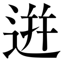るだろうということも。
「そっか」
立ち上がる。背を向ける。
「そのハンカチはあげるよ。いらなかったら捨ててくれていい」
「え？ ちょ、ちょっときみ、話はまだ」
ティアットを置きざりにして、鉄扉を開く。階段を降りる。
背後で閉まる扉の重い音。
そしてそのまま、廃劇場を去った。
羨ましかった。
妬ましかった。
大好きな相手がいて、その背中を追いかけることができて、そのことに胸が張れて。たとえその先が後戻りのできない奈落でも、そのことを最初から理解していても、歩みを止めずに進み続けることのできる決意の強さが。
フェオドールにも、憧れの相手はいた。けれどその背はあまりに遠かった。あの処刑の日から後、フェオドールは一度たりとも、義兄のようになりたいと思えたことはなかった。むしろ、その逆だ。義兄の正しさを証明する道は、義兄のやり方では成らない。そのことを思い知ったあの時から、彼の歩んでいた道に自分から背を向けた。
──先輩が、そうしていたから。
その言葉ひとつが、どこまでもフェオドールの心を苛立たせる。
その爆発音を、フェオドールは、旧鉱山近くの揚げ鶏の屋台で聞いた。
背後、ライエル市の方向からだった。聞こえた範囲で、大小合わせて四つ。いずれもばらばらの方向、ばらばらの距離から聞こえてきた。
どんな激情だって、時間が経てば薄れるものだ。
意地を張ったせいで、ラキシュのドーナツを食べ逃した。そのことを思うと、腹が減る。惜しい事をしたという後悔が湧き上がってくる。あの時はそうするしかなかったと頭では分かっていても、どうしようもなく口さみしくなってくる。
しかしだからといって、ここで別の甘いものを食べてしまうと、何かに負けてしまうような気もしてしまう。
悩んだ末の結論が、脂っこい揚げ鶏である。
ちょっと離れた屋台まで歩く必要こそあるが、炎をそのまま塗り込めたような強烈な香辛料の刺激が、今後数日は甘いものの味などわからなくなるだろうレベルで舌を破壊してくれるはず。ドーナツへの未練を断ち切るにはちょうどいい。
「何だ......？」
注文した揚げ鶏を受け取る寸前に、振り返った。
「またどこかの管理機械が暴走したかね」
屋台の主人がのんびりしたことを言うが、フェオドールの耳には、今のはそんな音ではないとはっきりわかる。火薬を使った、爆発の音だ。
砲撃演習だろうか、と一瞬だけ考える。もちろんそんなはずがない。既に住人の数が大きく減っているとはいえ、ライエル市はまだ生きている街だ。そのド真ん中で火砲を遣うなどという暴挙、少なくとも護翼軍が平時に行うようなものではない。
ということは、可能性は二つ。
今は平時ではなく、護翼軍があれをやったのか。
あるいは、護翼軍ではない何者かが、あれをやったのかだ。
......うん。つまるところ、どちらも結局同じことだ。今あそこには、おそらく護翼軍にとって味方ではないだろう、何者かがいる。
３．勝者のない戦場
大音量の鐘が鳴り響いている。
護翼軍の連絡鐘は、叩き方によって伝達されるメッセージの内容が変わる。代表的なところで二拍と三拍の繰り返しが『非常時対応訓練』、一拍と二拍で『全員自室に戻り待機』、第五師団のオリジナルとしては二拍を連打することによる『食堂在庫僅少につき早い者勝ち』など。
そして、リズムも何もなく、やたらめったら鐘を打っているだけの場合、それは『緊急事態につき総員三次戦闘準備』を意味する。
「フェオドール・ジェスマン四位武官、入ります！」
「遅いぞ四位武官！」
総団長室に飛び込むなり、叱責の声に迎撃された。
「自室で療養していたのではなかったのか？ なぜここまで時間がかかる」
「うまいドーナツを食べ逃していました、お叱りは後ほど。状況はどのような？」
「市内三か所で爆破事件が起きた。現在、動ける武官のほとんどをそちらに派遣し、被害状況の確認および住民の救出を始めている。どこも人手が足りずに目を回しているぞ」
「三か所、ですか？」
「記念館地区のはずれ、北東七番の半スラム化した一画、元マギネス男爵私邸、の三か所だ。どうかしたか？」
「......いえ。地図を拝見できますか？」
作戦机の上に、市内の大地図が広げられている。爆発現場だと判明している三か所には、すでに錘を兼ねた鉛の駒が置かれていた。
「何者の仕掛けによるものかについては、判明していますか？」
「いや、現状ではまだ手がかりになりそうな情報は──」
一位武官の言葉が、途中で一度止まる。
「事故ではないと、もう確信したのか？」
堕鬼種は、噓に聡く、策謀に通じると言われる。いわゆる神秘的で特殊な能力がどうこうというやつではなく、種族ぐるみで性格がねじくれ曲がっているという話だ。
人聞きの悪い話ではあるが、おおむね真実なので反論はしづらい。しかもそれが、こういう場所では意外と役に立ったりもするからまた難しい。
「明らかに。さきほど僕がここにいた時、爆発音は四つ聞こえました」
地図上の一点、旧鉱山そばを指し示す。
「......なぜそんなところにいた」
「うまい揚げ鶏を食べ逃していました。それはともかく、爆発音は三つではありませんでした。そのうち三つはこれらの場所で合っているはずです。残りのひとつは」
地図の上に直線を描かせるよう、赤く染めた紐を伸ばす。
「この方角です。反響の大きな場所であったため、大雑把ではありますが」
「そんな音は、誰も聞いていない」
「別の爆破の音に隠されたんでしょう。比較的小さな音でしたし、この基地からは距離がある。音の遅れまで計算に入れていれば、重ねるくらいは難しくない」
地図上の基地を指さし、他の爆破位置に向けて引いた線との交点を探る。
「もちろん、聞き込みのひとつもすればすぐにバレてしまう程度の偽装にしかなりません。しかし少なくとも、軍の初動で介入されることは避けられます」
「......何のために？」
「爆破からわずかな時間、軍に介入されず何かをするつもりなんでしょう。相手が何者なのかのヒントでもあれば、もう少し狙いが絞り込めたんですが......セルゼル上等兵は今どちらに？」
「緊急連絡員として、隣室に待機している。例の上等相当兵四名も一緒だ」
少し考える。
地図の上、四つ目の爆発の起きていた場所の候補は三か所。そしてその中のひとつが、フェオドールの中では確信に近いレベルで確率が高い。
しかし、その意図が読めない。爆破したい何かがあるというだけならば、ここまで大がかりな陽動を交えて行う必要はない。爆破を行ってから、軍の目を少し逸らしている間に、いったい何をしようとしているのか。その時間で、何が可能なのか。
そもそも、放っておいてもそのうち滅びそうなこの38番浮遊島という場所で、どういう破壊工作をする意味があるというのか──
「......まさか」
38番浮遊島。
飛空艇『ウルティーカ』。
いずれここに衝突する、39番浮遊島。
そして、〈重く留まる十一番目の獣〉。
まさか、そんなことが。
いや、しかし。
ありえないとは思う。そう信じたいと思う。けれど一度それに思い至ってしまうと、それ以外のあらゆる可能性が、現実味を失って感じられてしまう。
間違いない。
誰かは知らないが──今はまだ知らないということにしておきたいが──この手を打ったやつは、堕鬼種の自分が戦慄するほどに、ねじまがった心の持ち主だ。
「一位武官。今すぐご決断を」
「何だ」
「これからナックス・セルゼル上等兵を連れて、港湾区画に向かいます。現場の状況にもよりますが、おそらく５、９、14番あたりのブロックを切り離す必要があるでしょう」
ライエル市の港湾区画は、市内同様にそれ自体がひとつの工業製品だ。港湾区画自体の拡張をしやすいようにと、巨大なブロックを多数組みあわせることでできている。
言い換えれば、それらを接続している鎖やランドアンカーをすべて断てば、区画を構成しているブロックそのものを、まとめて地上に墜とすことができるということだ。
「......は？」
一位武官の視線が、地図上の港湾区画に落ちる。そこはフェオドールが敷いた赤い紐の下にあり、この第五師団基地から聞こえた最初の爆破の方角にも重なっている。
「何を言っている？ 爆破事件から、どうして港湾区画を解体するなどという話になる。そんなもの、市の許可もとらずに強行などできるはずがな──」
言葉が止まった。
「違っていれば、何も悪いことが起きずにハッピーエンドです。しかし万が一のことを考えると、今すぐ向かう必要があります」
「......そういうことか」
苦い声。
「〈十一番目の獣〉を仕掛けた何者かがいると、お前はそう考えたわけだな」
「はい」
頷く──と、
廊下のほうから、走り去る足音が聞こえた。それからわずかに遅れて、
「ごめん、お邪魔する！」
蹴り破らんばかりの勢いで、総団長室の扉が開いた。
飛び込んできたのは慌て顔のコロン、その後ろに続いて青い顔のラキシュ。あと、にやけ顔で後頭部を搔いているナックス。
いつもの顔ぶれには、ふたつ足りない。
「君たち!? 今は非常時だ、総団長室への立ち入りは──」
「いまティアットが、飛び出してった！」
指さした先には、先の足音を追って廊下を走る、パニバルの背中。角を曲がって、すぐに見えなくなる。
「──まさか、どうして」
「あのあの、あの子、総団長さんたちのお話、盗み聞きしてたんです。止めたんですけど、聞かなくて。それで、さっき、いきなり走り出して」
ラキシュの説明を聞いて、状況を理解する。
ああ、なるほど、そういうこと。
もう少し先の日に訪れるはずだったその時が、いま来たというわけか。
この妖精兵たちは、第二師団からの預かりもの。フェオドール・ジェスマンは、必要だからと割り当てられただけの、名目上だけの上官であり監視者。いざ有事になれば指揮から外れて、第五師団以外のどこかの意思に合わせて、勝手に動き出すだろう。
その予想は出来ていた。
出来ていたはずだった。
「......上等相当兵が、正規の手続きを踏まずに自分の立場を放棄するのは、敵前逃亡に等しい行為として扱われる」
その言葉を、喉の奥から絞り出す。
「ま、待ってください、ティアットは、あの子はその！」
ラキシュが両腕を広げて何かを主張している。
「一位武官」
フェオドールは尋ねた。
「彼女たちの遺跡兵装の保管場所を、ティアットは知っていますか」
「何？」
驚かれた。それも当然だ、フェオドール・ジェスマン四位武官は、遺跡兵装というものの存在を知らされた立場にない。
だが、その不自然に対する追及は、少なくともその場では無かった。
「そうだな。ティアット上等相当兵は、四人の代表者だ。彼女にだけは、該当する機密倉庫の番号を教えてある」
「理解しました。僕は少々野暮用を思いつきましたので失礼します。港湾区画解体の責任者については、このナックス上等兵を推薦します」
「へ、俺？ 何の話？」
ナックスが戸惑うように尋ねてくるが、無視して走り出す。
「お、おい、どこ行くんだよ！」
答える余裕も惜しい。目的地に向かって、まっすぐ駆ける。
廊下の向こうにフェオドールの背中が消える。
「......行っちゃった」
コロンがぽつりとつぶやく。
「い、いいい一位武官、これにはその、きっと深いわけが」
ラキシュが大慌てで両腕を振る。これで、ティアットに続いて、フェオドールまで本来の持ち場を離れたことになる。非常時の軍において、当然それは無視できない罪になる行動であるはずだ。
「やれやれ、あの小僧は」
そのラキシュの慌てぶりを一瞥だけして、一位武官はとぼけた声で呟いた。
「まぁ、今は仕方があるまい。呼び戻す時間も人員もない。戻ってきたら、ゆっくり説教するとしよう......あー、セルゼル上等兵」
「あ、はい。なんすか大将。俺の仕事、できました？」
「ああ。今すぐ市内に向かって、港湾区画の構造に詳しい者を集めて来い。面倒があったら脅してもかまわん。これから港湾区画を墜とす」
ああなるほど港湾区画をね、とナックスは小さく頷いてから、
「......今、なんと？」
「現在時点で推定される破壊対象は５、９、14。状況の進行具合によってはさらに増えるかもしれん。現場に向かい、必要と思われるブロックをすべて墜とせ。
時間がない。復唱省略でいいから、さっさと行け」
「は、はい!?」
廊下を走るよりは速いと判断したか、鷹翼種が大窓を開き、飛び出していく。その背中を、一位武官たちは黙って見送る。
「あ、あの......わたしたちは？」
やれやれ、と首を振りながら、
「ここで待機だ。最悪の場合を想定しておかなければならなくなった」
一位武官は革張りの椅子に、深く背中を投げ出した。
──二十分後、ライエル市、港湾区画。
〈十一番目の獣〉は、触れているものと同化して成長する。その速度は極めて遅く、また触れていないものにとっては何の脅威にもならない。
しかし、ここに衝撃を加えると、同化の速度は爆発的に加速する。例えば足で踏みつけるだけでも、瞬時に靴底を搦めとるくらいのことはやってのける。剣で斬りつけられれば、その剣とその持ち手をまとめて黒水晶の塊に変えるだろう。そして、加速した同化速度は、その後少しの時間をかけて減速し、もとの速さに戻る。
さて、そんな〈十一番目の獣〉に、大きな爆風をぶつけることができたなら、どういうことになるだろうか？
目的地を視認できるところまで来て、フェオドールはようやく足を止めた。
息を整えながら、ぐるりと見回す。被害状況は、簡単に目視できた。予想どおり。
最新鋭すぎてシルエットすら最新鋭な飛空艇、戦略艇『ウルティーカ』。その腹部を中心に、既に半ば以上が黒水晶化している。そして今も、無数の虫が這いまわるような音を立てて、船体を構成する鋼鉄や緋重鋼を蝕み続けている。
おそらくはどこかのタイミングで、何者かに艇内に〈十一番目の獣〉の欠片を仕込まれたのだろう。
もちろん、知られている限りの〈十一番目の獣〉の進行速度であれば、こっそりと誰にも気づかれないままこれほどのサイズまで育てるのは不可能に近いはずだ。間違いなく、先ほどの爆発は、この侵食を加速させるためのもの。
侵食の速度は、見てわかるほどに速い。このまま放置していれば、数十分と経たないうちに、港湾区画の他のブロックにまで同化が進んでしまうことだろう。
辺りに、人の気配はない。
この辺りは、港湾区画の中でも、特に出入りする艇の少ない一画だ。とはいえ、陽が落ちているわけでもないこの時間、『ウルティーカ』の周囲にすら誰もいないというのはあまりに不自然だ。
（......血の臭い）
助けを呼びそうな者たちは、予め排除されていたのだろう。ここで爆発が起きたことの連絡はさらに遅れ、その間にこの〈獣〉はさらに周辺の同化を進めていくという寸法。
（〈十一番目の獣〉、か──）
天気の良い日に遠く39番島ごと眺めることはあれど、これほどの近い距離から見るのは、初めてだ。
こいつは、衝撃を吸収することで同化を加速させる。つまり、誰かが砲撃を加えたり剣で斬りつけたりしたら、それだけ成長を速めるということだ。それならば、発見から数時間も経っていない現時点でここまで状況が進行していることも説明できる。
剣。
そういえば、ティアットが言っていた。ラキシュの使うセニオリスとかいう遺跡兵装は剣なのだという。では、ティアットの使うものも同じなのだろうか。どういう威力があるのかは知らないけれど、至近距離から剣で相手をぶった切るのが彼女ら黄金妖精の戦い方なのだろうか。
だとしたら、もしかして。
妄想が始まる。
ここまで走ってきた自分はまったく間に合わなかったのだ。ティアットはとっくの昔にどこぞの倉庫から自分の剣を引っ張り出し、ここに来た。魔力を熾して身体能力を底上げし、機関室あたりに根を張った〈獣〉に斬りつけた。しかしその攻撃は通用しない。当然のように〈獣〉は勢いづく。
斬撃の凄まじさがそのまま〈獣〉の侵食速度となる。剣だったものは一瞬のうちに黒水晶に化け、その変化はティアットの腕にまで及ぶ。彼女は気丈だ、悲鳴ひとつあげずに状況に対応しようとするだろう。しかし両腕と刃物が奪われてしまった以上、脱出のために打てる手は残されていない。暴れれば暴れるほど状況は悪化し、やがて肺が失われると同時に悲鳴をあげること自体が不可能になり、彼女は人知れないまま力尽き、誰もいない機関室の中で黒水晶の彫像となる。その口元にはきっと満足そうな笑みが
「早いね、フェオドール」
妄想を打ち切る。
手のひらが嫌な汗で濡れている。こっそりと軍服のズボンで拭いながら、フェオドールは顔を上げた。
基地のほうから、ティアットが、近づいてくる。
その手には、少女自身の体長にも届こうかという、巨大な剣。光沢を見るにいちおう金属製ではあるようだが、なぜか剣身に無数の罅が入っているのが不安を誘う。
表情は、とても静かだ。
気負いも焦りも恐怖も、何もない。強いて言うなら安らぎのようなものが、光のない瞳の向こうに、かすかに揺れていた。
「遅かったな、ティアット」
どうやら、先回りは成功していたらしい。胸の中で、安堵する。
「そう言わないでよ、けっこう苦労してきたんだから」
その心中を知ってか知らずか、ティアットはわざとらしく明るい声で、
「そりゃ魔力全開で飛んだりしてればもっと早かっただろうけど、わたしあんまりスタミナのほうに自信ないし。肝心の時にバテて『門』を開けなかったりしたら色々台無しだし」
「パニバルが追っ手についてたはずだろ。あいつはどうした？」
「撒いてきた。あの子、わたしの目的地がここだって知らなかったはずだしね。そのうち気づくだろうけど、まだちょっとだけ時間はある」
「ところで、聞こえたと思うけど、三次戦闘準備が発令されてる」
悠然とした姿勢を保ちながら、言う。
「上官として命令するぞ。今すぐ引き返して指令を待て、ティアット・シバ・イグナレオ上等相当兵」
「やだ」
話しながら、ティアットは歩みを止めない。
まっすぐに『ウルティーカ』に向かって進む。
その進路をふさぐ位置に、胸を張って立つ。ティアットの歩みがやっと止まる。
「どいて」
「それも断る。ここは作戦区域だ、我々の戦闘の邪魔になる者は通せない」
表情を引き締めて、ティアットは剣を構えた。
切っ先はフェオドールに向けられている。
「あまり無理言ってると、ちょっと怪我するよ。先に言っとくけど、これで殴られたらけっこう痛いから」
「それは嫌だな」
「だったら、黙って見てて。最高レベルの魔力を使った攻撃があいつにどのくらい通じるか、その目で確かめて今後に活かして」
実際のところ、こと〈十一番目の獣〉との戦いのことだけを考えるなら、それは有益な提案であるようには思えた。情報を超える武器はない。今後の護翼軍の戦いのためにも、それ以外の者たちの目的のためにも、敵のデータが少しでもとれるということは望ましいことだ。
そのためなら、多少の損害は正当化される。
されてしまう。
「たぶん、通じないと思う。でも、それでいい。わたしたちの力じゃ届かないってわかりさえすれば、39番島の〈十一番〉との本番の戦いで、コロンとパニバルはもう少し慎重に扱われることになる。
今のまま、わたしたち三人が一度に無駄死にするより、ずっといい結末。でしょ？」
フェオドールは港湾区画の地面に視線を落とす。
この辺りは完全に機械化していて、土や岩の地面はまったく残っていない。槌で展ばされたような銅板が何枚も重ねられ、乱雑なリベットで留められているだけだ。
「君も、パニバルも、コロンもラキシュさんも、みんな戦わずに逃げるわけにはいかないのか？ 誰も死にたくないし、死なせたくないんだろ？」
「ダメだよ。わたしたちが死なないと助けられないひとたち、大勢いるんだから」
瞬間、フェオドールの全身が沸騰した。
視界が赤く染まるほど、一瞬で血が上った。
思い出されるのは、エルピスの民衆。義兄が命をかけて守ろうとした人々。そして、義兄の命を奪うことで、何かの溜飲を下げようとしていた人々。
「──今後の浮遊大陸群のことを考えるなら、君の言う通りにしたほうが、効率がいいんだろうね」
「わかってくれた？」
「僕らの大義のためにも、そっちのほうが都合がいいんだろう」
「なんかさっきのとかぶってる気がするけど、まぁ、そうなんじゃない？」
その瞳が、わずかに揺れているのが見える。
そんなふうに泣きながら、希望を語るやつがいるかよ。
そんなふうに怯えながら、勇気を奮うやつがいるかよ。
噓つきで堕鬼種に勝てると思うな。
「お願い、どいて。ドラマチックな自殺でもなんでもいいから、私に行かせて」
ティアットの声に、焦りと苛立ちが混じる。
「却下だ」
「そ──」
「僕はね、美談ってやつが、好きじゃないんだ」
挑発的に肩などすくめながら、続ける。
「世界でも他人でも何でもいいよ。とにかくそういうのを守って、本人だけが満足して死んでいくってやつが、昔から、とにかく大嫌いなんだよ」
「い、」ティアットが声を張り上げる「意味わかんない！ 早くどいてよ、あんまり時間ないんだから！」
「義兄さんは、言ってたよ。この世界はまだ、捨てたもんじゃないって。だから僕は、世界が義兄さんを殺した時に、その世界を捨てることに決めた。
──けど、今は、それより大事なことができた。
死んだ義兄さんへの当てつけよりも、ずっと優先するべき大切なことだ」
両手を、ゆるく広げる。
立ちの姿勢は、そのままに。
眼鏡をとって、投げ捨てる。
「僕は決めたよ、妖精兵。大義とか大陸群の未来とか、そんなものはもう、どうでもいい。種族総出で美談を演出したいっていうなら、守られるべきじゃない連中まで守ろうっていうなら、君たちはすべて、僕の敵だ」
ゆっくりと息を吸って、吐いて。
胸の奥から湧き上がる感情のままに、獰猛な笑みを浮かべて。
そして、静かに宣言する。
「君たちの、邪魔をしてやる」
「──っ!!」
地を蹴ろうと、ティアットが体を沈めたのが見えた。
その瞬間にはもう、フェオドールは体を反らしている。ぼぅ、と炎が膨れるような音がして、とんでもない威力の風が肌を叩く。
（っとぉ!?）
最小の動きで避けるつもりだった。そして実際にそれは成功した。
しかし、予定していたよりもはるかに近い。至近距離を大質量が薙ぎ払っていったことで、体が引きずられるように宙を泳ぐ。
（何だそりゃ!?）
口元が、勝手にひきつった。
笑みの形になっていたかもしれない。
いま何が起きていたのか、すぐには理解しきれなかった。風に引きちぎられた髪の毛が数本......いやかなりの量まとめて、ばらばらと風に舞っているのが見える。
ティアットが距離を詰めて、剣を振ったのだ。
いちおう殺すつもりはないということなのか、刃は寝かせていたようだ。その手加減に意味があるのかはこの際さておくとして。
（まさか、魔力での身体強化か!? これが!? 噓だろ!?）
魔力とは、一種の毒のようなものだと理解されている。厳密には違うにしても、働き方のイメージが似通っているというのがその理由だ。
それは、ざっくり言えば、死に近づくことで汲み上げられるエネルギーだ。
もともと頑強であったり、生命力の溢れている者にはそもそも扱えない。
逆に、虚弱であったり衰弱しているなど、生命力の乏しい者であればあるほど、強力な力を熾すことができる。しかし、一歩間違えれば、その力に吞まれてそのまま死ぬことになる。
だから、軍においての一般的な認識では、魔力は、弱小の種族が他種族との基礎的な身体差を埋めるために扱うものとなっている。言い方は悪いが、「弱者が一矢報いるための健気な努力」程度の扱いだ。少なくともフェオドールは、彼女たちの力を認めながらも、心の片隅では同様の思いこみを抱えていた。
とんでもない誤解だったと、今さらながらに思い知った。制御された状態の魔力でこれなら、暴走状態になったそれはどれだけ凄い力を振るうことか。
「ひっ!?」
情けない悲鳴が喉から溢れたが、体はなんとか動いてくれていた。涙目のティアットが次々に繰り出す暴虐の刃（の腹）を、すべてギリギリでかわしていく。
そしてその度に、単純な風圧と威圧感とで、吹き飛ばされそうになる。
口元がますますひきつる。嫌な汗が噴き出して止まらない。
いつもの格闘訓練の時のように、ほどよく手を抜いて実力を隠すような余裕はない。少しでも気を抜いたら当たる。そして、当たったらたぶん終わりだ。
怖い。
けれど、不思議と、逃げたいとは思えない。
「やっと、自分の気持ちがわかったよ」
挑発するように、フェオドールは呼びかける。
「そのクトリ・ノタ・セニオリスとかいう御大層な先輩に、腹を立ててんだよ。
そいつがバカなことをしてバカな死に方したから、後輩が勘違いしてバカを始めてんだ。責任とれってんだよ。なぁ？」
「............」
ティアットの表情が、変わった、気がした。
ぐちゃぐちゃな泣き顔のまま、瞳にわずかな冷静さが混じった。
得体の知れない威圧感が、フェオドールをわずかに後ずさらせる。呪脈視などという便利な力を持たないフェオドールにはわからないが、魔力をさらに激しく熾したのかもしれない。
「あと、ヴィレムとかいうやつのほうもだ。なーにが素敵な恋だよ。要するに、世間知らずのお子様部下に手ぇ出した技官がいたってだけの話じゃないか。男としちゃある意味めちゃくちゃ尊敬するけど、人としちゃ軽蔑のひとことしかないね」
「あ............」
トドメだった。
ぶっちん、と極太の血管の切れる音が、聞こえたような気がした。
半端な速度ではフェオドールを捉えきれないと判断したのだろう。ティアットが、銅板の地面に特大のへこみを作りながら、駆けた。
（......やっぱ、そう来るか）
呼吸を止め、フェオドールはその動きをかろうじて目で追う。
凄まじく、速い。
剣の柄からは手を離していた。空中に放り出された大剣が自由落下を始める。それが終わるよりもはるかに早く、ティアットは拳を振りかざすと、フェオドールの眼前まで距離を詰めていた。
なぜ剣を使わないのか。たぶん、すでに脅すつもりがないからだろう。多少の手加減はしつつも、ダメージを入れることは覚悟の上で、拳を叩きこむ。
そしてそれは、この状況における、本来の最適解でもあった。さきほどまで（文字通り）必死になって剣を避けていたフェオドールの目は、すっかり軌道に慣れきっていた。そこに、まったく違う動きで襲い掛かられたら、避けきることなどできるはずもない。
けれど。
強引に手を変えた者の動きからは、必ず選択肢が減る。ティアットの動きが見えていたわけではなかったが、たぶん殴りかかってくるだろうなという予想はしていた。
日ごろの訓練の際に見た動きからして、最初の踏み込みは右の足。そのまま跳躍するように間合いを詰め切って、腰の左から右肩へとねじるように力を溜めた一撃を、相手の首筋のやや斜め上から打ち下ろす。
そう来るだろうと予想して、迎撃した。身を低く沈めて拳が描くであろう曲線から逃れ、前方へと身を滑らせながら、弧を描くようにして左の手を突き出す。
まばたきひとつほどの時間が経った。
ティアットはうつ伏せになって地面に倒れ、フェオドールはその腕を背中にひねりあげ動きを制していた。
「あ......」
宙に放り出されていた剣が、地面に落ちてガラガラと耳障りな音を立てる。
一瞬、何が起こったのか、わからなくなったのだろう。ティアットは、きょとんとした顔になり、何度かまばたきを繰り返す。
フェオドールの喉から、ぷはぁと大きな息の塊が吐き出された。まるで何時間も呼吸をやめていたかのような息苦しさだった。
「僕の、勝ちだ」
「き、きみねぇ！」
組み伏せられたその姿勢のまま首だけで振り返り、ティアットがにらみつけてくる。
「侮辱は撤回しないぞ」
荒い息を整えながら、フェオドールは言う。
「君らがそこまで言うんだ、二人とも本当に立派な連中だったんだろうさ。立派な勲功をあげたんだろうし、大陸群を何度も救ったんだろうし、自分たちの人生を精一杯に生きただけなんだろうさ。
そういうやつらを悪く言うのは、僕だって良心が咎めるよ」
「だったら！」
「でも」
思いきり息を補充してから、大声で叫んでやった。
「いま僕の目の前で、君たちの人生を追い詰めてるのはその二人だ！」
しばしの沈黙。
「......はへ？」
何を言われたのか、理解が追いつかないらしい。
毒気が半分だけ抜けた、間の抜けた顔。
「だって、そうだろうが！
後輩がどんだけ単純バカだったり純真無垢だったりしてるのかも気づかずに、二人だけでキレーなラブロマンスだけ見せつけて退場するとか、最悪だろ!? あげくその後輩二人ともが立派な恋愛脳こじらせたあげく自己犠牲大好きに育つとか、本っっ気で笑えなすぎて逆に笑えてくるよ！」
ちなみにフェオドールのほうも、勢い任せに思いつく言葉を並べ立てているだけなので、そろそろ自分が何を言っているのか把握できていない。
たっぷり数秒の時間をかけて、ティアットの顔が、再び怒りに染まる。
「誰が恋愛脳こじらせた自己犠牲大好きよ！」
「君らだ君ら！ 自覚ないのかよ自覚は！」
「しかも何なのよ『単純バカ』と『純真無垢』って！ わたしとラキシュで扱い違いすぎるんじゃないの!?」
「そこまで正確に伝わってる時点で自覚ありじゃないか！」
「え、なにそれ本当にそういう意味だったの!? 信じらんない！」
「かまかけたのかよ！ そういう性悪な手口は──」
瞬間、
あまりに多くのことが、短い時間の中に起きた。
最初に、フェオドールの視界がずれた。
状況を理解するのに、一瞬の時間がかかった。おそらくはとんでもない力でティアットが自分を突き飛ばしたのだと判断した。押さえの技も、有利なはずの体勢も、あらゆる要素をすべて吹き飛ばして余りある、単純な腕力。
右腕を滑らせて、分銅つきロープを繰り出す。大きく弧を描かせ、勢いをつける。
一瞬だけ見えたティアットの目が、「ごめん」と言っている気がした。
ティアットが、地を蹴った。
先ほど投げ出していた剣を拾い上げ、地の銅板に大きな皺を刻みながら方向を反転。『ウルティーカ』およびその中に宿った〈十一番目の獣〉に向け、風の速度で疾走する。
や──
制止の声すら、到底間に合わない。ティアットの剣の、剣身の罅が隙間を広げる。そこから光があふれ出す。何かが起きようとしている。取り返しのつかないことになろうとしている。そのことには気づいているのに、水の中でもがいているようなもどかしさの中、何もできない。
め──
光が、届いた。
少し遅れて、耳をつんざくような、凄まじいまでの大爆音。
限界まで集中力を発揮したフェオドールの頭は、その瞬間に、何が起きたのかをほぼ正確に把握していた。ティアットに突き飛ばされ地を転がり、まだ姿勢を立て直せてもいない状態でも、目の前に完成しつつある絶望について、正確に把握していた。
この場所に仕掛けられていた火薬は、二段構えだったのだ。
細かい意図まではわからないが、対人を意識していることは間違いないだろう。
最初の爆破で成長した〈十一番目の獣〉の周囲に軍が集まるのを待ち、まとめて始末する──あるいは、港湾区画を墜とすことの是非で揉めている連中の目の前でタイムオーバーを告げる──そういった、ひねくれ曲がり果てた目的をもっての仕掛けだったのだろう。
幸いだったのは、今この場に、フェオドールとティアットの二名しかいなかったこと。そして不幸だったのも、今この場に、フェオドールとティアットの二名しかいなかったことだろうか。
ろ──!!
一瞬のうちに、黒水晶の侵食は『ウルティーカ』をまるごと吞み込んだ。
むろん、それで終わるはずもない。黒水晶の侵食は船体を固定していたアンカーアームを瞬時に吞み込み、見る間に港湾区画を広がってゆく。
爆風にあおられ、ティアットの突進の速度は殺されていた。しかしその足元に、凄まじいまでの速度で、黒水晶化の力が迫りくる。
もう、間に合わない。
その覚悟がフェオドールの脳裏をかすめたその瞬間に、
がこん、と足元が大きく揺れた。
世界が傾いた。
ぞっとするような浮遊感が全身を包む。
まるで地面がなくなったかのような錯覚をおぼえ、そしてその一瞬後には、それが錯覚ではなかったことを知る。５、９、14番ブロックの計画的な崩落。指示していた通りのことが、どうやら間に合う形で、実行されたらしい。間抜けな四位武官と上等相当兵が一人ずつ巻き込まれることになるが、その程度の犠牲で浮遊島がまるごと助かるのであれば、躊躇の必要はない。
（......くっ）
右腕を伸ばす。先ほど繰り出した分銅つきロープが、もどかしくなるほどゆっくりと時間の流れる視界の中、ようやくティアットの足首に絡みついた。
ティアットがバランスを崩す。
けれど、それだけだ。引き戻せるほどの余裕はない。
一瞬のうちに〈十一番目の獣〉の中に頭から突っ込んで終わる結果になるはずのところ、姿勢を崩したおかげで、ほんの数秒ほど死の時を遅らせることができた。それだけだ。
彼女の死は、もう避けられない。そして、それから少しだけ遅れて自分の番かなと、フェオドールは思った。
死にたくない、と思った。
そして同時に、もう逃れられないであろう墜落死を、心の奥のほうで受け入れた。その諦めが、全身を脱力させた。
惰性でそれでもいちおう体は動く。まだ無事な地に何度も叩きつけられ、転がりながらもなんとか身を起こし、そして、
「でっ!?」
フェオドールの足元を構成していたブロックが、細かく崩れて、墜ちてゆく。
あの〈十一番目の獣〉も、接触していないものは同化できない。空中に投げ出されてしまえば、その脅威からは完全に逃れられる。
とはいえ、もちろん。そんなもの、道筋が多少変わるだけで、最終的には死に至るということに何の変化もないのだけど。
（......まぁ、まだマシだったほうかな）
心中で、小さく呟く。
（自己犠牲よりは無駄死にのほうが、まだ命の捨て方としては上等だ）
踏み出した靴の底が、銅板の大地に届かず、むなしく空を搔いた。
全身が、重力のない世界に投げ出された。
──拝啓、親愛にしてクソッタレなる、我が偉大なる義兄上様。
ぞっとするような浮遊感に身を委ねながら、フェオドールは心の中で囁く。
──これから、あなたの不肖の義弟が、そちらに参ります。あなたが守ろうとした世界を、あなたを殺した世界を、どうにかして滅ぼしてやろうと頑張っていましたが、どうやら力が及びませんでした。五年もかけて何してたんだと思うと、まったくもって汗顔の至りというやつです。
──けれど、そんな僕にもひとつだけ、誇れることがあります。すべてを失った五年前のあの日以降、僕はある程度以上親しい相手を作らないように心掛けて生きてきました。いつ、どんな形で死んだとしても、誰も悲しまないように。どこの誰にもこの死を美談として語らせなどしない、そう胸を張って消えていけるように。その願いは果たされました。僕は今、一人きりで無に消えようとしています。この一点をもって、僕は、どこまでも強く正しくあり続けていたあなたを越えたと確信し──
何かがおかしいなと思った。
浮遊感がいつの間にか消えている。いつまで経っても地上の地面に激突しない。
そして何より、何だか妙に暖かいものに包まれている気がする。
おそるおそる、目を開いた。
すぐ目の前に、ティアットの顔がある。
「......ええと？」
状況を把握する。自分は今どうやら、ティアットの体にしがみついている。そしてそのティアットの背からは、淡い翠色に透き通った、大きな幻翼が浮かんでいる。
「君、生きてるのか？」
「うん」
首を動かさず、声だけでティアットは頷いた。
「もしかして......君、飛べたりする？」
「うん。きみのこれのおかげで、ぎりぎり間に合った」
言って、右足に絡みついた分銅つきロープをひらひらと揺らしてみせる。これを投げたことで稼げたほんの数秒ほどの時間を使って、なんとかこの幻翼を生みだし、水晶化する地面から飛び立つことができた......ということらしい。
そうか。魔力というやつは、そんなことまでできるのか。識っているつもりでいたが、とんだ無知を晒してしまった。
「僕の完敗だな。結局、君の突撃は止められなかった」
フェオドールは、深い息を吐いた。その息が妙なところにかかったか、「ひゃうっ」という小さな悲鳴とともに、がくんと体勢が崩れかけた。
「わたしのほうこそ、負けちゃった感すごいんだけど。結局アレとは戦えなかったし。生きてるし。さっききみが言ってたこと、全然言い返せなかったし」
「さっき？」
「......覚えてないなら、それでいいや」
なんだよ、それ。
釈然としない気持ちを抱えたまま、抱き合った二人は少しずつ高度を回復する。
太陽が沈もうとしている。
「二人とも負けか。冴えない終わり方だったな」
「あの〈獣〉の一人勝ち？」
「さぁ、それもどうだろうな」
結局自分たちは、あの〈獣〉の脅威に踊らされていただけで、挑みもしていないのだ。だというのにまるで勝負が成立していたかのように語るのも、それはそれで間違っているような気がする。
結局、墜とされずに残った港湾区画は全体の半分強といったところだろうか。残された港湾の隅のほうに立って、ナックスが面倒くさそうに手を振っている。
そして、その傍らにへたりこんだラキシュが、顔面をすべて泣きべそで歪めながら、ぶんぶんと激しく両腕を振っている。
「......なんだ。結局義兄さんにも勝ててなかったのか、僕は」
「え？」
「いや、何でもない」
答えて、改めてティアットの体に強くしがみつく。
「あったかいな、君は」
そう言って、目を閉じた。
「......あのさ」
囁くような声を聞いて、片目を開けた。
「何？」
「先輩みたいになれないわたしがさ。これからどういう風に生きていけばいいか、わかる？」
「......さぁね」
つとめて軽く、そう答えた。
「好きなように探せばいい。たぶん、本来、生きるってのはそういうことだよ」
一週間近くの時間が、飛ぶように過ぎた。
一位武官にしこたま怒られたり、労われたり、おまけのように讃えられたりと、なかなかに面倒くさい一週間だった。
久しぶりに個人で行動できる時間を得たので、フェオドールは市内に出ることにした。例によって許可は取らず、金網をくぐって外に出る。
旧鉱山のほうに行こうかと思う。前に食べそびれた揚げ鶏を、今度こそたっぷりと味わいたい気分ではある。多少歩かなければいけないが、なに、重たいものを食べようとしている者にとって、空腹は常にスパイスだ。何の問題もない。
道を歩く。
ライエル市の道は、そこを往く者にまったく優しくない。入り組んでいたり、どこかのスイッチを押さないと扉が動かなかったり、三叉路が増えたり減ったり移動したり、突然蒸気が噴き出してきたり。慣れていない者はもちろん、慣れたはずの者ですら、少し気を抜くと、まったく知らない路地裏を歩く自分を見つけることになる。
「......さて、と」
初めての道を歩き、休憩によさそうな公園を見つけた。
揚げ鶏の包みを手に、錆の浮いたベンチに腰掛ける。一口をかじる。肉汁があふれ出す。揚げたてのころに比べればさすがに少し冷めているが、このくらいのほうがむしろ食べやすいというものだ。
辛い。辛くてうまい。満足げにもぐもぐやりながら、
「久しぶり、姉さん」
そちらに目もやらずに、隣に声をかけた。
「うん、久しぶり」
銀色の髪の女が、こともなげに答えて、そのままベンチの隣に座る。
いつの間に、そこに立っていたというのか。
「五年ぶりね、フェオドール。意外と元気そうじゃない」
うんうんうん、と何度も繰り返し頷く。
「意外とか言わないでよ。先週は本気で死にかけたんだから」
「そうみたいね。あなたがこんなところにいるなんて思ってもいなかったし、護翼軍に入ってるなんてもっと思ってなかったし、私の計画に首を突っ込んでくるなんてもっと思ってなかった」
涼しい声で、隣の女は言う。
「どうして、護翼軍なんかで軍人してるの？」
「僕の目的、僕の大義のためだよ、邪魔はしないでくれると嬉しいんだけど」
「そのつもりはないけど、私の道の前に出てきたら、普通に踏みつぶすわよ？」
「ほんと肉親を何だと思ってるんだろうね、この姉は」
「心外ね。そこまで冷たくはないつもり。死んだら、ちゃんと少しくらいは悼んであげる。気がむいたら、お墓に花も届けてあげるから」
「それはそれは、姉さんにしてはずいぶんと優しいね」
もぐ、と鶏にかじりつく。
隣の女、フェオドールの実姉であり、エルピス国防軍軍団長の妻であった女は、穏やかに笑う。
「それで？ 先週の〈十一番目の獣〉は、『小瓶』を使って仕掛けたんだろ？ そんな最終兵器を使い潰してまで、この島で何をしたかったのさ？」
「そうね......そのあたりはひとまず、秘密ってことにしておきましょう」
唇に指をあてて、くすくすと笑う。
「でも心配しないで。あなたの計画の邪魔にはならないはずだから」
フェオドールは溜息をついて、
「姉さんと話をしていると、堕鬼種っていうのがどれだけ性根の腐った種族なのか、改めて突きつけられてる気分になるよ」
「あら、ひどい言われようね」
「日ごろの行いのせいだね」
言って、フェオドールは残りの鶏をたいらげた。
「さてと。可愛い弟の顔もみたし、実はあんまり時間ないし、私はそろそろ行くわ」女はベンチから立ち上がる「......積もる話もあるはずだし、せっかくだから、また会いましょう。来週あたり、どう？」
「......ごめん、姉さん。そいつは無しだ」
「あら」
女はきょとんとした、まるでプレゼントの箱の中が空だった時の子供のような顔になる。
「僕はもう二度と、誰とも再会の約束はしない。五年前のあの日、そう決めたんだ」
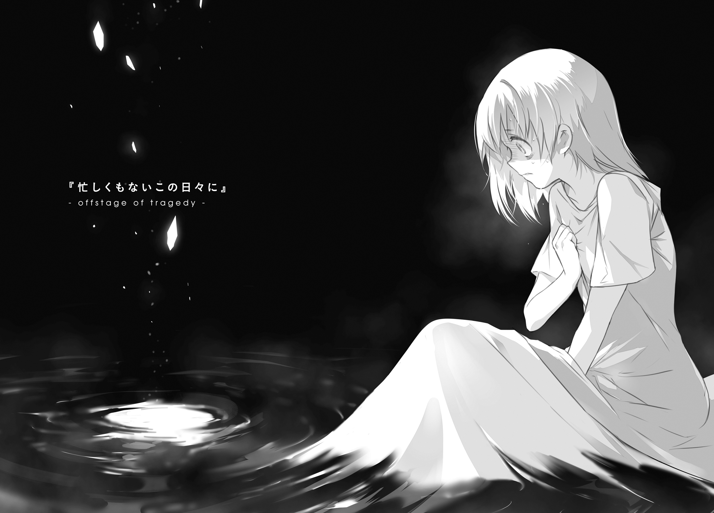
一面に広がる赤い世界に、憎しみが満ちていた。
絶対に赦さない。何があっても忘れない。いつの日か必ず、殺してやる。
それは宣言ではなく、誓言だった。誰の耳に届かなくてもいい。誰の記憶に残らなくてもいい。ただ自分一人の中にその憎悪の炎の一片だけでも灯り続けていればいい、そういう、自分の内側に向けられた、誓いの言葉だった。
『ぐちゃり』『と何かが潰れた音がした』
『くちゃり』『と何かを潰した感触があった』
右手を顔の前に持ってきて、確かめてみる。ゴミのようになった何かが、そこに摑まれている。『よくよく観察してみると、それは────だった』『かつては仲良く笑い合っていたこともある、とても仲がよくてお互いに大切な、友人』
『あは』
『なんだか気』『分が高揚し』『てきて、笑』『顔がこ』『ぼれた』『......
「────コロッ」
その大声を聞いて、目を覚ました。
「......ン............？」
どくどくとうるさい心臓を、右手で押さえつける。
ああ......自分の叫び声で目を覚ますって、本当にあるんだな。そんなどうでもいいことに、少し感心する。
「うるさぁい......よなかにさわぐなぁ......」
二段ベッドの上、ティアットが半分以上寝ぼけた声で抗議してくる。どうせ聞こえていないんだろうなと思いつつ、ごめんねと軽く謝っておく。
先日の一件のことを思い出し、彼女が無事でよかったと、改めて思う。
彼女は、三か月後に自分たちは死ぬことになると思っているだろう。だから、なんとかしてその死を有意義なものにしようとして焦っている。一人でも多くの仲間を、一日でも長く生かすために死んでいきたい。そう願って、動いている。
その気持ちは、とてもよくわかる。
だからこそ、思う。ティアットたちには、三か月どころではなく、もっと長い時間を生きてほしい。
以前、ラーントルク先輩から聞いたことがある。
妖精とは、死を理解する前に死んだ、幼子の魂のなれの果てなのだという。黄金妖精はその中でも、特に巨大な魂を素にしているとかなんとか。
理屈はよくわからないけれど、自分たちが生まれる前は、別の何か大きなものであったということだけは、感覚で理解できた。
迷える魂こそが自分たちの正体であるならば、その魂には必ず素性があるはずだ。
その魂に素性があるならば、そこには記憶があるはずだ。
おそらくは、今の自分たちの妖精としての記憶こそが、かりそめのもの。魂が担うべき本来の記憶がよみがえるとしたら、すぐにでも消えてなくなってしまうことだろう。
それはきっと、自分の死と同じことだ。
あるいはもしかしたら、死よりも恐ろしいことだ。
水を飲もう、と思った。
汲み置きの水が、水差しの中に残っている。
ベッドから起き上がる。暖炉のそば、小型のテーブルの上に置きっぱなしにしていた水差しをとる。カップに注いで、一口を喉に流し込む。
ふと、壁の鏡に気がついた。
この宿舎のすべての部屋の壁に、同じようにこの鏡がかけられているのだという。外してほしいと思いもしたが、きっちり釘やら何やらで固定されているらしく、簡単ではない。なぜ鏡を見たくないのかと問われることも怖かったので、強く求めることもできなかった。
鏡の中には、赤い瞳の少女が映っている。
その少女が、まっすぐにこちらを見て、ぬたりと唇をつりあげて笑った......気がした。
「............っ!!」
思わず、口元を両手で押さえてしまう。カップを取り落とす。絨毯の上に落ちたそれは、音もなく小さく転がって、動きを止めた。
少女はその場に尻を落とす。両手で両目を覆い、小さく嗚咽を漏らす。
いっそのこと、この両の瞳を潰してしまいたい。抉り出してしまいたい。それで解決するという保証があったならば、迷わずそうしていただろうとすら思う。
自分の知らない誰かが、そこにいるのだ。
自分の知らない記憶が、想いが、衝動が、そこからあふれ出してくるのだ。
そしてそれはきっと、自分たちにとって善なるものとは限らないのだ。
ラキシュ・ニクス・セニオリスは、その日、一睡もできなかった。
あとがきという名のあとがき／すなわちあとがき
終わりかけた世界と、自分の物語を終えた後の青年元勇者。
そして、終わりに抗うために自ら終わろうとしている少女たち。
未来という言葉がもはや空虚にしか響かないはずのその場所で、人々はそれでも今日を一生懸命に生きて、明日に向かって精一杯手を伸ばす......
そんな感じにしっとりお送りしていたような気がする『終末なにしてますか？ 忙しいですか？ 救ってもらっていいですか？』シリーズ全五巻、角川スニーカー文庫さんより好評発売中です！ 未読の方はぜひぜひ、そちらのほうもよろしくお願いします！
全力コマーシャルからのご挨拶。
お待たせしました......というのも今回に関しては妙な感じがしますが、ともあれ枯野です。空の上にしぶとく生き残るたくましき者たちの物語、新シリーズの第一巻をお送りします。
いちおう説明を付け加えておきますと、本作品は、前述のシリーズと世界および一部の登場人物を共有しています。
もちろん物語としては独立していますから、「通して読まないと話がわからない！」というようなことはないはずです。しかしもちろん、併せて読めば双方の物語をより深く楽しむことはできるはずですので、未読の方はぜひぜひ、前シリーズ全五巻のほうもよろしくお願いします（二度目の全力宣伝）。
前シリーズからお付き合いいただいている方々（ありがとうございます！）に向けての解説をしておきますと、今作の舞台は、前作における〝最後の戦い〟から五年ほど経った後となっています。小さかった子供たちは、それぞれに少しずつ大きくなりました。無邪気に笑っていられた時は過ぎ去り、ちょっとだけ悲しい表情も覚えました。
すぐ傍で支え続けてくれる保護者は、もういない。自分たちだけで立ちあがり、戦いに赴かなければならない彼女たちの背を支える者は、果たして誰なのか？
......とまぁ、今回はそんな感じのお話になるっぽいです。
あるいは、さびれた街の軍事基地を舞台に、朴訥な田舎娘四人が、ゆるゆるのどかなオフィスライフを送る話になるかもしれません。お茶の時間になるたびに、スコーン片手にイヤミな上司の悪口で盛り上がるんですよ。あいつほんとむかつくよねーと言い合ってるだけで休み時間が終わっちゃったり、当の上司に「働け」とファイルで頭をはたかれたりするわけですよ。噓ですごめんなさいそんな話になる予定はありません。
......ありませんからね？
さて、次巻以降についてですが、さすがに現在時点ではまだ具体的なお話はできません。ですが、企画自体は既に動き出していますので、よほどのアクシデントでもなければ──もしくは私が唐突に遠くに旅立ちたい誘惑に駆られたりしなければ──そう遠くないうちにお手元に届けられるものと思います。
既にご存じの方も多いと思いますが、そういったことについての情報は、ツイッターの角川スニーカー文庫公式アカウント（@kadokawasneaker）や、私の個人アカウント（@a_kareno）などにて、ゆるーい感じで公開されています。発売日やあらすじや小ネタやそれ以外のニュースなどについて知りたいと思われた方は、ぜひ覗いてみてください。
それでは、願わくばそう遠くならないうちに、再びあの空の上でお会いできますよう。
二〇一六年 冬
枯野 瑛
カバー・口絵・本文イラスト／ue
カバーデザイン／百足屋ユウコ＋たにごめかぶと（ムシカゴグラフィクス）
終末なにしてますか？ もう一度だけ、会えますか？#01
枯野瑛
平成28年4月1日 発行
(C)2016 Akira Kareno, ue
本電子書籍は下記にもとづいて制作しました
角川スニーカー文庫『終末なにしてますか？ もう一度だけ、会えますか？#01』
平成28年4月1日初版発行
発行者 三坂泰二
発 行 株式会社ＫＡＤＯＫＡＷＡ
〒102-8177 東京都千代田区富士見2-13-3
電話 0570-002-301（カスタマーサポート・ナビダイヤル）
受付時間 9:00～17:00（土日 祝日 年末年始を除く）
http://www.kadokawa.co.jp/